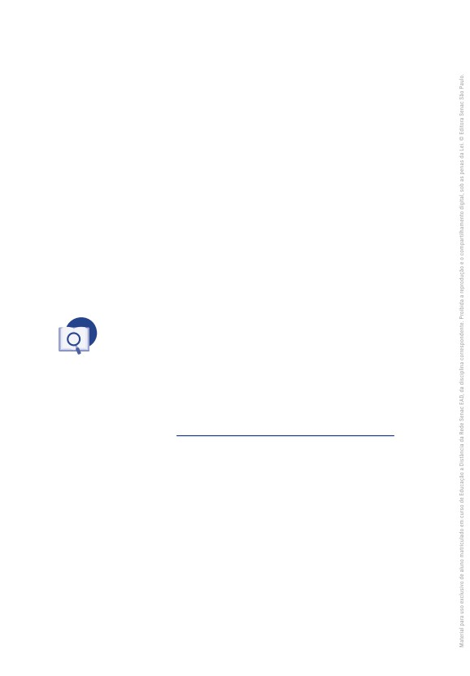
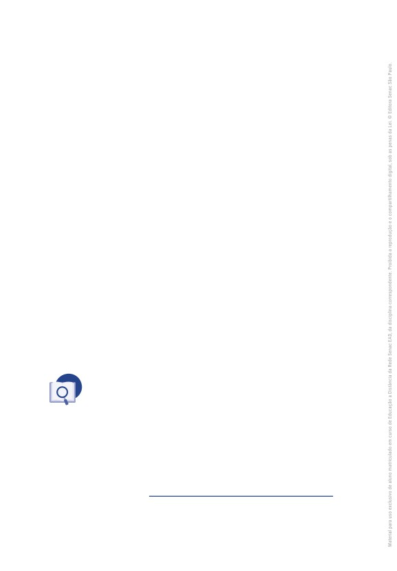
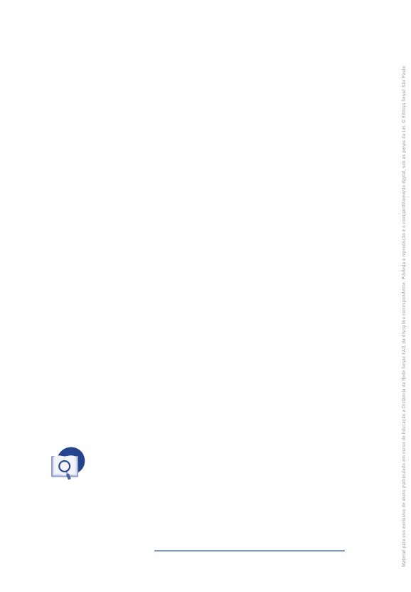

Reinaldo Ferraz
Tendências
da web
Dados Internacionais de Catalogação na Publicação (CIP)
(Jeane Passos de Souza - CRB 8a/6189)
Ferraz, Reinaldo
Tendências da web / Reinaldo Ferraz. - São Paulo : Editora Senac
São Paulo, 2017. (Série Universitária)
Bibliografia.
e-ISBN 978-85-396-1267-3
1. Internet
2. Web - World Wide Web
3. Internet das coisas - IoT
4. Web semântica I. Título. II. Série.
17-542s
CDD-004.678
BISAC COM060000
COM060090
Índice para catálogo sistemático
1. Internet : World Wide Web
004.678
TENDÊNCIAS DA WEB
Reinaldo Ferraz
Administração Regional do Senac no Estado de São Paulo
Presidente do Conselho Regional
Abram Szajman
Diretor do Departamento Regional
Luiz Francisco de A. Salgado
Superintendente Universitário e de Desenvolvimento
Luiz Carlos Dourado
Editora Senac São Paulo
Conselho Editorial
Luiz Francisco de A. Salgado
Luiz Carlos Dourado
Darcio Sayad Maia
Lucila Mara Sbrana Sciotti
Jeane Passos de Souza
Gerente/Publisher
Jeane Passos de Souza (jpassos@sp.senac.br)
Coordenação Editorial/Prospecção
Luís Américo Tousi Botelho (luis.tbotelho@sp.senac.br)
Márcia Cavalheiro Rodrigues de Almeida (mcavalhe@sp.senac.br)
Administrativo
João Almeida Santos (joao.santos@sp.senac.br)
Comercial
Marcos Telmo da Costa (mtcosta@sp.senac.br)
Acompanhamento Pedagógico
Izabella Saadi Cerutti Leal Reis
Designer Educacional
João Francisco Correia de Souza
Revisão Técnica
Fabio de Toledo Pereira
Colaboração
Ana Paula Pigossi Papalia
Coordenação de Preparação e Revisão de Texto
Luiza Elena Luchini
Revisão de Texto
Amanda Lassak
Projeto Gráfico
Alexandre Lemes da Silva
Emília Correa Abreu
Capa
Antonio Carlos de Angelis
Proibida a reprodução sem autorização expressa.
Todos os direitos desta edição reservados à
Editoração Eletrônica
Manuela Ribeiro
Editora Senac São Paulo
Sidney Foot Gomes
Rua 24 de Maio, 208 - 3o andar
Ilustrações
Centro - CEP 01041-000 - São Paulo - SP
Sidney Foot Gomes
Caixa Postal 1120 - CEP 01032-970 - São Paulo - SP
Tel. (11) 2187-4450 - Fax (11) 2187-4486
Imagens
E-mail: editora@sp.senac.br
iStock Photos
E-pub
Ricardo Diana
© Editora Senac São Paulo, 2017
Sumário
Capítulo 1
Capítulo 4
Uma breve história da web, 7
Multimídia, 65
1
As origens da internet, 8
1
Multimídia na web, 66
2
A internet no Brasil, 13
2
SVG e Canvas 2D, 67
3
O início da web, 16
3
API WebRTC, 70
4
Navegadores web, 20
4
API de áudio, 72
5
Mobilidade, 23
5
API WebGL, 75
Considerações finais, 25
6
WebTV, 78
Referências, 27
Considerações finais, 79
Referências, 80
Capítulo 2
Tendências web: linguagens, 29
Capítulo 5
Publicações digitais na web, 83
1
Evolução das linguagens de
marcação, estilo e script, 30
1
O futuro dos jornais, livros e
2
HTML, 32
revistas, 84
3
CSS, 38
2
Marketing digital, 89
4
JavaScript, 41
3
Publicidade online, 92
5
Padronização, 43
Considerações finais, 95
Considerações finais, 45
Referências, 96
Referências, 47
Capítulo 6
Capítulo 3
Internet das coisas na web, 99
Tendências web: web de dados
1
Dispositivos móveis, 100
e web semântica, 49
2
Computação vestível, 103
1
A web com significado, 50
3
Dispositivos de imersão e
2
Web semântica, 54
interação, 106
3
Dados conectados e o futuro da
4
Internet de todas as coisas
web, 58
na web, 107
Considerações finais, 61
Considerações finais, 112
Referências, 62
Referências, 113
5
Capítulo 7
Capítulo 10
Pagamentos online na web, 115
O futuro da web, 157
1
Breve histórico dos pagamentos
1
A web ubíqua, 158
online na web, 116
2
Tendências da interface com
2
Formas de transação online, 119
a web, 162
3
Padronização das formas de
3
Oportunidades de inovação, 164
pagamento na web, 122
4
Publicidade da web, 165
4
Descentralização da web, 124
5
A web dos bens e serviços
Considerações finais, 126
virtuais, 166
Referências, 127
6
Conteúdo personalizado, 168
7
Viabilidade técnica presente e
Capítulo 8
futura, 169
Segurança e privacidade, 129
Considerações finais, 171
Referências, 172
1
A importância da segurança na
web do futuro, 130
2
A privacidade na web
Sobre o autor, 175
do futuro, 133
3
Modalidades de ataques e golpes
online, 136
Considerações finais, 138
Referências, 139
Capítulo 9
Vida digital, 141
1
O homem, a máquina e
a interação, 142
2
A rede como repositório
universal, 145
3
A rede como espaço
econômico, 147
4
A rede como espaço
social, 149
5
Assistentes virtuais, computação
emocional e além, 151
Considerações finais, 153
Referências, 154
6
Tendências da web
Capítulo 1
Uma breve
história da web
A internet é uma das mais recentes tecnologias mundiais e levou cer-
ca de quatro anos para atingir 50 milhões de usuários! Em comparação,
para atingir esse número o telefone levou 75 anos e o rádio 38 anos.
Embora esse número de usuários esteja crescendo exponencialmen-
te em todos os continentes, a internet ainda não está disponível para
todos.
Sua história é tão rápida e dinâmica quanto a sua capacidade de pro-
mover mudanças no mundo. A internet surgiu como uma necessidade
para a segurança nacional, tornando-se uma ferramenta indispensável
para conectar pessoas por meio de sua principal camada de aplicação:
a web.
7
Neste capítulo, vamos conhecer a história da rede mundial de com-
putadores: sua criação, seus objetivos iniciais e quando se deu a per-
missão de acesso para o público em geral.
Tal abordagem será discutida tendo em vista a internet mundial e
a brasileira, que tem como grande protagonista o Comitê Gestor da
Internet no Brasil.
Conheceremos brevemente a história da web (uma das principais
aplicações da internet) e como ela foi importante para popularizar o
acesso à internet fora do mundo acadêmico e militar. A popularização
está diretamente ligada à criação de aplicações voltadas para a codifi-
cação dessa nova tecnologia. Os navegadores web (ou browsers) são
peças-chave para compreender essa evolução até os dias de hoje, em
que a internet pode ser conectada a dispositivos móveis.
Por fim, falaremos da história dos navegadores, das aplicações pe-
sadas instaladas somente em computadores, até as instaladas em dis-
positivos móveis, que nos permitem acessar a rede de qualquer lugar
do mundo. Sem cabos ou amarras físicas, como a web deve ser: livre,
aberta e acessível a todos.
1 As origens da internet
A internet é uma tecnologia jovem, mas que disfarça muito bem a sua
idade.
A atual geração sabe exatamente quando utilizou a internet pela pri-
meira vez. Os mais jovens já nasceram em um mundo conectado em
banda larga. Os mais velhos, por outro lado, passaram pela sensação de
ouvir o modem barulhento discando e consumindo “pulsos” da linha e da
conta telefônicas.
A Guerra Fria foi o evento histórico que mais influenciou a criação da
rede de internet comercial que conhecemos hoje.
8
Tendências da web
Quadro 1 - Linha do tempo da internet
1945
Fim da Segunda Guerra Mundial
1945
Instalação do plano Marshall
1958
Criação da ARPA
1967
Criação da ARPANET
1969
Primeira demonstração da ARPANET
1974
Criação do protocolo TCP/IP
1984
Criação do DNS
1989
Criação da Web
1991
Primeira conexão internet no Brasil
Na década seguinte ao final da Segunda Guerra Mundial, o mundo
vivia um momento conturbado, com disputas estratégicas e conflitos
indiretos entre a União Soviética e os Estados Unidos.
Após a iniciativa norte-americana de criar um programa de recupe-
ração dos países europeus, conhecido como plano Marshall, em 1947,
(NÜRNBERGER, [s.d.]), as relações entre os Estados Unidos e a União
Soviética tornaram-se cada vez mais delicadas.
Em fevereiro de 1958 foi criada em caráter de urgência uma agência
de projetos avançados de pesquisa (em inglês, advanced research pro-
jects agency), conhecida pela sigla ARPA.
Meses antes da criação da ARPA, a União Soviética já mostrava si-
nais de grandes avanços tecnológicos. Exemplos disso foram os lan-
çamentos de um míssil balístico intercontinental (ICBM) e do satélite
Sputnik 1. Em contrapartida, os Estados Unidos só viriam a lançar um
satélite de sucesso meses depois, em janeiro de 1958 (DARPA, [s.d.]).
Uma breve história da web
9
Segundo a própria ARPA, devido à traumática experiência de sur-
presas tecnológicas nos primeiros meses da era espacial, os Estados
Unidos decidiram criar uma agência para desenvolver tecnologia e ga-
rantir a segurança nacional.
Na década de 1960, os americanos tinham receio de que os russos
atacassem suas bases e destruíssem dados, planos e informações
importantes e estratégicas para o país. Um dos projetos da ARPA era
construir uma rede descentralizada de computadores, protegendo as
informações da rede no caso de desativação ou ataque de um dos nós
da rede. Assim, um possível ataque russo a um dos computadores
não afetaria toda a rede.
Em 1967, surgiu a primeira publicação com os planos do que po-
deríamos hoje chamar de internet. Baseado no estudo de Lawrence G.
Roberts, que trazia o conceito de uma rede descentralizada de compu-
tadores, desenvolveu-se o conceito de rede, em que diversos compu-
tadores estão conectados entre si e compartilham informações. Esse
projeto foi chamado de ARPANET, do inglês advanced research projects
agency network (ROBERTS, 1967).
O objetivo da ARPANET era possibilitar o compartilhamento digital
de informações por computadores separados geograficamente. Em
1968, a ARPA construiu os primeiros roteadores para o tráfego da rede
e finalmente, em 1969, aconteceu a primeira demonstração da Arpanet
(DARPA, [s.d.].).
PARA SABER MAIS
O e-mail foi uma das primeiras aplicações dentro da ARPANET. Em
1971, o programador Ray Tomlinson criou uma tecnologia que pos-
sibilitava a troca de mensagens, utilizando o símbolo do “@” para
separar nome do usuário do nome do computador.
10
Tendências da web
Em 1972, a ARPA teve seu nome alterado para DARPA, transforman-
do-se na agência de projetos de pesquisa avançada de defesa (defense
advanced research projects agency, em inglês).
Após dois anos surge a grande invenção que mudaria os rumos da
Arpanet e, consequentemente, traria o conceito de internet mais próxi-
mo do que conhecemos hoje. Em 1974, dois cientistas da DARPA cria-
ram o protocolo TCP/IP. O TCP/IP vem da combinação dos dois princi-
pais protocolos para a internet: o TCP (transmission control protocol) e
o IP (internet protocol).
A DARPA havia contratado algumas empresas e instituições para o
desenvolvimento do projeto ARPANET, dentre elas a BBN Technologies
e as universidades de Stanford e a College London. Essas instituições
trabalhariam no desenvolvimento do protocolo TCP/IP para a conexão
entre as instituições parceiras. Estavam envolvidos nesse projeto gran-
des nomes da computação, como Vint Cerf e Robert E. Kahn. Em maio
de 1974, Cerf e Kahn publicam um artigo sobre seus estudos (CERF;
KAHN, 1974). Nascia, então, a internet.
O primeiro teste utilizando esse novo protocolo de transmissão acon-
teceu em 1975. O teste tinha o objetivo de conectar as duas universida-
des (Stanford e College London) por meio do protocolo TCP/IP.
Antes de chegar na versão que se popularizou, foram desenvolvidas
três versões do protocolo: TCP v1, TCP v2, TCP v3 e IP v3 e TCP/IP v4
(utilizado ainda hoje).
A partir daí, era necessário criar uma documentação para implemen-
tar esses protocolos. Essa documentação foi importante para que a tec-
nologia pudesse crescer e se espalhar mais rapidamente. Um dos gran-
des responsáveis pela documentação dos novos protocolos foi John
Postel, editor das principais RFCs (request for comments), documentos
técnicos para o desenvolvimento dos padrões da internet.
Uma breve história da web
11
O IPv4 é uma combinação de quatro blocos de números de até
três dígitos numéricos cada, separados por ponto
(por exemplo,
200.200.200.200). Na época da sua criação, parecia um número ideal
para a quantidade de máquinas conectadas à rede, mas conforme a
tecnologia evoluiu, esse número se tornou insuficiente para a quantida-
de de dispositivos disponíveis na rede.
As organizações responsáveis por administrar os números IP no
mundo apontavam para a exaustão do IPv4 e precisavam, assim, de
uma nova saída para garantir a evolução tecnológica da internet.
PARA SABER MAIS
Os estoques de IPv4 foram se esgotando entre 2011 e 2015. O pri-
meiro estoque a terminar foi o da Ásia-Pacífico, em 2011, o da Euro-
pa em 2012, América Latina e Caribe em 2014 e na América do Norte
em 2015. Esse esgotamento trouxe uma enorme demanda sobre a
nova versão do protocolo, o IPv6.
A partir de então, surgiram várias tecnologias para o funcionamento
da internet como ela existe hoje.
Em 1984, Paul Mockapetris e John Postel desenvolveram o DNS (do-
main name system). O DNS surgiu para que não fosse mais necessá-
rio decorar uma sequência de números IP para cada computador ou
servidor. É justamente por isso que você digita na barra do navegador
números. Tal fato ajudou a popularizar a internet.
Ainda em 1984 foi publicada a RFC 920, que estabelecia os princi-
pais TLDs (top level domains) da internet: .ARPA, .GOV, .EDU, .COM e
.MIL (POSTEL; REYNOLDS, 1984). Nos anos seguintes, surgiu o ccTLD
(country code top-level domain), que possibilitou a identificação de no-
mes por países.
12
Tendências da web
Apesar de os primeiros ISPs (internet service providers), ou prove-
dores de internet, já terem surgido nos anos de 1980, foi somente por
volta de 1995 que a internet teve removidas suas restrições de uso para
que o tráfego fosse utilizado para fins comerciais. Assim, os primeiros
provedores de internet podiam explorar a internet para ganhar dinheiro
com o acesso à rede.
2 A internet no Brasil
O domínio .br foi delegado ao Brasil em 1989 por John Postel, que
nessa época trabalhava na IANA. O domínio foi dado à equipe que ope-
rava a rede na Fapesp (Fundação de Amparo à Pesquisa do Estado de
São Paulo). Nessa equipe trabalhava Demi Getschko, um dos responsá-
veis pela primeira conexão TCP/IP do Brasil, em 1991, entre a Fapesp e
a Energy Sciences Network (ESNet), nos Estados Unidos (IZIQUE, 2014).
No início dos anos 1990, a internet era utilizada primordialmente no
meio acadêmico. Em 1992, foi criada a RNP (rede nacional de pesqui-
sa), pelo Ministério da Ciência e Tecnologia, com o objetivo de construir
uma infraestrutura de rede de internet nacional no âmbito acadêmico.
Somente em 1994 a internet extrapola o universo acadêmico, quando a
Embratel lança o serviço de internet comercial no país.
Em 31 de maio de 1995, o Brasil deu efetivamente um grande passo
para o desenvolvimento da internet no país. Nessa data foi assinada a
Portaria Interministerial no 147, que criou o Comitê Gestor da Internet no
Brasil (CGI.br), com a atribuição de
estabelecer diretrizes estratégicas relacionadas ao uso e desen-
volvimento da internet no Brasil e diretrizes para a execução do
registro de nomes de domínio, alocação de endereço IP (internet
protocol) e administração pertinente ao domínio de primeiro nível
.br (CGI.br, [s.d].).
Uma breve história da web
13
Foi a partir do CGI.br que se deu a criação das diversas áreas que
compõem o cenário da internet no Brasil.
••
O Registro.br, responsável por administrar os nomes de domí-
nios sob o “.br” iniciou suas operações de forma automatizada
em 1996, pois já o fazia manualmente desde 1989, na Fapesp.
••
O CERT.br (Centro de Estudos, Resposta e Tratamento de
Incidentes de Segurança no Brasil), criado em 1997 inicialmente
como um grupo de seguranças e redes no Brasil, recebe desde
1999 notificações de incidentes de segurança relacionados às re-
des brasileiras.
••
O NIC.br (Núcleo de Informação e Coordenação do .br) foi criado
em 2003, começando a operar oficialmente em 2005, para exe-
cutar as tarefas que antes eram executadas pela Fapesp, como a
administração dos nomes de domínios do “.br”.
••
O PTT.br (Ponto de Troca de Tráfego) foi um projeto iniciado em
1998 para ampliar a rede de pontos de troca de tráfego no Brasil.
Com isso, não era mais necessário que uma mensagem do Brasil
trafegasse pelo exterior para chegar a outra localidade no territó-
rio brasileiro.
••
O Cetic.br (Centro de Estudos sobre Tecnologia da Informação e
Comunicação no Brasil) publica desde 2005 indicadores sobre o
uso da internet no Brasil.
••
O Ceptro.br (Centro de Estudos e Pesquisas em Tecnologias de
Redes e Operações) foi criado em 2008, promovendo cursos de
implementação do protocolo IPv6 e hoje também faz a medição
da banda larga brasileira.
Poderíamos escrever mais uma dezena de páginas para mostrar
a evolução da internet no Brasil e no mundo, mas como já tocamos
nos principais assuntos, podemos falar sobre a grande tecnologia
14
Tendências da web
protagonista dessa publicação, a tecnologia que revolucionou a forma
como usamos o computador e nos relacionamos com as pessoas: a
web.
2.1 Camadas da internet
Antes de entrar no vasto universo da web, é importante compreender
que a internet é um amontoado de camadas. Cada uma dessas cama-
das tem características bem distintas, e é dentro da camada mais pró-
xima da “superfície” que a web se encontra.
Quando dizemos superfície, nos referimos ao usuário final, ou seja,
o consumidor de conteúdo, e não apenas os técnicos que criam as lin-
guagens ou aplicações.
Figura 1 - As camadas da internet
Camada do usuário final: HTTP
7 - Aplicação
(aqui é onde está a web), SMTP.
Camada de sintaxe e compressão:
6 - Apresentação
ASCII, JPEG.
5 - Sessão
Portas lógicas: NFS, SQL.
4 - Transporte
Tráfego e fluxo de dados: TCP.
3 - Rede
Pacotes de roteamento: IP.
Conexão entre os links da rede: MAC
2 - Conexão de dados
address.
1 - Física
Estrutura física: cabos, hubs.
Uma breve história da web
15
3 O início da web
Obviamente, a internet trouxe um universo de possibilidades! Logo
nos seus primeiros anos, aplicações importantes e protocolos de trans-
missão foram criados para se fazer uso dessa rede que conectava cada
vez mais máquinas no mundo.
A web nasceu da necessidade de conectar documentos e facilitar os
acessos de qualquer lugar do mundo. No início da internet, uma inven-
ção aparentemente banal foi a chave de mudança na forma de acessar
conteúdos: o hipertexto.
Um jovem cientista da computação chamado Tim Berners-Lee, que
trabalhava como engenheiro de software do CERN (organização euro-
peia para pesquisa nuclear, em português) criou um estudo em 1989
para melhorar a forma de acesso a documentos em um servidor.
Com base na estrutura de documentos do CERN, Tim Berners-Lee
identificou obstáculos para acessar documentos hierarquizados no
servidor. Ele percebeu que era necessário abrir o primeiro documento,
identificar a localização do documento referenciado e fechá-lo para, en-
tão, abrir o seguinte. Em seu estudo, Tim aponta também o problema
com palavras-chave (keywords) no sistema, pois cada pessoa podia
criar suas próprias palavras-chave e acessar um documento, causando
transtornos quando várias pessoas acessavam.
Com base nessas questões, Tim Berners-Lee propôs o conceito do
hipertexto, uma forma de navegar por documentos conectados em uma
rede de computadores.
16
Tendências da web
PARA SABER MAIS
Apesar de popularizado pela web, o termo hipertexto não foi criado
por Tim Berners-Lee. Esse termo foi citado pela primeira vez pelo
sociólogo Ted Nelson, em 1963, no documento “Complex informa-
tion processing: a file structure for the complex, the changing and
the indeterminate”.
Apesar de ser uma ideia genial, o trabalho de Tim Berners-Lee não
foi visto com muito entusiasmo no início. Seu estudo “Information ma-
nagement: a proposal” (BERNERS-LEE, 1989), que traz as raízes da web,
foi apresentado ao seu chefe no CERN, Mike Sendall, que o classificou
como “vago, mas empolgante”.
Ainda em 1989, Tim Berners-Lee publica outro artigo como pano de
fundo da outra publicação, o trabalho “Hypertext and CERN” (BERNERS-
-LEE, 1989), que detalha ainda mais o conceito de hipertexto.
A web não era um projeto do CERN, mas Sendall permitia que
Berners-Lee trabalhasse nela. Em 1990, Berners-Lee já havia escrito os
pilares da web de hoje: o HTML, a URI e o HTTP.
A primeira página web foi ao ar em 1991. Era uma página hospedada
dentro do CERN sobre a nova invenção, a World Wide Web. Para que ela
funcionasse, Berners-Lee desenvolveu o primeiro browser da história, o
WorldWideWeb.
Pouco tempo depois, o cientista da computação tomou a decisão
que pode ter sido a chave para o sucesso da web: ela seria aberta e livre,
ou seja, ninguém deveria pagar para utilizá-la.
Conforme a web crescia, ela precisava de mais pessoas trabalhando
para o seu desenvolvimento e manutenção. Para isso, em 1994 foi cria-
do o World Wide Web Consortium, mais conhecido como W3C.
Uma breve história da web
17
PARA SABER MAIS
O W3C abriu seu primeiro escritório na América Latina em 2008, em
São Paulo. Foi uma iniciativa do Comitê Gestor da Internet no Brasil
para fomentar os padrões web no país. Ainda com foco no desen-
volvimento da web, para promover pesquisas e estudos na área, foi
lançado em 2015 o ceweb.br (Centro de Estudos sobre Tecnologias
web no Brasil).
No início, o W3C funcionava como uma lista de e-mails, em que as
pessoas trocavam mensagens e discutiam a evolução da web. Em pou-
cos anos, surgiram diversos padrões que hoje são muito familiares,
como HTML1 (1990), HTML2 (1995), CSS1 (1996), HTML3.2 e HTML4
(1997), até chegar aos padrões do atual HTML5, que se tornou uma
recomendação do W3C em 2014.
No entanto, a web não nasceu para ser somente um repositório de
documentos em texto. Em 1992, Berners-Lee publicou a primeira foto
na internet: a banda “Les Horribles Cernettes” composta por funcioná-
rias do CERN.
Em 1994, foi organizada a primeira conferência “WWW Conference”
com o objetivo de estimular estudos sobre a web e debater sobre sua
evolução. Na primeira edição do evento, Berners-Lee fez uma apresen-
tação que abordou pela primeira vez o conceito de web semântica.
A conferência WWW acontece até hoje, anualmente, em uma cidade
diferente pelo mundo. Em 2013, ocorreu a 22a edição da conferência
na cidade do Rio de Janeiro, pela primeira vez em um país da América
Latina.
Além de garantir que a web fosse aberta e livre para todos, o W3C
tinha o propósito de garantir que a web fosse também acessível a to-
das as pessoas, independente de algum tipo de deficiência ou limitação
técnica ou geográfica. Em 1997 foi inaugurada, dentro do W3C, uma
18
Tendências da web
iniciativa exclusiva para garantir a acessibilidade dos padrões produzi-
dos pelo consórcio. Durante seu lançamento, Berners-Lee declarou:
O poder da web está em sua universalidade. Ser acessada por
todos, independente de deficiência, é um aspecto essencial. (W3C,
1997).
Cinco anos mais tarde, em 1998, surgia a primeira documentação
com diretrizes para tornar a web acessível a pessoas com deficiência:
as diretrizes conhecidas pela sigla WCAG (web content accessibility gui-
delines), que orienta desenvolvedores a utilizar a documentação dos pa-
drões do W3C e evitar que as páginas tenham barreiras de acesso para
pessoas com deficiência.
PARA PENSAR
As WCAGs não trouxeram novos recursos para tornar as páginas aces-
síveis. Elas apenas orientam para o uso correto dos padrões existentes,
que já consideram a acessibilidade se implementados de forma ade-
quada.
O W3C criou diversas documentações, dentre elas o XML, XHTML,
CSS e o HTML. Essas documentações evoluíram com o passar dos
anos. Por exemplo, o XHTML foi descontinuado para que os esforços
de padronização fossem direcionados para o desevolvimento do HTML,
atualmente em sua versão 5.
No Brasil, a internet e a web chegaram praticamente juntas. Quando
a internet foi aberta, em 1994, era possível não só acessar serviços
como BBS (bulletin board system) como também um número limitado
de páginas web.
Uma breve história da web
19
IMPORTANTE
Os princípios de uma web aberta, livre, descentralizada e univer-
sal foram os principais fatores para o seu sucesso. O próprio Tim
Berners-Lee reconhece que se ele tivesse fechado sua invenção para
benefício próprio, talvez ela não tivesse tomado a proporção que
tem hoje.
A padronização teve um papel importante na evolução da web, mas
uma aplicação muito importante também se destaca nesse processo:
o navegador web.
4 Navegadores web
Por terem sido inventados para acessar conteúdos da nova aplicação
da internet, a relação dos navegadores com a web é enorme. Podemos
comparar os navegadores web com os televisores, que possibilitaram
que a programação chegasse ao usuário final.
Essa comparação é interessante porque essa não é a única seme-
lhança entre o televisor e o navegador web. Outro fator importante foi
a evolução da tecnologia, tanto de transmissão como de recepção.
A televisão começou suas transmissões em preto e branco e hoje te-
mos transmissões em 4K. Para que essa transmissão chegasse com-
pleta para o usuário, os televisores precisaram ser atualizados. TVs com
suporte a cores, com suporte a transmissão digital e, finalmente, supor-
te à transmissão em alta definição. Isso parece muito familiar com as
atualizações constantes dos navegadores web, não é?
O primeiro browser foi inventado por Berners-Lee, em 1990, e foi cha-
mado de WorldWideWeb. Nos anos seguintes, outros navegadores foram
inventados, como o MidasWWW e o ViolaWWW, mas nenhum deles de-
colou de verdade. Somente em 1993 um navegador web conseguiu se
20
Tendências da web
popularizar e ser amplamente utilizado: o Mosaic, desenvolvido por Marc
Andreessen e Eric Bina, ambos programadores da empresa NCSA.
Curiosamente, o Mosaic não foi o primeiro browser nem o primeiro a
trazer uma interface gráfica, mas foi o primeiro com uma interface sim-
ples, harmoniosa e de fácil instalação, funcionando em sistemas opera-
cionais UNIX e Windows. Isso contribuiu para que ele fosse considerado
a primeira aplicação de sucesso da web, pois abriu as portas da web
para o público em geral (DALAKOV, [s.d.]).
Em 1994, Andreessen sai da NCSA para abrir uma companhia e de-
senvolver um novo navegador web. Assim nascia a Netscape, que nes-
se mesmo ano lançou seu primeiro navegador, o Netscape Navigator.
O Netscape se tornou rapidamente um sucesso. Trazendo boa parte
da experiência bem-sucedida com o Mosaic e novos recursos para a
web, o navegador suportava novos elementos e, principalmente, formu-
lários em páginas web. Isso possibilitou a criação de aplicações muito
mais complexas do que as simples páginas com texto e hiperlinks, uma
delas foi o eBay, que nasceu em 1995.
No mesmo ano de lançamento do eBay nasceu o principal con-
corrente do Netscape Navigator: o Internet Explorer. Ambos entraram
em uma disputa de mercado conhecida na história da internet como
a “guerra dos browsers”. Foi uma disputa complexa, em que cada um
tentava conquistar o mercado da concorrência, inclusive criando ele-
mentos específicos no HTML para cada um deles.
PARA SABER MAIS
Nos anos 1990, a Microsoft criou o elemento <marquee>, que fazia
o texto correr pela tela; a Netscape inseriu no seu navegador o ele-
mento <blink>, que fazia o texto piscar. Ambos são elementos não
padronizados e que só funcionavam em seu respectivo navegador.
Uma breve história da web
21
Com a Microsoft liderando o mercado dos navegadores web, a
Netscape começou a perder usuários até ser comprada, em 1998, pela
América Online, que depois foi adquirida pela Time Warner. A última ver-
são do navegador, o Netscape Navigator 9, foi lançado em fevereiro de
2008.
Apesar do fim da Netscape, outras empresas já haviam começado
a investir no mercado de navegadores para a web. O navegador Opera,
que teve suas primeiras versões disponíveis para download entre 1995
e 1996, foi um dos primeiros a implementar zoom em suas páginas,
além de interface de múltiplos documentos e um bom suporte a diver-
sos padrões do W3C.
O início da história dos navegadores também ficou marcado pela
diversidade de motores de renderização. Os motores de renderização
são os responsáveis por transformar o conteúdo markup (como HTML)
em algo que possa ser exibido em uma tela. No final dos anos 1990, os
principais motores de rederização eram o Presto (do navegador Opera),
o Gecko (do navegador Netscape e utilizado até hoje pelo navegador
Firefox) e Trident (do Internet Explorer). Anos depois, com o surgimento
do navegador Safari, um novo motor de renderização chega ao merca-
do: o WebKit.
PARA SABER MAIS
Em fevereiro de 2015, a Opera decide abandonar o motor Presto e
adota o WebKit como seu motor de renderização das versões se-
guintes.
O motor de renderização do WebKit também seria utilizado mais tar-
de pelo primeiro navegador web criado pelo Google: o Chrome, que, em
2013, decidiu utilizar seu próprio motor de renderização, o Blink (que
ainda utiliza alguns componentes do Webkit).
22
Tendências da web
De volta aos antigos browsers, antes do fim da Netscape novos nave-
gadores web surgiram no início dos anos 2000. Em 2002, por exemplo,
a Mozilla Foundation lança seu primeiro navegador, chamado Phoenix
0.1. Mais tarde, a Mozilla decide mudar o nome do seu navegador para
Firefox, lançando a versão 1.0 em 2004.
Finalmente, em 2008 o Google lança seu próprio navegador web.
Batizado de Google Chrome e utilizando o motor de renderização
WebKit, o navegador do gigante das buscas tentava movimentar o mer-
cado dos navegadores web, até então dominado pela Microsoft e segui-
do pela Mozilla. Nessa época, o navegador Internet Explorer dominava
aproximadamente 45% do mercado (STATCOUNTER, 2010).
O mercado de navegadores continuava crescendo. Surgiram outras
iniciativas de navegadores gratuitos, livres e abertos, que existem até
hoje, mas não com um número de usuários que “incomode” os líderes
do mercado. Konqueror, Camino e SeaMonkey são alguns exemplos.
No início dos anos 2000, outro dispositivo começou a usar a internet e,
consequentemente, a web: o telefone celular, que se tornou rapidamen-
te o que conhecemos como smartphone. Surgia, então, o mercado de
navegadores para dispositivos móveis.
5 Mobilidade
Até o início dos anos 2000, pensar em um navegador web em dispo-
sitivo móvel era praticamente considerar que este dispositivo precisas-
se ser instalado em um notebook.
Em 1994 foi lançado o Pocketweb, da TechO para o PDA Apple
Newton, mas tratava-se de um navegador bastante limitado, que dava
suporte apenas a tecnologias como WAP (wireless application proto-
col), com base na linguagem WML (wireless markup language). Apesar
de ser baseada em XML, essa linguagem não foi muito bem aceita.
Uma breve história da web
23
Em 1997, a empresa britânica STNC desenvolveu um navegador para
dispositivos móveis chamado HitchHicker. Comprada pela Microsoft
em 1999, o nome do seu navegador foi alterado para Microsoft Mobile
Explorer. Assim, o navegador da Microsoft já estaria disponível em uma
vasta gama de dispositivos móveis.
Em um salto para 2005, a Opera entra no mercado de dispositivos
móveis lançando o Opera Mini baseado na plataforma Java ME. Isso
significava que o dispositivo necessitaria de suporte a aplicações em
Java para rodar o navegador.
Anos depois, o mundo dos dispositivos móveis seria abalado por um
lançamento de peso! Durante a Macworld de 2007, Steve Jobs anuncia
o lançamento do primeiro smartphone produzido pela Apple: o iPhone.
O smartphone da Apple revolucionou o mercado ao apresentar um
telefone celular sem teclas, com apenas uma grande tela e um botão
frontal na parte inferior. Além de diversos aplicativos, o dispositivo con-
tava com um navegador web, o Safari, em sua versão 3.0.
A partir daí o mercado de desenvolvimento web mudou considera-
velmente. As versões seguintes dos navegadores traziam uma melhor
renderização das páginas e técnicas de design responsivo, que adapta
as páginas ao tamanho da tela, começaram a se popularizar. Nesse mo-
mento, tínhamos um universo de páginas exibidas de formas diferentes
quando acessadas por computadores ou por dispositivos móveis.
Em 2009, foi a vez de a Mozilla lançar seu navegador para dispositi-
vos móveis; e, em 2012, o Google lançou sua primeira versão estável do
Google Chrome para Android.
Desde então a web vem evoluindo nas mais diversas áreas: disposi-
tivos têm cada vez mais recursos como câmeras, GPS e acelerômetro;
e a padronização de páginas web vem trazendo cada vez mais possi-
bilidades para aplicações web em dispositivos móveis, como Media
Queries, WebRTC (real time communication), geolocalização, etc.
24
Tendências da web
A combinção de dispositivos modernos e a construção colaborati-
va da web que queremos, com recursos que serão úteis para nós no
futuro, é parte de um enorme trabalho em conjunto. Empresas, desen-
volvedores e usuários devem trabalhar juntos para que a web continue
evoluindo.
PARA PENSAR
Pensar em mobilidade não significa estar limitado a um smartphone. A
internet das coisas (IoT) vai tornar a web cada vez mais invisível e ubí-
qua nos mais diversos dispositivos. A web estará cada vez mais presen-
te nas mais diversas “coisas”, desde aparelhos de TV até automóveis.
Considerações finais
Neste capítulo vimos como a internet nasceu, inicialmente com ob-
jetivos militares, em uma época marcada pela Guerra Fria e pela era
espacial. Foi um momento de busca de compartilhamento descentra-
lizado de informação para evitar que nós da rede fossem atacados ou
inutilizados.
Apesar de seu nascimento estar ligado a questões militares, foi den-
tro do ambiente acadêmico que ela começou a dar seus primeiros pas-
sos para a popularização, conectando universidades ao redor do mundo
e possibilitando que pesquisadores usassem essa tecnologia para no-
vos estudos, inclusive no Brasil.
A evolução da internet possibilitou a criação de diversas aplicações
que ajudaram a popularizar seu uso. Além do e-mail, a web foi um gran-
de vetor para deixar a internet mais amistosa para o público em geral.
Sem ela, talvez ainda dependêssemos de aplicativos específicos para
Uma breve história da web
25
cada atividade do dia a dia na rede, como fazer compras ou se conectar
a amigos por redes sociais.
Esse crescimento da web aconteceu em paralelo à evolução dos na-
vegadores. Desde os primeiros navegadores até os mais modernos, sua
evolução foi exponencial e sua adoção por padrões (para que a web fun-
cionasse plenamente) também foi crescendo. Vale lembrar que durante
a “guerra dos browsers”, a padronização não era tão simples e era co-
mum que elementos funcionassem apenas em um tipo de navegador.
Hoje, o foco está no desenvolvimento do padrão e não do navegador.
Finalmente, a web “saiu” um pouco do universo do computador e foi
parar nos dispositivos móveis. Para defender o uso de uma web úni-
ca, que funcione em qualquer dispositivo, e não uma tecnologia para
o computador e outra para dispositivos móveis, a web esteve presente
das mais diversas formas ao longo desse processo: desde os desen-
gonçados PDAs (assistentes pessoais digitais) até os mais modernos
tablets do mercado.
A evolução da web se confunde com a história das aplicações, desde
os primeiros e-commerces até as aplicações que usam recursos como
GPS do smartphone para trazer o melhor serviço para o usuário. A web
foi protagonista dessa evolução e nós fomos o grande espectador par-
ticipativo desse processo. Espectadores ativos de uma aplicação dinâ-
mica e interativa. Não somos mais consumidores passivos, mas somos
ávidos, curiosos e sedentos por conhecimentos espalhados pelos hiper-
links da web.
A web saiu do computador e veio parar em nossas mãos pelos smart-
phones. Para onde ela vai? Com certeza ela não vai ficar somente nas
nossas mãos e bolsos! Mas isso é assunto para os próximos capítulos.
26
Tendências da web
Referências
BERNERS-LEE, Tim. Information management: a proposal. CERN.
1989.
7 jul. 2016.
______. Hypertext and CERN.
1989. Disponível em:
Administration/HTandCERN.txt>. Acesso em: 1 ago. 2016.
CERF, Vinton G.; KAHN, Robert E. A protocol for packet network intercommu-
nication. IEEE,
archive/fall06/cos561/papers/cerf74.pdf>. Acesso em: 6 jul. 2016.
o-cgi/1>. Acesso em: 6 jul. 2016.
DALAKOV, Georgi. NCSA mosaic of Marc Andreessen and Eric Bina. History
of Computers. [s.d.]. Disponível em:
Conquering/Mosaic.html>. Acesso em: 8 jul. 2016.
DARPA. History and timeline. U.S. Department of Defense. [s.d.]. DARPA.com.
Disponível em:
Acesso em: 6 jul. 2016.
______. Where the future becomes now. U.S. Department of Defense [s.d.].
the-future-becomes-now>. Acesso em: 6 jul. 2016.
IZIQUE, Claudia. Um brasileiro no hall da fama da internet. Agência Fapesp, 2014.
Disponível em:
internet/18915/>. Acesso em: 6 jul. 2016.
em: 6 jul. 2016.
NÜRNBERGER, Norbert.
1947: é anunciado o plano Marshall. DW Brasil.
Disponível
em:
marshall/a-568633>. Acesso em: 6 jul. 2016.
POSTEL, J. ; REYNOLDS, J. Domain requirements. ISI. 1984. Disponível em:
Uma breve história da web
27
ROBERTS, Laurence G. Multiple computer networks and intercomputer
communication. Advanced Research Projects Agency. Washington, D. C.
Multiple_Computer_Networks_and_Intercomputer_Communications>. Acesso
em: 6 jul. 2016.
STATCOUNTER. Top 5 desktop, tablet and console browsers from January to
monthly-201001-201012>. Acesso em: 11 de jul. 2016.
W3C. World wide web consortium launches international program office for
IPO-announce>. Acesso em: 12 de jul. 2016.
28
Tendências da web
Capítulo 2
Tendências web:
linguagens
Hoje, o desenvolvimento web parece muito confortável e familiar
para quem utiliza diariamente as tecnologias web mais modernas, mas
tente imaginar como era no início dos anos 1990.
Como vimos no capítulo anterior, a web surgiu como uma tecnologia
para conectar documentos e logo foi se tornando complexa e robusta,
possibilitando negócios e transações pela rede.
Neste capítulo, vamos acompanhar um pouco da história e evolu-
ção da linguagem de marcação de hipertexto (HTML) criada por Tim
Berners-Lee para, inicialmente, conectar documentos em uma rede.
29
Veremos como a evolução das tecnologias web impulsionou o uso co-
mercial da rede e as mudanças que atingiram o mercado global.
Vamos conhecer também a trajetória das folhas de estilo em casca-
ta conhecidas como CSS. A evolução do documento das folhas de estilo
em cascata mudou a forma de padronizar tecnologias importantes para
o desenvolvimento da web. Entenderemos a necessidade de criar uma
padronização separada para folhas de estilo e como isso impactou a
web atual.
Também falaremos de uma tecnologia fundamental para o compor-
tamento das páginas web, o JavaScript. Conheceremos um pouco da
sua história e outras tecnologias que derivaram dessa linguagem de
programação e transformaram a web de documentos em uma web in-
terativa e robusta.
Finalmente estudaremos as instituições que são peças-chave para
a internet e a web atual. Veremos como elas atuam e sua importância
para a web de hoje e do futuro.
1 Evolução das linguagens de marcação,
estilo e script
Tão importantes quanto o desenvolvimento dos protocolos de trans-
missão e navegadores web, algumas tecnologias tiveram papel funda-
mental na evolução da web.
Algumas dessas tecnologias possibilitaram a própria existência da
web, como é o caso da HTML; outras permitiram uma melhor estiliza-
ção de páginas, como as CSS; e outras mudaram o comportamento das
páginas, como o JavaScript.
Essas três linguagens são consideradas os pilares da web atual.
Toda página web utiliza as conhecidas “tags” HTML e pouca gente ainda
usa a formatação visual dentro da estrutura da página. Atributos como
30
Tendências da web
bgcolor=”#FFF” e elementos como <font> foram aposentados e
agora é responsabilidade das folhas de estilo (CSS) coordenar a forma-
tação visual, posicionamento na tela, tipos e tamanhos de fonte.
Embora o JavaScript não seja uma tecnologia desenvolvida no W3C
(pois foi criada pela ECMA), esse script é tão importante para a web
quanto a própria HTML. Com base na manipulação dos scripts é pos-
sível fazer coisas incríveis, desde mudar uma formatação de estilo de
forma dinâmica até conectar uma API a uma aplicação web.
••
A HTML é a linguagem base para a exibição das páginas. Com a
marcação semântica dos elementos, a página é exibida pelos mo-
tores de renderização que dão suporte a esse recurso. Ela é um
dos elementos principais da web planejada por Tim Berners-Lee,
fazendo parte de um conjunto de outros recursos importantes
para o funcionamento adequado da web: o URI, o URL e o HTTP.
••
O URI (uniform resource identifier) é uma sequência compacta de
caracteres que identifica um recurso abstrato ou físico (BERNERS-
-LEE, 2005). Foi citado pela primeira vez em 1994 por Tim Berners-
-Lee na RFC1630; define os identificadores de recursos universais
para a World Wide Web. Na RFC2396, de 1998, o significado da
letra “u” do acrônimo foi alterado de “universal” para “uniform” .
••
O URL (uniform resource locator) é um localizador de recursos da
web. Diferente do URI, o URL é composto por diversos segmen-
tos para localizar o recurso na rede. Ele precisa de orientações
completas do caminho para localizar o recurso. Por exemplo, um
ções importantes, como o esquema (protocolo HTTP), o domínio
e porta (precedidos pelo www), o caminho que, nesse exemplo,
é o diretório de teste e o recurso que é a terminação index.htm.
O URI define basicamente um identificador único da página. Pode ser
um endereço na web ou qualquer outro identificador na rede. Já o URL
é um caminho completo, que precisa das especificações exatas para
Tendências web: linguagens
31
encontrar o recurso. Na verdade, o URL é um tipo de URI, mas o contrá-
rio não pode acontecer.
Finalmente, o protocolo de transmissão de hipertexto também co-
nhecido como HTTP é um protocolo para informação colaborativa
de sistemas de hipermídia (FIELDING et al., 1999), publicado por Tim
Berners-Lee na RFC2616, que define os protocolos de transmissão da
rede. Esse protocolo já estava em uso desde as primeiras versões da
web, em 1990. A evolução do protocolo foi fundamental, pois permitiu ir
além da transferência de dados brutos, como a troca de mensagens no
formato MIME, que transferia metainformação.
Então, HTML, URI, URL e HTTP foram as tecnologias base que torna-
ram a web possível. Essas quatro invenções do gênio Tim Berners-Lee
garantiram as raízes da web, mas uma delas ainda impacta até hoje o
modo como construímos as páginas. Sua evolução apontou caminhos
importantes, e é essa evolução que veremos agora: como a HTML mu-
dou a maneira de acessar a web e como ainda a afetará no futuro?
2 HTML
A linguagem de marcação de hipertexto (do inglês hypertext markup
language) foi necessária para construir adequadamente todo o conceito
de marcação dos elementos da web. Ou seja, de nada adiantavam URIs
e URLs trafegando pelo protocolo HTTP sem uma linguagem que ser-
visse para fazer a marcação semântica dos documentos na web.
Comparada às páginas que temos hoje em dia, a primeira página web
era extremamente rudimentar. Não existia um elemento <DOCTYPE> para
declarar a versão da linguagem nem um elemento <HTML> para definir os
limites do documento. No entanto, a base da estrutura de um documento
HTML já estava presente com as áreas de <HEADER>
(que, mais tarde,
se tornaria o <HEAD>) e <BODY> para separar o comportamento da es-
trutura da página.
32
Tendências da web
O mais importante era o elemento de âncora, presente desde a
primeira versão da HTML. O elemento
<a> era e continua sendo o
responsável pela navegação não linear da página web. Hoje isso pode
parecer banal, mas em 1990, quando a página foi ao ar, era uma gran-
de evolução. Navegar por documentos sem precisar fechar o anterior
e sem ter que decorar keywords (palavras-chave) era muita novidade!
A evolução da linguagem de marcação começa antes da criação do
consórcio W3C. Em 1991, Berners-Lee publica a primeira versão da do-
cumentação HTML (BERNERS-LEE; CONNOLLY, 1993). Nessa época, a
estrutura de uma página HTML era, segundo os próprios exemplos da
documentação, algo parecido com isso:
<HTML>
<TITLE>Título da página</TITLE>
<H1>Estrutura de cabeçalho</H1>
Parágrafo
<P>
<UL>
<LI>
<A NAME=”link”> Link</A>
</UL>
</HTML>
A invenção de Berners-Lee ganhou o mundo principalmente porque
foi baseada em uma linguagem internacionalmente aceita para marca-
ção de texto em unidades estruturadas, o SGML (standard generalized
markup language).
Conforme a linguagem evoluía, era necessário integrar mais pessoas
ao processo. Dentro do W3C, criado em 1994 para aumentar o potencial
Tendências web: linguagens
33

da web, Berners-Lee trabalhou com grandes especialistas, obtendo
bons resultados.
No início, Berners-Lee contou com a ajuda de especialistas como
Marc Andreessen, o criador do Mozaic. Andreessen também participava
das listas de discussão do W3C e propôs pela primeira vez a inserção de
uma tag para exibir imagens no browser. Foi nessa lista que apareceu o
elemento <IMG> e muitos outros.
Em 1995, foi lançada a segunda versão da linguagem de marcação.
A HTML2 trazia avanços na estruturação do texto, como linhas horizon-
tais, utilizando o elemento <HR>. Mas a grande contribuição para a web
na HTML2 foi a criação dos formulários. Já nessa versão existiam os
principais tipos de <INPUT> da HTML, como “text”, “checkbox”, “hidden”,
etc.
PARA SABER MAIS
Com a invenção dos formulários na HTML, o início dos anos 1990
foi marcado pelo desenvolvimento dos sistemas de e-commerce. O
eBay (que antes se chamava AuctionWeb) foi um dos primeiros sites
de vendas online. Em 1995, o primeiro item vendido no eBay foi uma
ponteira laser quebrada.
Ainda em 1995 surgiu o documento HTML3, que trazia algumas
evoluções em relação ao HTML2, como o uso de tabelas utilizando o
elemento <table>. Essa versão, no entanto, logo foi substituída pela
HTML3.2, lançada em 1997. Dos novos recursos dessa versão pode-
mos citar o suporte a applets
(pequena aplicação para executar uma
função) e a possibilidade de fazer textos circularem imagens.
Em menos de um ano o W3C evoluiu a linguagem de marcação da
versão 3.2 (que virou recomendação em janeiro de 1997) para a versão
4.0 (publicada em dezembro de 1997).
34
Tendências da web
Apesar do curto espaço de tempo entre as duas últimas versões da
linguagem HTML, novos elementos foram incorporados a HTML4, como
<ABBR>,
<ACRONYM>,
<BUTTON>,
<COL>,
<COLGROUP>,
<DEL>,
<FIELDSET>, <FRAME>, <FRAMESET>, <IFRAME>, <INS>, <LABEL>,
<LEGEND>,
<NOFRAMES>,
<NOSCRIPT>,
<OBJECT>,
<OPTGROUP>,
<PARAM>, <SPAN>, <TBODY>, <TFOOT>, <THEAD> e <Q>.
Da mesma forma que a HTML4 trouxe novos elementos também era
necessário descontinuar alguns deles. Foi o caso dos <APPLET>, <S>,
<U>, <CENTER> .
PARA SABER MAIS
O elemento <font> também se tornou obsoleto na versão 4 da lin-
guagem de marcação. Era o primeiro passo para separar de vez a
estrutura da página da formatação visual/layout da página.
Antes da HTML5, é importante pontuar a “curva” de evolução da lin-
guagem de marcação.
Em 2001, o W3C publica a primeira recomendação do XHTML (ex-
tended markup language), uma linguagem de marcação baseada em
XML. O objetivo era criar uma linguagem mais robusta e interoperável,
especialmente dentro dos múltiplos ambientes do XHTML.
Tal fato não agradou os principais players do mercado de nave-
gadores web. Tanto que, em 2004, representantes da Apple, Mozilla
Foundation e Opera criaram o grupo WHATWG (web hypertext appli-
cation technology working group). Já que não estavam confortáveis
com o rumo dado ao XHTML pelo W3C, o grupo foi criado para evoluir
a HTML. Apesar de ser um grupo que participava do consórcio W3C, o
WHATWG era independente.
Tendências web: linguagens
35
Mesmo discordando dos rumos do XHTML, ambos trabalhavam na
evolução da HTML: enquanto o W3C trabalhava na segunda versão do
XHTML, o WHATWG (que também operava com reuniões periódicas e
listas de discussão) começou a trabalhar no que seriam os primeiros
esboços da HTML5.
Em janeiro de 2008 surge um dos primeiros esboços do WHATWG
relacionados à HTML5. No ano seguinte, o W3C decide encerrar o grupo
de trabalho de XHTML e focar os esforços na construção da HTML5 jun-
to com o WHATWG. Esse trabalho em parceria motivou todo o esforço
de padronização da HTML5, que mudou sua previsão de recomendação
de 2022 para 2014.
Assim, em outubro de 2014, durante as celebrações de seus 20 anos
(e dos 25 anos da web), o W3C publica a recomendação da HTML5. Foi
um enorme avanço que impactou vários mercados, desde navegadores
web até o mercado de smartphones.
PARA SABER MAIS
Em abril de 2010, Steve Jobs já havia publicado razões para a Apple
não dar mais suporte ao Adobe Flash. Além de questões de desem-
penho, segurança e bateria, Jobs afirma que prefere utilizar tecnolo-
gias abertas nos produtos da Apple (como HTML, CSS e JavaScript,
que são criadas e padronizadas por um comitê do qual a Apple é
membro).
Foram quase 17 anos entre a recomendação da HTML4 e da HTML5.
Nesse enorme intervalo, a web se tornou mais multimídia, com elemen-
tos de áudio e vídeo disparando nas telas de computadores. Antes
era necessário ter plug-ins instalados no computador para exibir esse
tipo de recurso, mas com a HTML5, elementos nativos de <AUDIO> e
36
Tendências da web
<VIDEO> permitem executar e manipular áudio e vídeo sem plug-ins
proprietários.
A web também ficou mais inteligente. Foram criados diversos ele-
mentos semânticos para dar significado às áreas do site. Elementos
genéricos como <DIV> foram trocados por <HEADER>, no topo da pá-
gina; <SECTION> para o conteúdo central; e <FOOTER> para informa-
ções de rodapé.
Os formulários também ficaram mais inteligentes, pois os novos
<INPUT> types trouxeram maior significado para as páginas. Hoje, um
campo de e-mail pode ter um <INPUT TYPE=”email”> em vez de
simplesmente um
<INPUT TYPE=”text”>. Isso possibilita que os
navegadores e agentes de usuário tratem cada um de forma indepen-
dente, por exemplo, mudando o teclado de um smartphone quando o
foco for um campo específico.
PARA SABER MAIS
Smartphones mais modernos já mudam o teclado para numérico
quando se quer preencher um campo como <INPUT TYPE=”num-
ber”> e podem colocar o símbolo de “@” disponível quando o usuário
estiver preenchendo um campo <INPUT TYPE=”email”>.
A linguagem de marcação evoluiu muito: dos primeiros elementos,
que serviam apenas para marcar texto, até um container, que controla
vídeo de forma nativa nos navegadores. Essa evolução vai continuar,
mas não só na HTML.
Outras linguagens nasceram da necessidade da evolução da web e
se desacoplaram da HTML. Uma delas é a que veremos a seguir, que é
Tendências web: linguagens
37
baseada na documentação das folhas de estilo em cascata, ou apenas
CSS (cascade style sheet).
3 CSS
Já tentou imaginar como era a web antes da criação da CSS?
Embora nem todos os navegadores adotassem o branco como fun-
do padrão (o Mozaic e o Netscape tinham fundo cinza), a web era ba-
sicamente um amontoado de textos em preto em um fundo padrão do
navegador.
Nos primeiros passos da HTML surgiram atributos como BGCOLOR,
BACKGROUND, ALINK e VLINK, que colocaram um pouco de cor nas
páginas web. Esses atributos permitiam mudar a cor de fundo, aplicar
imagem ao fundo e customizar as cores do link ativo e visitado.
Com o passar do tempo, tornou-se comum o uso de tabelas para dei-
xar o design das páginas menos parecido com documentos. Como as
tabelas permitiam o posicionamento no site, quase como um jogo de te-
tris, era fácil colocar uma imagem no fundo de um menu, por exemplo.
Por outro lado, essas mudanças estavam se tornando complicadas,
na medida em que aumentava o peso em kbites das páginas e, que,
aliado à baixa velocidade de internet, tornava sofrível (e lento) o acesso
às páginas. Esse obstáculo exigia uma evolução na forma de dispor os
elementos na página web. Foi então que um grupo decidiu criar uma
“linguagem” que separasse a formatação visual das páginas da estrutu-
ra, ou seja, da HTML.
As folhas de estilo em cascata foram criadas por Hakon Wium Lie e
Bert Bos, que apresentaram a primeira proposta das CSS na conferência
WWW em Chicago, em 1994, mas foi somente em 1996 que a primeira
versão do documento CSS se tornou uma recomendação do W3C.
38
Tendências da web
Figura 1 - Modelo de caixa (box model)
Margin
Top
Border
Top
Padding
Top
Left
Left
Left
Content
Right
Right Right
Bottom
Bottom
Bottom
A estruturação do modelo de “box” já estava presente na primeira
versão. Nesse documento, por exemplo, já era possível compreender a
diferença entre “border” (borda da página, visível ao usuário), “margin”
(distância da borda para os elementos externos) e “padding” (distância
da borda para o conteúdo interno do box). Formatações de fonte, cores
e fundos também foram apresentadas nessa primeira recomendação.
Com essas características, fica claro que o CSS tinha o objetivo de ser
o documento que coordenaria o estilo da página, e que a formatação
visual não deveria ficar dentro da HTML.
Em 1998, foi lançada a segunda versão do documento, o CSS2, que
trouxe inovações como os media types, posicionamento absoluto e re-
lativo e mecanismos de seletores para trabalhar com seletores filho-pai.
A adoção das CSS foi crescendo. A versão seguinte (2.1), que le-
vou 13 anos para se tornar uma recomendação, já era amplamente
Tendências web: linguagens
39
implementada nos navegadores antes mesmo do processo final do
W3C ser concluído.
Apesar dessa ampla adoção, era necessário padronizar rapidamente
as folhas de estilo. Por isso, o W3C modularizou a padronização do CSS
3. Nesta versão não existiria mais uma única documentação que fizes-
se referência aos seletores de CSS, mas uma variedade de recomenda-
ções que poderiam evoluir em paralelo. Media Queries, CSS Color e CSS
Namespaces são apenas alguns exemplos da modularização das CSS.
PARA PENSAR
Suportados pela maioria dos navegadores mais modernos, muitos dos
novos recursos do CSS3 já podem ser utilizados: bordas arredondadas,
sombreados, gradientes e animações, por exemplo, são recursos pode-
rosos que já podem fazer parte dos novos projetos. O CSS4 vem trazen-
do várias novidades, como o uso de variáveis sem a necessidade de
pré-processadores. Tudo para melhorar a web de quem desenvolve e
usa as aplicações.
A evolução das CSS não para por aí. Documentos do CSS4, por exem-
plo, já estão em discussão dentro do W3C. É o caso das Media Queries
Level 4, CSS Text Module Level 4, Selectors Level 4 e muitos outros.
Nesse ritmo, a linguagem de estilo vai evoluindo. O que antes era
um simples container com fundo colorido e borda grossa tornou-se um
bloco que engloba texto e que pode ter bordas arredondadas, sombra e
até estar em movimento.
A manipulação dos seletores de CSS foi ficando cada vez mais fácil,
possibilitando que a camada de comportamento interagisse limitada-
mente com a interface visual. Mesmo considerando o poder das CSS e
40
Tendências da web
da HTML, não podemos falar da evolução da web sem abordar a cama-
da que responde às ações e comandos do usuário: o JavaScript.
4 JavaScript
A criação dessa tecnologia está diretamente ligada com os primei-
ros passos da web, nas primeiras versões dos navegadores que se tor-
naram populares no início dos anos 1990.
Tudo começou quando fazer uma simples verificação de campos de
formulário dependia do envio de requisição ao servidor. Tal ação levava
muito tempo e comprometia desnecessariamente a performance.
Em 1995, a Netscape contratou Brendan Eich que, dias depois, de-
senvolveu a primeira versão da linguagem conhecida como Mocha.
Nesse mesmo ano, a linguagem foi renomeada para LiveScript, e final-
mente, em dezembro do mesmo ano, teve a nomenclatura definitiva
JavaScript (W3C, 2012).
IMPORTANTE
JavaScript é diferente de Java. O nome JavaScript foi dado para
aproveitar a popularidade do Java na época, ou seja, foi uma espécie
de marketing, já que a Netscape conseguiu uma licença de marca da
Sun. Há várias diferenças entre elas, mas a principal é que JavaScript
é uma linguagem de scripts OOP (object-oriented program) e o Java
é uma linguagem de programação OOP.
Entre 1996 e 1997, para se tornar uma especificação de padro-
nização, a JavaScript passou para o ECMA
(European Computer
Manufacturers Association). Assim, outros navegadores poderiam im-
plementar a linguagem.
Tendências web: linguagens
41
No início dos anos 2000, já estava amplamente implementada nos
navegadores. Várias tecnologias puderam fazer uso do JavaScript
para conectar e manipular objetos em uma página web, como o
XMLHttpRequest (ou somente XHR), que é uma API utilizada para en-
viar requisições HTTP e HTTPS e receber dados do servidor.
A partir do XMLHttpRequest foi criada a técnica de AJAX, que se
comunica com o servidor depois que a página HTML é renderizada.
(MILLS et al., 2016).
Mesmo considerando uma grande variedade de formatos suporta-
dos, como JSON, XML e HTML, até aqui nenhuma grande novidade foi
apresentada. A grande vantagem do AJAX, entretanto, foi possibilitar
que as páginas web (ou partes dela) pudessem ser atualizadas sem
recarregar a página toda a partir de um evento disparado pelo usuário.
O número de ferramentas, tecnologias e bibliotecas utilizando
JavaScript foi crescendo vertiginosamente: JQuery, Angular.js, React,
Foundation, Ember e muitas outras. Cada uma delas com o objetivo de
facilitar a vida do desenvolvedor e tornar a web mais inteligente e fácil
para o usuário.
A HTML5 também trouxe novidades vindas dessa linguagem. Várias
aplicações que antes dependiam de scripts para funcionar, como a ve-
rificação de campos de formulários, foram implementadas na HTML5.
Hoje não é mais necessário fazer um script para validar campos de for-
mulário, mas só utilizar um atributo “required”.
A HTML5 está tomando o lugar do JavaScript? Não. Pelo contrário.
São linguagens que se complementam, usando dos recursos uma da
outra. Veja o exemplo da API Web Storage, que é impossível de ser utili-
zada sem algumas linhas de JavaScript. Não obstante, ainda hoje muito
dos recursos visuais (tabulação, menus sanfonas, caixas de autocom-
pletar, carrossel de fotos) que fazem com que os sites sejam intuiti-
vos, dinâmicos e parecidos com aplicações desktops, só são possíveis
por meio do uso de Javascript. Isso mostra o quanto essas linguagens
42
Tendências da web
estão próximas e que o futuro do desenvolvimento web será cada vez
mais conectado a essas tecnologias, que são a raiz da web.
PARA PENSAR
O uso das linguagens HTML5, CSS3 e JavaScript extrapolou a web dos
navegadores. Com esse conjunto é possível criar aplicações e jogos
para computadores desktop, smartphones e tablets. A grande maioria
dos dispositivos atuais tem um ótimo suporte para tecnologias web,
cabe a nós utilizá-las.
Considerando a quantidade de APIs disponíveis e aplicações além
do navegador (objetos conectados, como geladeiras e carros), o futuro
do JavaScript é muito promissor e ainda há muito o que explorar.
Cabe lembrar que essa evolução deve ser feita de forma consciente,
em um cenário de padronização livre e aberto, para que possamos utili-
zar também essas tecnologias de forma livre e aberta.
5 Padronização
Para a web chegar ao padrão de hoje (livre, aberta e universal) foi ne-
cessário o apoio e o suporte de instituições robustas de padronização.
Tais instituições servem para garantir que o padrão seja decidido de
forma consensual e aberta pelos seus membros. Mesmo que empresas
privadas participem da construção desses padrões, a essência da web
aberta prevalece sobre os interesses pessoais e individuais.
A padronização costuma ter diversas etapas. No caso do W3C, o
processo se inicia com o primeiro rascunho (working draft), que sofre
diversas revisões, tanto de membros como da sociedade, até chegar à
recomendação do W3C.
Tendências web: linguagens
43
Além dos consórcios de padronização, outras instituições fazem
parte dos pilares da rede. Uma delas, por exemplo, é responsável pela
distribuição dos endereços IP pelo mundo. Sem esses números, a inter-
net como a conhecemos não funcionaria, muito menos a web.
Por isso, é importante conhecer as principais instituições cujo traba-
lho abrange não só o conteúdo da web, mas o destino de muitas tecno-
logias importantes para toda a internet.
••
IETF (Internet Engineering Task Force): é uma grande comunida-
de internacional aberta de operadores, fornecedores, designers e
pesquisadores preocupados com a evolução da internet e o bom
funcionamento da rede (IETF, [s.d.]). Trabalha com grupos de tra-
balho organizados por tópicos em diversas áreas.
••
ICANN (Internet Corporation for Assigned Names and Numbers):
é uma entidade ligada ao governo dos Estados Unidos, responsá-
vel pela distribuição e alocação dos endereços IP. A ICANN coor-
dena as atividades da IANA.
••
IANA (Internet Assign Numbers Authority): é um departamen-
to da ICANN, responsável por coordenar alguns dos elementos-
-chave que fazem a internet funcionar plenamente. É responsável
por coordenar o DNS Raiz e o endereçamento IP global. A missão
da IANA é “ser responsável pelos aspectos operacionais da co-
ordenação de identificadores exclusivos da internet e manter a
confiança da comunidade para fornecer serviços de uma maneira
imparcial, responsável e eficaz” (IANA, [s.d.]).
••
ECMA (European Computer Manufacturers Association): atual-
mente chamada de ECMA International, é uma associação da in-
dústria, fundada em 1961, dedicada à padronização de sistemas
de informação e comunicação. A ECMA International atua desde
a padronização de linguagens de programação até a compatibili-
dade eletromagnética.
44
Tendências da web
••
ISO (International Organization for Standard): é uma organiza-
ção internacional independente, não governamental. Reúne es-
pecialistas que compartilham conhecimentos e desenvolvem vo-
luntariamente, com base no consenso, normas internacionais de
mercado. Sendo estes, mercados pertinentes que apoiam a ino-
vação e fornecem soluções para os desafios globais (ISO, [s.d.]).
••
Kronos Group: fundado em janeiro de 2000 por uma série de em-
presas centradas em mídia, incluindo 3Dlabs, ATI, Discreet, Evans &
Sutherland, Intel, NVIDIA, SGI e Sun Microsystems. O Kronos Group
se dedica à criação de APIs de padrão aberto para permitir a cria-
ção e reprodução de mídia de conteúdo rico em uma ampla varie-
dade de plataformas e dispositivos (Kronos, [s.d.]).
••
W3C (World Wide Web Consortium): é o consórcio internacional
que desenvolve os padrões para a web. Com o objetivo de manter
a web aberta, livre e universal, já produziu centenas de especifica-
ções, conhecidas como Recomendações do W3C.
PARA SABER MAIS
A maioria das instituições citadas acima permite a participação da
sociedade seja por meio de uma empresa filiada ou participação in-
dividual. Cada consórcio e instituição disponibiliza em seu website
as formas e regras de participação.
Considerações finais
Neste capítulo conhecemos um pouco da história da linguagem
HTML e como ela impactou os negócios da internet ainda em funciona-
mento. Desde o eBay até a Apple, a HTML teve um papel fundamental
no modelo de negócio dessas e de outras empresas, principalmente por
Tendências web: linguagens
45
ser um padrão livre, aberto e de construção democrática e coletiva den-
tro de um organismo internacional de construção de padrões.
Conhecemos ainda a história do padrão CSS e como este foi aos
poucos separando a parte estrutural de um documento web da apresen-
tação/formatação visual. Sua evolução mostrou o quanto foi importan-
te modularizar o desenvolvimento de padrões para não ter de esperar
anos para um documento estável. Hoje os grupos de trabalho atuam em
módulos tanto do CSS3 quanto do CSS4.
Além disso, entendemos a importância do Javascript. Vimos o quan-
to essa linguagem de scripts foi importante principalmente para o de-
senvolvimento de conteúdos dinâmicos. Com tantas funcionalidades
era inevitável surgirem bibliotecas para auxiliar o desenvolvedor. Sua
importância se mostra inclusive com a implementação de recursos na
HTML5 que antes eram feitos necessariamente por scripts, como as
validações de campos de formulários.
Por último, conhecemos os organismos internacionais que são os pi-
lares da web hoje: desde o IETF, que desenvolve especificações e RFCs
para o desenvolvimento da internet, até o W3C, que desenvolve padrões
para a web. No entanto, a web não depende somente de instituições de
padrões: a ICANN ainda é um ator importante pela responsabilidade de
delegação de endereços IP pelo mundo.
A web e suas linguagens-base estão evoluindo. É muito importante
que participemos da construção desses padrões dentro das instituições
responsáveis por guiar seu desenvolvimento. Já que estamos falando
da web, recomendo que participe das discussões sobre padronização
dentro do W3C.
É com a nossa participação que podemos contribuir para a evolução
dessa tecnologia global da qual continuaremos sendo usuários.
46
Tendências da web
Referências
BERNETS-LEE, Tim. Uniform resource identifier (URI): generic syntax. IETF.
29 de jul. 2016.
_____________
;
CONNOLLY, Daniel. Hypertext markup language
(HTML).
html-01.txt>. Acesso em: 29 de jul. 2016.
org/>. Acesso em: 29 de jul. 2016.
FIELDING, R.; GETTYS, J.; MOGUL, J.; FRYSTYK, H.; MASINTER, L.; LEACH, P.;
BERNERS-LEE, T. Hypertext Transfer Protocol - HTTP/1.1. IETF. Junho, 1999.
Acesso em: 29 de jul. 2016.
IETF. About the IETF. [s.d.]. Disponível em:
Acesso em: 29 de jul. 2016.
ISO. About ISO. [s.d.]. Disponível em:
htm>. Acesso em: 29 de jul. 2016.
KRONOS. About the Khronos group. [s.d.]. Disponível em: <https://www.
khronos.org/about>. Acesso em: 29 de jul. 2016.
MILLS, Chris et al. Primeiros passos. MDN. Março, 2016. Disponível em:
29 de jul. 2016.
W3C. A short history of JavaScript. Junho, 2012. Disponível em: <https://www.
w3.org/community/webed/wiki/A_Short_History_of_JavaScript>. Acesso em:
29 de jul. 2016.
Tendências web: linguagens
47
Capítulo 3
Tendências web:
web de dados
e web semântica
Até o final dos anos 1990, a internet era um enorme repositório de
documentos conectados apenas por hiperlinks e pelas relações entre
os sistemas mais rudimentares da época. Isso mudou quando os pri-
meiros conceitos de web semântica surgiram e apresentaram elemen-
tos que traziam cada vez mais significado para a web.
Ao colocar significado na web, marcamos cada um dos elementos
dentro de uma página. Não são as simples marcações semânticas da
HTML5, que também são extremamente importantes, mas uma forma
de criar relações entre os dados existentes dentro da página HTML,
como as relações existentes em um banco de dados.
49
Esse é o pontapé inicial para discutirmos a web semântica e a web
com significado.
Neste capítulo, estudaremos o papel da web com significado na for-
ma que os conteúdos são consumidos dentro de uma página, que deixa
de ser um simples documento HTML para se tornar uma aplicação ro-
busta e inteligente.
Vamos entender ainda como a web semântica trouxe interpretação
e inteligência na marcação de dados. Falaremos sobre a relação direta
dos diversos níveis de dados abertos com a web semântica e como
isso pode ser aproveitado para que máquinas interajam com aplicativos
mais inteligentes e complexos para benefício do usuário.
Por fim, analisaremos o caminho dessa evolução, ou seja, como a
web de significado e a web semântica se unem para formar a web de
dados que conecta as mais diversas bases de dados e traz resultados
relevantes.
1 A web com significado
Desde as primeiras especificações da HTML foi possível compreen-
der que a marcação dos elementos nas páginas caminhavam para a
marcação com significado. Isso ficou muito claro na mudança do ele-
mento <HEADER> para <HEAD> nas primeiras versões do documento
HTML (esse elemento <HEADER> voltou de forma mais significativa na
HTML5).
Considerando a última versão da documentação, a HTML5, pode-
mos considerar que a marcação da semântica dos elementos foi muito
contemplada. Vários blocos de conteúdo genérico foram substituídos
por novas tags, que representam melhor cada área do site, além da cria-
ção de novas categorias de campos de formulários incorporadas (por
meio dos novos valores do atributo type, como email, URL, date, etc.).
50
Tendências da web
Quando falamos de web com significado, podemos ir muito além
de tags em blocos de texto. Da mesma forma que uma ferramenta de
busca pode reconhecer poucos blocos semânticos padronizados, ela
pode reconhecer marcações específicas para determinados conjuntos
de dados da página.
PARA PENSAR
Na web com significado podemos ir além do consumo de informação
por sistemas de busca. A marcação de dados pode melhorar outras for-
mas de consumos de dados na web, desde a simples troca de docu-
mentos com metadados e informação marcada (como dados de autor
de um artigo) até aplicações de internet das coisas (IoT), que tratam
um enorme número de dados e podem usar os dados marcados para
trocar dados com outras aplicações (uma televisão pode trocar dados
com um smartphone, por exemplo, desde que eles sejam marcados e
padronizados).
Imagine a seguinte situação: uma página utiliza todos os elemen-
tos semânticos da HTML5 para transmitir a informação “João caminha
pelo parque com sua pata”.
Mesmo identificando, por meio de um desses elementos, que certa
região da minha página tem o conteúdo que quero transmitir (o sistema
de busca pode saber onde está o conteúdo principal na página), não é
possível entender o significado da informação.
Na web com significado, a marcação semântica identifica cada de-
talhe da sentença:
••
“João” pode ser marcado como o nome de uma pessoa;
••
“caminha” pode ser determinado como uma ação ou atividade;
••
“parque” pode ser definido como um local;
Tendências web: web de dados e web semântica
51
••
“pata” pode ser definida como um animal;
••
“sua” pode ser definido como uma relação entre a pessoa e o animal.
Com base nessa simples definição, podemos fazer referências entre
outras partes da minha página ou de outras páginas. Posso, por exem-
plo, identificar que “João” estudou no colégio “Michelangelo”, que foi um
pintor que viveu na “Itália”, berço da civilização “romana” que também é
o nome de uma “pizza” que tem “aliche” em sua receita, etc.
Entendemos as contribuições trazidas pelo processo de marcação
com significado, mas para isso funcionar adequadamente é necessário
um vocabulário. Esse vocabulário é importante porque define como o
conteúdo será identificado e interpretado. No nosso exemplo, o voca-
bulário está claro, pois define “pata” como um animal e não como o
membro inferior de um mamífero.
Trazendo para a linguagem da web, estamos falando da web semân-
tica, que possibilita marcações em páginas web para dar significado às
páginas. Ela é baseada em padrões como o RDF (resource description
framework) e utiliza vocabulários como o Dublin Core.
O RDF define uma linguagem para representar informação na web,
com base em uma marcação de XML (BECKETT, 2004). É um conjunto
de metadados baseado em triplas e criado para dar mais significado
para a web.
A estrutura de qualquer expressão em RDF é uma coleção de triplas,
cada uma constituída por um sujeito, um predicado e um objeto (KLYNE,
2004). Com os valores desses três termos é possível detalhar o tipo de
informação contida nessa tripla. A figura 1 ilustra essa relação entre o
sujeito, o predicado e o objeto em uma tripla RDF.
52
Tendências da web
Figura 1 - Relação entre sujeito, predicado e objeto
Predicado
Sujeito
Objeto
Fonte: adaptado de Klyne e Carroll (2004).
O predicado pode ser uma propriedade que define a relação entre o
sujeito e o objeto (por exemplo, um autor é o criador de uma obra; nesse
caso, o termo “criador” seria o predicado da sentença). A partir dessa
relação, várias informações (novos predicados) podem ser adicionadas
ao grafo.
Para que isso faça sentido em forma de código na web, precisamos
de vocabulários que garantam que a definição de “pata” esteja relacio-
nada com a ave e não com os membros de um animal.
O Dublin Core é um vocabulário composto por quinze propriedades
para utilização na descrição de recursos. Esse vocabulário teve esse
nome “Dublin” porque foi criado em um workshop na cidade de Dublin
em Ohio, nos Estados Unidos. A palavra “Core” representa o quão am-
plo e genérico é o vocabulário para a descrição dos elementos. Dessa
forma, ele pode ser utilizável para descrever uma gama de recursos
(DUBLIN CORE, 2012).
No exemplo da figura 2 mostramos como pode ser feita a marca-
ção do Dublin Core para identificar os elementos de uma publicação, no
caso o livro “Harry Potter e a Pedra Filosofal”.
Tendências web: web de dados e web semântica
53
Figura 2 - Exemplo de marcação Dublin Core
<dc:title>Harry Potter e a Pedra Filosofal</dc:title>
<dc:creator>J. K. Rowling</dc:creator>
<dc:description>O bruxo Harry Potter é levado a Hogwards para conhecer
seu passado e tornar-se um bruxo de verdade.</dc:description>
<dc:publisher>Bloomsbury Publishing</dc:publisher>
<dc:date>1998</dc:date>
<dc:format>livro</dc:format>
<dc:identifier>0-7475-3269-9</dc:identifier>
<dc:language>en</dc:language>
Sem essa marcação a máquina apenas consideraria cada trecho de
código como um texto/dado sem significado.
PARA SABER MAIS
Existem vários vocabulários para as mais diversas situações. O voca-
bulário FOAF (friend of a friend), por exemplo, é utilizado para conectar
informações e relações de pessoas com outras pessoas.
Com um vocabulário construído, é mais simples utilizar tecnologias
que entendam esse formato e facilitem sua manipulação. É o caso do
RDF, que traz um conjunto de recomendações do W3C para fazer a co-
nexão de dados.
Com essa breve introdução, podemos nos aprofundar no conceito
de web semântica.
2 Web semântica
Para entender a relação da web semântica com as tendências da
web, basta olhar para o início da web de dados, que surgiu como uma
54
Tendências da web
evolução natural do sistema de páginas: antes eram documentos HTML
estáticos e hoje são páginas construídas com dados das mais diversas
fontes. Essas fontes podem vir de dados espalhados por servidores em
qualquer lugar do mundo e que, quando combinadas, formam o resulta-
do buscado nas páginas web.
Falar de web semântica pode parecer algo novo, ou pelo menos pa-
recia na primeira década dos anos 2000. No entanto, esse conceito de
web conectada a dados interpretados por máquinas data de meados
dos anos 1990.
Durante a primeira conferência WWW em Genebra, na Suíça, em
1994, Berners-Lee fez uma apresentação sobre o futuro da web conec-
tada, explicando o conceito e a importância de uma web com significa-
do (BERNERS-LEE, 1994): a web semântica.
PARA PENSAR
No ano da apresentação de Tim Berners-Lee, a web ainda era um amon-
toado de páginas estáticas HTML e tínhamos poucas opções de nave-
gadores à disposição, como os populares (na época) Mosaic e Netsca-
pe (GOOGLE, 2012).
Em sua apresentação, Berners-Lee fala sobre a estrutura geral da
web na época: um conjunto de páginas HTML conectadas por hiper-
links. Ele diz que, naquele cenário, a web podia até ser interessante
para o usuário, mas as máquinas teriam dificuldade de interpretar e
compreender os dados.
Ainda segundo o autor, para adicionar semântica na web eram ne-
cessárias duas coisas: documentos com conteúdo legível, que permi-
tissem a leitura da máquina; e a possibilidade de criação de vários hi-
perlinks com relação de valor entre eles. Berners-Lee defendeu que só
Tendências web: web de dados e web semântica
55

assim seria possível adicionar semântica às páginas de forma que um
computador usasse a informação e nos trouxesse dados relevantes de
pesquisa.
Podemos exemplificar a descrição de Berners-Lee a partir da seguin-
te situação: duas pessoas fazem uma transação de compra e venda
na web; você quer comprar um selo raro de um colecionador. Na web
de hiperlinks seria necessário navegar por diversos links para chegar
ao resultado, ou seja, a relação entre quem procura e quem oferta
está relacionada diretamente à forma com que os documentos são
hiperlinkados.
Já no conceito da web semântica, uma página funcionaria mais
como uma aplicação web, recebendo informações, acessando e cru-
zando dados de forma a trazer o resultado mais próximo do esperado e
com menos circulação por hiperlinks na rede. É uma forma muito mais
inteligente de cruzar dados, e o navegador vai interpretar como se fosse
uma simples página web.
Talvez o usuário final nem perceba a diferença de acesso a uma pá-
gina que utiliza dados semânticos em vez de um documento HTML, ou
talvez só perceba pela quantidade de etapas, passos e hiperlinks neces-
sários para chegar ao resultado final.
PARA SABER MAIS
Uma comparação interessante para esses exemplos é a forma como
os buscadores de hoje e dos anos 1990 trabalhavam. As ferramentas
de hoje indexam o conteúdo automaticamente, baseadas em site-
maps (pequenos arquivos dentro do site com metadados para siste-
mas de busca) e relações entre links. Já nos anos 1990, buscadores
como o “Cadê?” precisavam que URLs, descrições e palavras-chave
fossem inscritos manualmente, criando um catálogo de páginas.
56
Tendências da web
Atualmente, consideramos a web semântica uma evolução da web
de páginas estáticas para a página construída com dados. Conforme
abordamos no capítulo anterior, para que esses dados sejam acessa-
dos adequadamente, trazendo resultados satisfatórios, eles precisam
de identificação e nomeação. Por isso, é importante entender a diferen-
ça entre um elemento semântico da HTML e da web semântica.
2.1 Diferenças entre elementos semânticos e web
semântica
Há certo equívoco quando falamos de elementos semânticos da web
e de web semântica.
Os elementos semânticos, como os containers
<HEADER>,
<SECTION>, <NAV>, entre outros, são tags que conseguem trazer sig-
nificado para os elementos da HTML. Claro que isso traz significado
para a web, pois a marcação é feita no elemento apropriado.
Por outro lado, quando falamos em web semântica, nos referimos à
ampliação das marcações utilizando recursos como o RDF. Com isso,
é possível fazer a marcação detalhada dos dados para que estes sejam
conectados mais facilmente pelas máquinas.
Quanto mais os dados estiverem conectados, melhor a forma como
as máquinas vão interpretar o conteúdo na rede. Essa é a chave das cin-
co estrelas dos dados abertos, que defende que quanto mais aberto os
dados são, melhor é a compreensão desse conteúdo pelas máquinas.
Vamos analisar na figura 3 como os dados são classificados segun-
do as cinco estrelas dos dados abertos (BERNERS-LEE, 1999).
Tendências web: web de dados e web semântica
57
Figura 3 - As cinco estrelas dos dados abertos
Publicar o dado na web em qualquer formato, em uma licença
aberta (uma imagem em PNG, por exemplo)
Publicar o dado de forma estruturada (como uma planilha
de Excel)
Publicar o dado em formato não proprietário (em formato CSV,
por exemplo)
Publicar o dado utilizando URIs para identificar os recursos
(utilizando atributos de RDF, por exemplo)
Publicar o dado conectando-o com dados de outras pessoas
(também com RDF, mas conectado com outros dados)
Fonte: adaptado de Berners-Lee (1999).
Quanto mais abertos os dados estiverem, maiores serão as possibi-
lidades de conectá-los e criar coisas inteligentes com a web semântica.
As possibilidades são inúmeras, com alto potencial a ser explorado. Por
isso, é importante discutirmos o impacto desses dados conectados no
futuro da web que hoje construímos.
3 Dados conectados e o futuro da web
A web de dados está em constante processo de formação. Os da-
dos trazem significado tanto na sua apresentação ao usuário quanto
na relação com bancos de dados. Por falar em bancos de dados, essa
é uma das evoluções (ou revoluções) que vamos acompanhar de perto
mais adiante.
A web dos bancos de dados relacionais (como o SQL) está evoluindo
para um modelo mais complexo, não apenas conectado por tabelas.
58
Tendências da web
Os bancos de dados de hoje começam a se conectar por grafos, o que
possibilita novas formas de relacionamento entre os dados.
Essas novas conexões é que permitem que uma simples busca no
Google pelo nome de um filme traga resultados complexos, como a lista
de atores com fotos e filmografia de cada um, notícias atualizadas e re-
lação com outros assuntos. Tudo isso de forma muito mais orgânica e
inteligente. A web dos dados conectados vai buscar informações sobre
o filme na Wikipedia, por exemplo, além dos dados dos atores no IMDB
e as notícias no site de entretenimento que você costuma acessar para
ler as críticas.
Isso não se aplica apenas à busca por conteúdo já publicado. Uma
pesquisa sobre um time de futebol durante o jogo pode trazer resulta-
dos em tempo real da partida que está acontecendo, como o número
de gols, cartões amarelos e até uma análise baseada nos comentários
de redes sociais.
Quando fazemos essas relações entre os conteúdos com dados co-
nectados podemos pensar nas mais diversas possibilidades. Imagine
a possibilidade de fazer uma busca na web por conteúdos dentro de
aplicações ou até mesmo dentro de vídeos. Ou talvez buscas com con-
teúdo conectado em vídeos, como uma busca por “filmes com sofás
vermelhos” e receber como retorno uma lista de filmes com link para
cada trecho de filme que tenha um sofá vermelho.
O mais incrível da web de dados conectados é a possibilidade de
gerar novas aplicações baseadas nos dados já existentes de outra apli-
cação; dados que estão disponíveis online, padronizados e que conver-
sam, gerando uma nova safra de dados.
Seria como criar um mapa da rede elétrica brasileira cruzando dados
de empresas fornecedoras de energia e o censo do IBGE. Depois, com
base em dados colhidos pelo INPI sobre tempestades e alagamentos,
criar uma aplicação que identifica os apagões por ações da natureza,
Tendências web: web de dados e web semântica
59
como tempestades e tornados. Esses dados poderiam se conectar a
outros, como de venda de eletrodomésticos em áreas com maior inci-
dência de apagões, apontando onde os aparelhos queimaram devido a
esse tipo de transtorno. E por aí vai.
O futuro da web dos dados conectados passa impreterivelmente
pelo acesso do cidadão e suas redes de relacionamento. Com base na
quantidade de dados que cada indivíduo produz, a economia do com-
partilhamento (sharing economy), por exemplo, usa dados conectados
para facilitar o login e proporcionar serviços customizados. São muitos
os fatores e as configurações de privacidade que podemos definir como
adequadas para cada situação, mas seu grafo social já é um meio de
alimentação do banco de dados.
PARA SABER MAIS
Atualmente, o Facebook usa o Open Graph Protocol, uma tecnologia
proprietária criada pelos desenvolvedores do Facebook para tornar
as páginas web parte de um grafo social dentro da rede.
Enfim, podemos dizer que o futuro da web e dos dados conectados
está limitado apenas à nossa criatividade no uso e reúso dos dados já
disponíveis na rede. Muito se pode proporcionar e usufruir da quanti-
dade de dados disponíveis na rede, mas eles perdem a utilidade se não
estiverem adequadamente marcados e conectados.
NA PRÁTICA
Faça uma experiência em ferramentas de busca e tente identificar
a quantidade de fontes diferentes de informação que uma única pá-
gina traz de resultados. Sem clicar em nenhum resultado, considere
links, imagens e resumos como resultados. Você vai se surpreender
60
Tendências da web
ao perceber o quanto as páginas web estão mais para aplicações
de exibição de conteúdo conectado do que uma mera página HTML!
Essa é a nova fase da evolução da web. Passamos rapidamente pela
web de documentos, que permanece, e passamos para a web de dados,
que forma o resultado de uma busca após uma breve pesquisa feita
pelo usuário.
O resultado de uma busca digitada no Google não existe no servidor
como uma página estática, mas é uma combinação de fatores, dados
e requisições com diversos elementos marcados adequadamente com
metadados, como se o resultado da busca fosse um catálogo em uma
página HTML. No entanto, da forma que a busca foi apresentada, seu
resultado não existe.
A web com dados marcados se apropria da ideia de criar páginas
como um arquivo estático, fazendo com que o usuário nem perceba
como a página foi construída.
Esses dados marcados e conectados tornam as aplicações cada vez
mais inteligentes, na medida em que elas trocam dados com outra apli-
cação em outro servidor, de outra empresa e até em outro país. Cabe
dizer que não são apenas sistemas de busca que usam esses recursos,
mas objetos conectados e a internet das coisas (IoT) também.
Considerações finais
A combinação da web com significado e da web semântica nos faz
pensar o quanto ainda temos para desbravar, experimentar e evoluir no
conceito de aplicações, trazendo cada vez mais dados relevantes para o
usuário.
Tendências web: web de dados e web semântica
61
Um usuário pode ficar satisfeito quando uma busca traz o resultado
desejado, mas um usuário mais inquieto pode simplesmente pegar os
dados dessa aplicação e criar uma nova, que gere dados que serão con-
sumidos novamente, em um ciclo sem fim de uso dos dados.
Estamos vivendo a era dos dados conectados na web. Grandes em-
presas já usam bancos de dados em grafos e conexões semânticas
para trazer uma experiência mais inteligente e adequada para o usuá-
rio. Muitas vezes, esses dados conectados podem tirar conclusões e
inferir que determinados resultados podem ser interessantes para você,
que tem uma visão política de direita, enquanto outros resultados serão
apresentados ao seu amigo com uma visão política de esquerda.
Isso já acontece em várias aplicações. Faça, por exemplo, uma pes-
quisa no Google sobre determinado termo e peça para um amigo fazer
o mesmo em seu computador. Talvez os resultados sejam um pouco
diferentes ou totalmente diferentes, apontando discordâncias muito cla-
ras entre vocês dois.
Outro exemplo simples, mas que mostra como os dados são impor-
tantes para as futuras aplicações da internet: faça uma comparação
entre as avaliações de filmes da Netflix entre você e seu amigo. Você
vai perceber que o número de estrelas de um filme pode variar muito
entre vocês.
E as questões relacionadas à segurança e à privacidade desses dados?
Veremos nos próximos capítulos.
Referências
BECKETT, Dave. RDF/XML syntax specification (revised). Fevereiro, 2004. RDF.
2016.
62
Tendências da web
BERNERS-LEE, Tim. Linked data. Julho, 2006. Disponível em: <https://www.
w3.org/DesignIssues/LinkedData.html>. Acesso em: 17 ago. 2016.
Talks/WWW94Tim/>. Acesso em: 17 ago. 2016.
DUBLIN CORE. Dublin core metadata element set: version 1.1. Junho, 2012.
ago. 2016.
theweb.com/?hl=pt-br>. Acesso em: 17 ago. 2016.
KLYNE, Graham; CARROLL, Jeremy J. Resource description framework (RDF):
concepts and abstract syntax. Fevereiro, 2004. Disponível em: <https://www.
w3.org/TR/2004/REC-rdf-concepts-20040210/>. Acesso em: 26 set. 2016.
Tendências web: web de dados e web semântica
63
Capítulo 4
Multimídia
Neste capítulo vamos abordar os principais elementos multimídia
relacionados com o uso da web, em especial as aplicações.
Vamos conhecer um pouco das tecnologias SVG e Canvas e como
elas podem contribuir para a construção de aplicações 2D na web.
Também serão apresentadas as principais APIs de comunicação para
a web, como a WebRTC e a WebAudio, e como aplicações que utilizam
esses tipos de APIs podem ser ricas, proporcionando uma ampla expe-
riência ao usuário.
65
Ainda no âmbito das aplicações, mas agora nas aplicações 3D, va-
mos abordar a tecnologia WebGL e entender porque ela é tão utilizada
nos jogos desenvolvidos para a web.
Finalmente, vamos descobrir o que é WebTV e como podemos usar
os recursos da web para consumir conteúdo e interagir com o que é
transmitido pelas TVs.
1 Multimídia na web
Já falamos em capítulos anteriores que a web surgiu como um re-
positório interativo de documentos. Conforme foi evoluindo, houve a
necessidade de novos recursos: além de texto, era preciso explorar o
potencial de elementos multimídia nas páginas. E isso começou muito
cedo.
Considerando que a web nasceu em 1989, ela levou pouco tempo
para sair de documentos apenas de texto com hiperlinks para enrique-
cer-se com imagens embutidas nas páginas. Três anos depois do nas-
cimento da web, Berners-Lee publicou a primeira foto na rede. A foto do
conjunto musical “Les Horribles Cernettes” ficou imortalizada como a
primeira foto publicada na web. A banda, composta por funcionárias do
CERN na época, tinha acabado de fazer um show quando Berners-Lee
pediu ao colega Silvano de Gennaro para digitalizar algumas fotos da
banda, que ele publicaria em um “sistema de informação”, ou seja, na
web (GENNARO, [s.d.]).
A partir de então, a web foi ficando cada vez mais amigável com as
imagens renderizadas na página. Apesar da baixa velocidade de cone-
xão, o uso de imagens foi se tornando cada vez mais popular. A evolu-
ção foi desde fotos digitalizadas até a era dos gifs animados que domi-
naram a web no início dos anos 1990. Nessa época era muito comum
encontrar páginas com fundo animado por gifs e ícones em movimento
na tela.
66
Tendências da web
PARA SABER MAIS
Antes da criação do CSS a forma de colocar imagens nas páginas
eram: utilizando o elemento IMG (válido até hoje) ou colocando um
atributo chamado “background” e o caminho da fonte da imagem.
Não eram só imagens e gifs animados que a web começava a exibir
em seus primórdios. Conforme as páginas evoluíam, o tipo de conteúdo
exigia uma nova forma de exibição. A web não podia simplesmente ser
um catálogo de fotos e texto que se comportava conforme os coman-
dos do JavaScript.
Foi dessa necessidade que começaram a surgir sons que tocavam
automaticamente ao entrar em uma página e uma infinidade de plug-ins
que pediam instalação para rodar conteúdo multimídia nas páginas. O
RealPlayer foi um bom exemplo, pois executava áudio e vídeo até que o
Flash chegou e desbancou boa parte dos plug-ins de execução de obje-
tos externos das páginas.
Mesmo assim, os elementos multimídia na web caminhavam para
uma forma fechada em plug-ins proprietários. A web era um repositório
de arquivos vetoriais em SWF e pouco se extraía de dentro deles (na
época do Flash, para indexar um conteúdo em ferramentas de busca
era necessário ter as palavras-chave e o conteúdo em um documento
de texto separado). Várias iniciativas dentro do próprio W3C moviam
a web dinâmica e de recursos ricos de áudio e vídeo para o ambiente
aberto. São essas iniciativas que vamos abordar ao longo do capítulo.
2 SVG e Canvas 2D
Antes de abordar o SVG e o Canvas, bem como a importância deles
para a web, precisamos compreender a diferença entre dois tipos de
imagem: bitmap e vetorial.
Multimídia
67
Imagens em bitmap são formadas por pontos. Cada ponto equivale
a um pixel. A combinação de uma grande quantidade de pontos forma a
imagem. A vantagem do uso de imagens em bitmap é que elas podem
conter muito mais detalhes, mas a desvantagem é quando precisa ser
redimensionada, pois pode perder qualidade. Sua medida é o DPI (dot
per inch, ou ponto por polegada, em português). Quanto mais DPIs a
imagem tiver, melhor será sua resolução. Fotos digitais, tiradas por uma
câmera digital, são todas bitmaps.
Já as imagens vetoriais tem a grande vantagem de serem construí-
das por linhas e preenchimentos. Como seu preenchimento não depen-
de de DPIs, podem ser aumentadas sem perder sua resolução. A des-
vantagem é que, para uma imagem mais complexa, um arquivo vetorial
precisa de muito mais linhas e preenchimentos. Softwares de desenho
como Adobe Illustrator, Inkscape e Corel Draw são utilizados para dese-
nhar imagens vetoriais.
Figura 1 - Vetor e Bitmap
Uma vez entendida a diferença entre imagens bitmap e vetoriais, po-
demos avançar para o SVG. Essa linguagem de marcação baseada em
XML é utilizada na web para descrever aplicações gráficas 2D e ima-
gens (W3C, 2016).
Apesar de seu uso muito popular na HTML5, o SVG não é um forma-
to novo. O primeiro rascunho de sua documentação data de outubro de
68
Tendências da web
2001 (JACKSON, 2001). Talvez sua popularidade tenha sido tardia por
não ter sido implementada prontamente nos navegadores da Microsoft.
Enquanto navegadores com motor de renderização baseados em Gecko
(Firefox) e Webkit (Safari e Chrome) começaram a suportar a documen-
tação SVG 1.1 entre 2005 e 2006, o Internet Explorer somente começou
a dar suporte a SVG na sua versão 9 em 2011 (CANIUSE, 2016).
Mesmo considerando que nem todos os navegadores suportavam
gráficos vetoriais, grandes serviços como a Wikipedia publicavam gráfi-
cos em formato SVG em suas páginas, mas ainda utilizando o elemento
<IMG> para trazer a imagem para dentro da página. Foi só com a che-
gada da HTML5 que o SVG começou a ser explorado de forma muito
mais ampla na web.
Com o HTML5, aplicações em SVG se popularizam e podem ser ma-
nipuladas por scripts dentro das páginas web. Os gráficos agora não
vêm de um arquivo “.svg” dentro de um elemento de imagem, mas fa-
zem parte da estrutura do documento HTML. Isso possibilitou uma mar-
cação muito mais detalhada de cada objeto que compõe uma imagem
SVG, mas também possibilitou que textos continuassem sendo trata-
dos como texto, e não mais transformados em gráficos, como costu-
mava acontecer com o Flash.
Gráficos em SVG têm um enorme potencial para a web, pois podem
ser otimizados para uma melhor performance, eliminando conteúdo
desnecessário, e escalonados quantas vezes for necessário. A com-
binação com scripts torna o SVG um recurso muito útil na criação de
aplicações mais leves, mas nem sempre uma aplicação pode usar um
container vetorial. Para isso existe o <CANVAS>.
O elemento <CANVAS> fornece uma tela em bitmap que pode ser uti-
lizada para renderizar gráficos, gráfico de jogo, arte ou outras imagens
em tempo real (HICKSON, et al. 2014). Todas as ações do <CANVAS>
(que serve praticamente como um container de aplicação de gráfico 2D)
se dão via JavaScript.
Multimídia
69
Esse foi mais um dos novos elementos que chegaram na HTML5
com o objetivo de dar mais significado ao conteúdo da web. Em vez de
utilizar um elemento genérico como o container <DIV> a área do con-
tainer 2D está demarcada de forma apropriada. É muito comum ver apli-
cações rodando em <CANVAS>, especialmente jogos 2D. Para renderi-
zação 3D existe uma API (interface de programação de aplicações, do
inglês application programming interface) que serve a esse propósito.
PARA SABER MAIS
Uma API é um conjunto de rotinas criadas para usar serviços e apli-
cações sem a necessidade de envolvimento com a implementação
de software. São pequenos blocos de código que se “conectam” com
aplicações para oferecer um resultado muito específico.
A grande vantagem é que não é mais necessário o uso de plug-ins
(como o Flash) para criar uma aplicação de desenho 2D nativa no nave-
gador. Porém, como ele renderiza um quadro bitmap, seu redimensio-
namento pode impactar a aplicação, já que cada pixel, que tem uma po-
sição em coordenadas de X e Y, pode ser escalonado ou reposicionado.
Sem dúvida que o elemento <CANVAS> abriu as portas para diversas
aplicações web que usam script e outros recursos, não só de software
como também de hardware, para entregar uma aplicação ao usuário. É
o caso da API do próximo tópico.
3 API WebRTC
A relação do usuário com a máquina (e mais especificamente com
a web) vem sendo ampliada conforme as especificações começam
a usufruir dos recursos do dispositivo para oferecer possibilidades. O
70
Tendências da web
caso que vamos abordar neste tópico relaciona-se com a interatividade
e a comunicação do usuário: a API WebRTC.
A API WebRTC (comunicação em tempo real entre navegadores,
do inglês: real time communication between browsers) é um conjun-
to de scripts para enviar e receber de outro navegador ou dispositivo
o conjunto apropriado de protocolos de comunicação de tempo real
(BERGKVIST, et al. 2016).
Essa API tem a capacidade de acessar determinados recursos de
computadores e dispositivos conectados. Com ela é possível criar uma
rotina que permita à aplicação ou ao website acessar a câmera ou o
microfone do usuário para executar uma função.
Pode parecer assustador e invasivo, mas toda aplicação que utiliza
WebRTC precisa pedir autorização do usuário para acessar sua câmera
ou microfone. A aplicação não roda se o usuário não pressionar um
botão no navegador permitindo seu acesso.
Esse tipo de API traz uma nova forma de interagir com o computa-
dor: o que antes estava limitado ao teclado e ao mouse, hoje pode usar
o reconhecimento de voz e movimentos para criar uma aplicação.
PARA SABER MAIS
A API WebRTC permite criar scripts que detectam movimentos, re-
conhecem gestos e características específicas das pessoas. Ela não
tem a precisão de um infravermelho, mas pode trazer bons resulta-
dos com uma simples webcam de smartphone, tablet ou notebook.
Já existem hoje diversas aplicações que usam do reconhecimen-
to de câmera para entregar soluções multimídia mais ricas para o
usuário. Desde jogos que reconhecem o movimento de cabeça até
Multimídia
71
videoconferências que não precisam de plug-ins para seu funcionamen-
to já fazem uso dos recursos da API WebRTC.
Como a API usa câmera, ela tem alcance e reconhecimento limita-
dos. Videogames com sensores infravermelhos detectam movimentos
com muito mais precisão do que uma simples webcam de notebooks,
mas isso já é o suficiente para fazer aplicações incríveis.
É o caso de um controle de slides de apresentações que identifica a
posição da mão e a direção do movimento e pode mudar os slides para
o lado selecionado, ou ainda uma aplicação que permite o acesso de
links pelo movimento da câmera.
Será que estamos chegando a um cenário parecido com o filme
Minority Report, em que o personagem de Tom Cruise manipula a inter-
face de um computador somente com os dedos?
Aplicações que usam microfone também são muito enriquecidas,
criando ferramentas para transcrever o áudio ou até fazer mixagem de
uma voz com o áudio de outros instrumentos.
Mais uma vez deixamos de lado os plug-ins instalados nos computa-
dores. Hoje podemos tratar esse áudio capturado pela API WebRTC e de
um arquivo de música de forma nativa na web. Veja como isso acontece
a partir da API de áudio na web.
4 API de áudio
Como já vimos no início deste capítulo, o uso do áudio na web não é
recente. O passado da web era repleto de plug-ins de Shockwave, Real
Player, Quicktime e muitos outros que serviam para executar conteúdo
multimídia (especialmente de áudio e vídeo) na web.
72
Tendências da web
Hoje isso é feito de forma nativa dentro dos navegadores. A grande
maioria dos navegadores mais populares já suporta a manipulação de
uma API para tratamento de áudio na web.
A Web Audio API foi criada para possibilitar o processamento e a
sintetização de áudio na web com o uso de scripts (WILSON; ADENOT,
2015). Diferente do áudio que rodava nos plug-ins proprietários, essa
API possibilita a manipulação de valores e características do áudio por
meio de scripts, como efeitos e tratamento isolado de canais.
Além disso, permite o tratamento de parâmetros do áudio, que po-
dem ser controlados e configurados pelo desenvolvedor e utilizados
pelo usuário em uma aplicação que requer a manipulação de som, por
exemplo.
O controle de características da API ainda viabiliza a manipulação do
buffer da aplicação de áudio, relacionando as ondas de áudio de deter-
minado som para representá-lo graficamente, por exemplo. Isso possi-
bilita outras formas de interação ou mesmo a criação de outras aplica-
ções que consomem esse tipo de informação gerada por esse gráfico.
Podemos citar diversos exemplos de aplicações que utilizam esse
recurso:
Multimídia
73
Figura 2 - Exemplos de aplicações que utilizam Web Audio API
Mesa de som virtual
Uma aplicação que simula
uma mesa de som, e que
permite ajustar recursos e
características como
velocidade, tempo e efeitos
em um áudio que está sendo
captado em tempo real.
Player de música
Aplicação de página
Um player de música online
Uma página que constrói uma
que simula os efeitos visuais
música automaticamente de
de ondas sonoras de
forma aleatória baseada em
softwares como Winamp
um algoritmo de combinação
(um antigo tocador de MP3
de notas.
com um painel cheio de
opções de efeitos de
visualização de onda).
Da mesma forma que aplicações utilizam WebRTC, a API também
se alicerça na criatividade do desenvolvedor. Seu uso é muito simples e
suas possibilidades são imensas. Muito mais do que um simples exe-
cutor de som, essa API tem o poder de controlar e manipular o áudio
na web.
Por falar em manipular, a próxima API traz um recurso ainda não
comentado nesta publicação: a manipulação de elementos 3D na web.
74
Tendências da web
Vamos aprender um pouco sobre renderização 3D dentro do navega-
dor web.
5 API WebGL
Por volta de 1996 a empresa ID Software lançou um jogo com tec-
nologia inovadora para a época, o jogo Quake, que trazia pela primeira
vez a renderização de cenários em 3D para um jogo em primeira pessoa
(quando a tela simula o campo de visão do jogador). Esse tipo de jogo
foi popularizado por seus predecessores Doom e Wolfenstein 3D, com
uma grande diferença: esses dois jogos simulavam o efeito 3D utilizan-
do a renderização bitmap em 2D.
Para rodar esse jogo era necessário instalar o software, que ocupa-
va aproximadamente 80 megabytes do disco rígido, um processador
de 75 hertz e um drive de CD-ROM de pelo menos duas velocidades.
Pode parecer algo banal para os dias de hoje, mas lembre-se de que
estamos falando de softwares rodando em computadores da década
de 1990.
Os gráficos 3D chegaram na web por volta de 1994, com a primeira
versão do VRML (virtual reality modeling language), ou linguagem de
modelagem de realidade virtual. Esse modelo de gráfico foi especifica-
do e apresentado por Dave Raggett em um documento na primeira con-
ferência WWW (RAGGETT, 1994). Em seu trabalho, Dave fala da criação
de um ambiente de realidade virtual dentro da web utilizando modelos
3D.
A evolução do 3D passou por outras tecnologias como o X3D (uma
evolução do VRML) e também o Flash, até que com a evolução da lin-
guagem de marcação, a HTML, ela foi sendo incorporada de forma nati-
va nos navegadores. Essa tecnologia é a API WebGL.
Multimídia
75
IMPORTANTE
WebGL não é uma API desenvolvida pelo W3C. Ela foi criada e é man-
tida pelo consórcio Kronos Group, responsável pelos padrões rela-
cionados a gráficos e mídia dinâmica na web.
A base da API WebGL é a OpenGL, uma API livre utilizada para a cons-
trução de conteúdo 3D, como jogos e ambientes virtuais. A API OpenGL
foi criada em 1992 e desde então vem sendo amplamente suportada
pela indústria de criação de conteúdo 2D e 3D. Por ser uma API aber-
ta, ela traz uma infinidade de possibilidades, combinando linguagens
de programação com sistemas operacionais mais distintos (OPENGL,
[s.d.]).
Seu nome vem de Web Graphics Library. É uma API para renderi-
zar conteúdos e objetos no elemento <CANVAS> da HTML5 (JACKSON;
GILBERT, 2016). Essa API já é suportada pelos principais navegadores
do mercado e sem a necessidade de instalação de plug-ins.
Uma API que roda conteúdo 3D de forma nativa no navegador é uma
enorme evolução do uso de tecnologia 3D, que antes era feita por má-
quinas com softwares robustos e com grande poder de processamen-
to. Hoje, por exemplo, é possível rodar uma versão do jogo Quake dentro
do navegador sem plug-ins, 80 megabytes de espaço no computador e
muito menos drive de CD-ROM.
A vantagem da WebGL é que ela trabalha com elementos vetoriais
para a construção do cenário 3D e bitmaps para eventuais texturas im-
plementadas na aplicação. Além disso, o conteúdo desenvolvido em
WebGL já é portável para outros ambientes da web, desde ambientes
3D que rodam no browser até aplicações para realidade virtual. Sua inte-
gração com HTML e JavaScript torna seu desenvolvimento e aplicação
muito mais simples.
76
Tendências da web
É muito comum ver isso em jogos online. Demos o exemplo do jogo
Quake, mas há vários outros tipos de jogos que foram “portados” para a
web utilizando WebGL.
Figura 3 - WebGL e jogos online
Jogos online
Jogos online com gráficos
robustos e interface complexa
estão ficando cada vez mais
populares na rede.
WebGL
Boom
Essa característica incentivou e
É um mercado que em 2015
potencializou o uso da API para
faturou cerca de 1 bilhão de
a criação de diversos jogos.
dólares só no Brasil.
Além disso, a compatibilidade
por navegadores vem
aumentando constantemente.
O mercado para criação de aplicações (especialmente games) utili-
zando essa API tem um vasto potencial comercial, já que várias platafor-
mas de games têm migrado para a web na forma de jogos online. Seu
suporte por navegadores vem aumentando constantemente, ampliando
o suporte por navegadores mobile, ou seja, considerando o cenário do
Multimídia
77
desenvolvimento de aplicações web 3D renderizadas de forma nativa, a
WebGL é uma realidade com enorme potencial.
No entanto, não são só os jogos que podem usar a tecnologia WebGL.
As aplicações disponíveis na web hoje vão desde cenários 3D e cam-
panhas publicitárias até aplicações de realidade virtual. Abordaremos
mais sobre esse assunto nos próximos capítulos.
Quando falamos de implementação por browsers, não podemos es-
quecer que todas essas tecnologias extrapolam os limites do computa-
dor. Hoje a web já está na televisão e precisa ser considerada como uma
nova forma de interação do usuário com o conteúdo das páginas. Já exis-
tem grupos estudando essa relação, que é o que veremos no próximo
item.
PARA SABER MAIS
Com base na tecnologia WebGL a empresa Unity Technologies criou
o Unity 3D, uma plataforma de desenvolvimento que possibilita a
criação de jogos 3D.
6 WebTV
Como sabemos, a forma como consumimos conteúdo na TV vem
mudando gradativamente. Aplicações que nos entregam filmes on de-
mand e sem comerciais, por exemplo, são um pequeno ponto dessa
evolução que a web vem proporcionando na tecnologia.
A televisão deixou de ser apenas uma caixa que exibe imagens em
movimento e que recebe sinal broadcast da TV aberta ou a cabo. As fun-
ções dos televisores atuais conectados à internet permitem criar apli-
cações na TV para ouvir músicas, playlists e até mesmo interagir com
o conteúdo transmitido. Esse é o conceito de discussão da web na TV.
78
Tendências da web
O W3C tem grupos que discutem a evolução da televisão com re-
lação à web considerando mais do que a simples execução de vídeo
em HTML5. Essa combinação da transmissão via IP com tecnologias
abertas possibilita aplicações incríveis!
É o caso da Presentation API, criada pelo grupo de Second Screen do
W3C. Essa API possibilita que uma página web controle o conteúdo que
está sendo executado em outra página, por exemplo, dê pause e play
em um vídeo na TV em uma página web no celular, ou então vote no seu
cantor favorito em um show de talentos que acontece ao vivo na rede.
Como falamos, as possibilidades são enormes.
As APIs relacionadas à comunicação também têm papel importante
na WebTV. A WebRTC API pode ser utilizada para controlar conteúdo
remoto em uma aplicação web ou mesmo viabilizar a interação ao vivo
do espectador via áudio e vídeo com o conteúdo transmitido.
Talvez a parte mais importante dessas iniciativas é que elas estão
ligadas aos demais grupos do W3C. Assim, considerar que essa ativida-
de consome conteúdo de grupos de segurança e privacidade do W3C
é um bom indicador da evolução da tecnologia que considera outros
aspectos além da exibição de conteúdo na TV.
Considerações finais
Já em seus primeiros anos de existência a web foi mudando consi-
deravelmente. Passou pouco tempo como um repositório de documen-
tos, tornando-se multimídia muito rapidamente. Para isso, era neces-
sária a implementação de recursos de imagem, sons e vídeos na web,
que foi o grande passo para serviços práticos e úteis, como os vídeos
on demand na rede.
As tecnologias SVG e Canvas têm um papel importante na web de
hoje e do futuro. Já que envolvem tecnologias abertas, aplicações que
Multimídia
79
utilizam gráficos vetoriais serão cada vez mais necessárias devido à
sua escalabilidade e flexibilidade na forma de construção. Aplicações
bitmap, especialmente as que utilizam o container <Canvas>, serão
cada vez mais comuns em cenários de desenvolvimento.
Ainda vamos ouvir falar bastante na tecnologia WebRTC, que possi-
bilita a comunicação em tempo real. Novas formas de interação entre
produtores de conteúdo e telespectadores permitirão que o usuário es-
teja cada vez mais presente e tenha papel de protagonista na grade de
programação da TV na web.
Não podemos deixar de apontar as principais discussões que cer-
cam o conceito de TV na web: aplicações de segunda tela, que contro-
lam conteúdo na TV e a interação mais direta com o espectador, são
conceitos indispensáveis quando falamos em tendências para a web.
O que esperar dos recursos multimídia na rede? Podemos esperar
o inesperado. Controles mais precisos e inteligentes e interfaces cada
vez mais adaptadas ao usuário, afinal, é o usuário que tem o poder nos
recursos multimídia na web.
Referências
BERGKVIST, Adam; BURNETT, Daniel C; JENNINGS, Cullen; NARAYANAN, Anant
e ABOBA, Bernard. WebRTC 1.0: real-time communication between browsers.
webrtc/>. Acesso em: 26 set. 2016.
#feat=svg>. Acesso em: 21 set. 2016.
GENNARO, Silvano de. LHC: the first band on the web. [s.d.]. Disponível em:
Acesso em: 30 ago. 2016.
80
Tendências da web
HICKSON, Ian et al HTML5: a vocabulary and associated APIs for HTML and
XHTML. W3C Candidate Recommendation. Fevereiro, 2014. Disponível em:
JACKSON, Dean. Scalable vector graphics (SVG): version 1.1. W3C Working
Draft. Outubro,
2001. Disponível em:
SVG11-20011030/>. Acesso em: 30 ago. 2016.
______; GILBERT, Jeff. WebGL specification. Julho,
2016. Disponível em:
ago. 2016.
MANCUSO, Filippo. Mercado de games fatura cerca de US$ 1 bilhão por ano
com/jornal-da-globo/noticia/2015/10/mercado-de-games-fatura-cerca-de-
us-1-bilhao-por-ano-no-brasil.html>. Acesso em: 22 set. 2016.
about/>. Acesso em: 22 set. 2016.
RAGGETT, Dave. Extending www to support platform independent virtual re-
ality.
1994. Disponível em:
html>. Acesso em: 30 ago. 2016
W3C. Scalable vector graphics (SVG). 2016. Disponível em: <https://www.
w3.org/Graphics/SVG/>. Acesso em 30 ago. 2016.
WILSON, Chris; ADENOT, Paul. Web Audio API. W3C Working Draft. Dezembro,
ago. 2016.
Multimídia
81
Capítulo 5
Publicações
digitais na web
A forma de consumirmos conteúdo online vem mudando. Tempos
atrás, consumíamos matérias e notícias em papéis (revistas e jornais),
mas hoje já podemos ler os meios digitais disponíveis no mercado. Para
tanto, considerar essas mudanças nos hábitos de consumo e na distri-
buição de conteúdo digital na web é um ponto-chave para nossa análise.
Neste capítulo vamos abordar brevemente a evolução dos meios de
consumo de informação, mais especificamente jornais, livros e revistas.
Analisaremos o impacto do meio digital no mercado e o que precisa ser
feito para que as chamadas mídias tradicionais não desapareçam nes-
se mercado em constante transição.
83
Também vamos entender o papel do marketing digital na delimita-
ção do espaço nesse novo ambiente digital, bem como as mudanças da
interação dos usuários com as marcas.
Além disso, teremos contato com a história da publicidade online e
veremos como ela atuava em nossas vidas muito antes da web existir.
Como pano de fundo, observaremos o impacto da publicidade no nosso
dia a dia e nos próximos anos. Será que podemos pensar em um mundo
sem publicidade online?
1 O futuro dos jornais, livros e revistas
Ao longo da história, muitas técnicas e tecnologias modificaram a
forma de consumir determinados conteúdos. Nesse processo, houve
resistência dos mercados tradicionais, que advertiam que as novas téc-
nicas e tecnologias comprometiam os modelos já consolidados.
Foi assim, por exemplo, quando surgiu a fotografia: a tecnologia per-
mitiu registrar e eternizar momentos a partir da reação química de um
papel especial exposto à luz. Após conhecer o primeiro processo foto-
gráfico, o pintor francês Paul Delaroche declarou que a pintura estaria
“morta” (FARAGO, 2015).
Esse mesmo processo aconteceu em outros setores: da chegada da
televisão, por exemplo, na época apresentada como um aparelho que
transmitia imagens em movimento dentro de cada casa, ao mercado
cinematográfico, que causou grande espanto.
Atualmente, talvez seja o momento da internet levantar profecias
apocalípticas sobre o fim de diversas tecnologias e mercados. Já se
fala que o consumo de vídeo on demand, por exemplo, vai mexer com o
mercado televisivo em todo o mundo.
84
Tendências da web
IMPORTANTE
A verdade é que as novas tecnologias proporcionam novas formas
de consumo. Desde a fotografia, que já não demandava que o mo-
delo posasse por horas para levar um retrato para casa, até o sim-
ples ato de assistir a um filme sem intervalos comerciais. Tudo isso
faz parte da evolução da tecnologia e de negócios. Isso também
impactou o mercado de consumo de jornais, livros e revistas no
mundo todo.
Apesar de ainda serem consideradas as fontes mais confiáveis pelos
leitores segundo o Ibope (PORTAL BRASIL, 2014), uma rápida pesquisa
nos principais serviços de busca mostra queda na venda de jornais e
revistas impressas em todo o mundo. Assim, da mesma forma que a
fotografia e a TV movimentaram novos mercados, a internet veio para
movimentar o mercado de publicações de jornais e revistas.
Não é de hoje que o jornalismo tem levado seu conteúdo para a web.
Desde os anos 1990 já existem canais de notícia usando a web para
publicar conteúdo, como UOL e Terra. Já nessa época o mercado sina-
lizava para um formato que se mantém até hoje nos principais jornais
online no mundo todo: parte do conteúdo é exclusivo para assinantes e
parte é aberta, com acesso livre para todos.
Com uma plataforma tão poderosa como a web à disposição, era
de se esperar muitas mudanças na forma de publicação e consumo de
informação online.
Uma das grandes evoluções nesse processo de publicação foi a pos-
sibilidade de atualização em tempo real do material publicado online. A
errata não precisava mais esperar 24 horas para sair no próximo jornal;
bastava fazer uma correção na notícia e ela já era disponibilizada para
todo o mundo.
Publicações digitais na web
85
Para um mercado acostumado a aguardar até o último minuto para
imprimir milhares de exemplares de jornais, atualização era a palavra-
-chave. Hoje, com alguns toques e em poucos segundos uma notícia de
última hora vai para a primeira página de um grande portal.
Tudo se tornou muito dinâmico e interativo. As notícias são muito
mais do que textos e imagens estáticas, optando por conteúdo multi-
mídia, como áudio e vídeo, para complementar e enriquecer o conteúdo
exibido e que pode mudar conforme a interação do usuário. Novas for-
mas de exibir conteúdo, a partir de scripts e efeitos visuais, transformam
a simples leitura da notícia em uma experiência multimídia completa.
A forma como consumimos os livros também está mudando. Os li-
vros digitais têm se tornado cada vez mais populares e de custo acessí-
vel, afinal a impressão é um custo que deve ser considerado. O mercado
de livros impressos ainda é muito maior do que o de livros digitais, mas
esse novo segmento tem um grande potencial a ser explorado.
Deixando de lado o “romantismo” de segurar um livro de papel nas
mãos, o consumo digital vem ganhando força. Isso ocorre não só por
causa da internet, que possibilita a distribuição em escala global e a bai-
xo custo, mas também devido aos dispositivos, que se tornaram mais
acessíveis financeiramente e mais fáceis de usar. Os primeiros eRea-
ders eram desconfortáveis tanto para leitura quanto para o manuseio.
Os de hoje são muito leves e proporcionam uma leitura mais prazerosa.
Outra grande vantagem da leitura digital é o fato de ser possível fa-
zer marcações no seu conteúdo. Não só marcar as páginas, mas fazer
anotações que depois podem ser compartilhadas com outros leitores.
86
Tendências da web
Figura 1 - eBooks
Se comparada aos impressos, a maioria
das obras em eBooks é mais barata.
Um único dispositivo eBook pode
armazenar centenas de obras.
O número de pessoas que leem
livros físicos ainda é maior.
A distribuição de um eBook é feita
totalmente pela internet.
Existem vários formatos de eBooks no mercado, desde os conheci-
dos de outras plataformas, como PDF e ODF, até outros como o LIT da
Microsoft e AZW da Amazon. Hoje também há soluções livres e abertas,
como o ePub, desenvolvido pelo International Digital Publishing Forum
(que desde janeiro de 2017 se juntou ao W3C para evoluir o formato
ePub) e suportado nos mais diversos dispositivos.
NA PRÁTICA
O ePub3 é um documento feito com tecnologia web, como XML e
CSS. Se renomear um arquivo com extensão .epub para .zip ou .rar, e
descompactar esse arquivo, vai encontrar uma estrutura muito simi-
lar a de uma página web.
Publicações digitais na web
87
Como aconteceu com os jornais, os livros digitais vêm passando por
uma enorme evolução. Alguns formatos e dispositivos permitem até
animações e vídeos dentro de livros digitais.
As revistas impressas também estão passando por mudanças.
Várias delas possibilitam a assinatura da versão digital, que é uma có-
pia fiel da versão física da revista, inclusive com propaganda. Alguns
grupos de revistas têm ampliando seu escopo, entregando além do con-
teúdo semanal ou mensal de uma revista, um conteúdo diário para o
usuário acessar em blogs e notícias abertas em seus sites.
O que podemos esperar para os próximos anos com relação às pu-
blicações digitais? Muita coisa! O papel continua sendo importante e di-
ficilmente desaparecerá em livros, jornais e revistas, mas será parte de
um ecossistema de informação que vai envolver tanto meios impressos
quanto digitais.
Além dos pontos citados, outra caraterística desse serviço é a ca-
pacidade de sincronização do consumo de conteúdo. Suas contas em
diversos serviços permitirão ler jornais e revistas em um dispositivo e
continuar a leitura em outro, sem precisar marcar a página em que pa-
rou e sem perder seus comentários.
A forma de produzir esse conteúdo também deve mudar, ficando
cada vez mais dinâmica e conectada. Notícias sobre seu time de fute-
bol favorito, por exemplo, aparecem em destaque para você, enquanto
a publicidade refina as sugestões de livros e revistas conforme sua pre-
ferência de consumo.
Com isso, os produtores de conteúdo terão mais detalhes sobre seu
público, entregando conteúdo personalizado e com publicidade direcio-
nada. É aí que entra um novo ator nesse círculo de publicações digitais:
o marketing digital, que vamos analisar a seguir.
88
Tendências da web
PARA SABER MAIS
Você sabia que já existem robôs que consomem dados de partidas de
futebol e escrevem uma resenha a partir destes? Talvez você já tenha
lido alguma notícia do seu time escrita por um desses softwares.
2 Marketing digital
Para atingir seu usuário de forma mais efetiva, o posicionamento das
empresas na rede vem passando por uma enorme revolução. Talvez a
grande mudança tenha acontecido com o próprio usuário, que passou
de consumidor passivo para protagonista ativo na construção da ima-
gem de uma empresa.
Quando a web surgiu, era importante que as empresas tivessem
um posicionamento online. A era dos sites institucionais, do início dos
anos 2000, apontava a web como uma grande vitrine, em que era fun-
damental ter um nome de domínio de fácil memorização. Nessa época
já era possível perceber o enorme potencial da web como ferramen-
ta. No Brasil, presenciamos até uma disputa judicial entre a América
Online, um provedor de acesso americano muito popular no final dos
anos 1990, contra um provedor de acesso do Paraná que tinha o mes-
mo nome. O provedor paranaense havia registrado o domínio “www.aol.
com.br” antes da concorrente americana (STIVALETTI, 1999).
No entanto, não bastava um bom nome de domínio na internet para
marcar território. A atualização do conteúdo também era um fator im-
portante para conseguir que usuários retornassem ao website. Um site
desatualizado pode ser comparado com um jornal de ontem. O usuário
poderia até rever matérias antigas ou ler algo que deixou passar, mas
perderia o interesse se não encontrasse novidade.
Publicações digitais na web
89
Graças aos cookies, não demorou muito para que os hábitos de na-
vegação do usuário pudessem ser utilizados para sugerir conteúdo e
publicidade online. Esses pequenos arquivos são armazenados pelos
sites na máquina do usuário. O objetivo é identificar atividades do usu-
ário e enviar feedbacks dessas informações. Assim, o site pode enviar
informações selecionadas para o perfil do usuário.
Por falar em perfil, hoje as redes sociais têm um enorme impacto
na atuação do marketing digital. Elas vão muito além de acessar os
cookies da sua máquina, conseguindo identificar curtidas e apresentar
conteúdo conforme o que a ferramenta identifica como relevante para
o usuário.
Figura 2 - O que sua rede social sabe de você
WWW
Páginas que você acessa
Como é o seu rosto
Por onde você anda
Suas pesquisas na web
O que você
Quem são os seus amigos
deseja comprar
Fonte: adaptado de Costa (2015).
No passado, ambientes de hospedagem gratuita permitiam que qual-
quer pessoa com um mínimo de conhecimento em HTML construísse
90
Tendências da web
uma página. Apesar de ainda existirem espaços gratuitos para publicar
um site na web, com as redes sociais qualquer um consegue criar um
perfil para fazer marketing online entre as pessoas engajadas na sua
marca.
Estamos vivendo em um momento de convergência de mídias. Com
base em uma hashtag de várias redes sociais, a TV tradicional usa a
internet para interagir com o usuário e com as métricas, que são instan-
tâneas e podem mudar os rumos de um programa ao vivo.
O marketing digital viabiliza o engajamento de marcas inusitadas.
Você consegue definir, por exemplo, o perfil de uma pessoa que segue
dois perfis bem distintos? Um desses perfis seria o de uma loja de ele-
trodomésticos no Twitter, com quase 250 mil seguidores; o outro é uma
fanpage de um cemitério em Teresina, com mais de 44 mil curtidas.
Como selecionar e direcionar conteúdo específico para uma pessoa
com interesses tão variados?
Esse é o desafio do marketing digital de hoje: usar os dados gerados
pelo usuário em redes sociais, páginas web e outras mídias digitais e
transformá-los em informações para a marca. É por isso que teremos
cada vez mais campanhas-relâmpago, que usam novos conteúdos es-
palhados rapidamente pela internet para reforçar o quanto aquela mar-
ca é atualizada e se conecta com o perfil do seu público.
Como foi dito no início deste capítulo, o público agora não é mais
passivo. O poder do usuário não está mais no controle remoto. Uma
campanha mal produzida ou com conotações preconceituosas pode
acabar com a credibilidade de uma marca; e uma experiência ruim em
um hotel pode gerar uma resenha negativa que ficará disponível para os
próximos hóspedes. Esse posicionamento é cada vez mais instantâneo.
Uma publicação que recebe muitos comentários ou críticas deve ser
tratada com muito cuidado. Quando um usuário publica ou faz comen-
tários em uma página, ele está esperando ou uma resposta da marca ou
Publicações digitais na web
91
o engajamento de outras pessoas em seu apoio. Saber lidar com uma
web dinâmica e instantânea talvez seja o desafio para estes e para os
próximos anos.
O marketing digital tem um enorme potencial de crescimento.
Novas ferramentas de análise de dados e especialmente tecnologias
como HTML5 são grandes aliadas no trabalho de engajamento com o
público-alvo.
NA PRÁTICA
Um ótimo exemplo do impacto de tecnologias web no marketing digi-
tal é o uso da API de geolocalização para apresentar ao usuário infor-
mações relevantes de determinada marca com base na sua localiza-
ção, como um sistema de busca de restaurantes.
O engajamento em marcas, empresas ou pessoas é algo que vem
crescendo de forma orgânica, conforme o interesse do usuário. A mar-
ca não depende mais do comercial na TV para anunciar seu produto,
mas tem à disposição uma forma muito mais segmentada e direciona-
da de atingir seu usuário. É aí que entra a publicidade online.
3 Publicidade online
Utilizar meios digitais para divulgar produtos e serviços é algo que co-
meçou muito antes da web. O primeiro spam (mensagem de texto não
solicitada que geralmente é propaganda) registrado data de 8 de maio
de 1978. Gary Thuerk usou a rede para anunciar a aproximadamente
400 pessoas na ARPANET algo que parecia um computador (FERRIS,
2011). Apesar de atormentar muita gente com sua mensagem, parece
que ele obteve algum retorno com ela.
92
Tendências da web
PARA SABER MAIS
Pense na publicidade antes da internet. Na maioria das vezes, era
feita para a grande massa, como um anúncio no principal jornal te-
levisivo ou em uma revista para um público específico. Com a web,
a publicidade não precisa atingir todos os públicos, mas pode ser
direcionada para perfis específicos de possíveis consumidores.
Com o tempo, o spam se profissionalizou e foi apelidado de mala
direta pelas corporações que enviavam essas mensagens para o públi-
co que permitia o recebimento por e-mail. Com o tempo até a web foi
parar dentro dos conhecidos e-mails marketing, que usam a marcação
simples de HTML e um pouco de CSS para deixar as mensagens mais
amigáveis e com tom profissional para o usuário.
A publicidade digital chegou como propaganda em banners espalha-
dos pelas páginas. Mas, conforme a web evoluía, o marketing voltado ao
conteúdo online modificava sua forma de atingir o público-alvo. Assim,
um usuário que há algum tempo havia realizado uma busca sobre o
preço de um aparelho de DVD, por exemplo, passava a observar diver-
sos banners do produto nas páginas em que navegava. Isso acontecia
devido ao uso de cookies, que já citamos neste capítulo.
O Google ajudou a sistematizar a forma de publicação de banners
direcionados. Os sites apenas publicavam um código JavaScript na
página, e o gigante das buscas exibia a publicidade mais adequada
para o público daquele site, afinal, não fazia sentido publicar anúncios
de chuteiras de futebol de salão em um site com conteúdo religioso,
por exemplo.
Publicações digitais na web
93
PARA SABER MAIS
O conteúdo começou a ser selecionado de forma cada vez mais
apurada. Um ótimo exemplo disso são as diretrizes de propaganda
amigável que o Google publicou no YouTube. Agora, conteúdo vio-
lento, ofensivo ou com conotações sexuais podem ser considerados
inapropriados e não serem exibidos para o usuário.
Sempre com o objetivo de oferecer ao usuário o que ele estava
buscando, esse tipo de publicidade também começou a usar as redes
sociais. Quantas vezes você não encontrou propaganda ou informa-
ções dos produtos que procurava em sites de compras anunciados na
sua página no Facebook?
Atualmente não são só as páginas web e imagens que têm banners
ou publicidade. Serviços de transmissão de vídeos como YouTube tam-
bém apresentam publicidade direcionada dos mais diversos formatos.
PARA SABER MAIS
O YouTube utiliza sua localização geográfica para trazer publicidade
no idioma local. É muito comum passar pela situação de viajar para
outro país e acessar o Youtube do seu próprio computador com pu-
blicidade em outro idioma.
A publicidade online deve crescer e atingir outros segmentos da web.
Da mesma forma como ela já faz com jogos online ou serviços on de-
mand, nos quais o usuário precisa assinar uma conta premium para
deixar de ver publicidade, isso deve acontecer com outros serviços.
As empresas tendem a conhecer cada vez mais os hábitos do seu
usuário, a ponto de conseguir oferecer, por exemplo, um presente para
você comprar para sua namorada logo depois de uma discussão na
94
Tendências da web
casa dos seus pais. Tudo estará conectado e nossa privacidade pode
ser uma moeda de troca para serviços e comodidades. A pergunta que
tentaremos responder mais adiante é: estamos dispostos a isso?
Considerando a quantidade de aplicativos que acessam nossos da-
dos para nos entregar conteúdo personalizado, talvez não consigamos
dar essa resposta. Talvez no futuro não vamos nem perceber a publici-
dade online, camuflada em serviços e aplicações online. Só nos dare-
mos conta de que ela existe quando aquela vontade súbita de tomar um
refrigerante específico surgir ao assistir a um filme na rede.
Considerações finais
É fato que estamos mudando nossa forma de consumo. Estamos
deixando de consumir conteúdo somente em papel e passando a com-
prar cada vez mais conteúdo digital para nossos dispositivos. Isso vai
desde assinaturas de jornais e revistas até livros em formato digital, que
podemos ler em um eReader e de onde quisermos. Talvez sintamos
saudade da textura e do cheiro das obras impressas, mas as próximas
gerações, que interagirão muito menos com o papel, podem não ter tan-
to romantismo sobre isso. Além disso, há a questão do conforto e da
praticidade de carregar um eReader na mochila em vez de um livro de
300 páginas.
O ponto principal dessa evolução é que o próprio conteúdo vem mu-
dando para atingir essas novas formas de consumo. O livro, o jornal e
a revista de papel estão longe de serem extintos. Da mesma forma que
as previsões sobre o fim do cinema erraram, o papel não deve deixar
de fazer parte tão cedo do nosso dia a dia. Sua forma de consumo vai
mudar nos próximos anos, e eles farão parte de um novo ecossistema
de consumo de conteúdo que envolve o digital e o analógico.
Também pudemos entender um pouco a importância do marketing
digital, seu papel no início da web e como ele continua afetando a forma
Publicações digitais na web
95
de interagirmos com marcas na rede. Interagir com marcas é um con-
ceito novo, já que, no passado, tratava-se apenas de adquirir um produto
ou participar de alguma promoção. Nossas atividades na rede são fato-
res que impactam a interação das marcas conosco e as novas funcio-
nalidades da tecnologia, especialmente das tecnologias web ao lado de
novos dispositivos, nos trarão um universo de possibilidade para atingir
nosso público.
Finalmente, vimos a evolução da publicidade online. Desde o pri-
meiro spam (em uma época antes da web) até a publicidade dire-
cionada das redes sociais, como elas interagiram conosco e nos im-
pactaram como usuários e potenciais consumidores de determinado
produto. Tão importante quanto o produto que está sendo divulgado
nessa nova mídia são os nossos dados e como eles são utilizados pe-
las empresas. A questão sobre privacidade vai ficar para um próximo
capítulo.
Referências
COSTA, Camila. Como descobrir o que o Facebook sabe sobre você. G1,
tecnologia/noticia/2015/11/como-descobrir-o-que-o-facebook-sabe-sobre-
voce.html>. Acesso em: 6 set. 2016.
FARAGO, Jason. Is painting dead? BBC, Culture. Fevereiro, 2015. Disponível em:
set. 2016.
FERRIS, David. First spam sent in 1978. The Museum of Email & Digital
first-spam-was-in-1978/>. Acesso em: 12 set. 2016.
PORTAL BRASIL. Percentual de leitores de jornal impresso permane-
ce estável, aponta Pesquisa Brasileira de Mídia. Portal Brasil.
2014.
Disponível em:
96
Tendências da web
-leitores-de-jornal-impresso-permanece-estavel-aponta-pesquisa-brasileira-de-
midia>. Acesso em: 12 set. 2016.
STIVALETTI, Thiago. Disputa por nomes de sites chega ao país. Folha de
S.Paulo.
1999. Disponível em:
ff28029925.htm>. Acesso em: 12 set. 2016.
Publicações digitais na web
97
Capítulo 6
Internet das
coisas na web
Como aprendemos ao longo dos capítulos anteriores, vivemos um
momento de constante evolução tecnológica. Dos computadores co-
nectados na internet dos anos 1990 aos smartwatches de hoje, temos
um enorme avanço da tecnologia. Todo esse avanço possibilitou que
esses dispositivos se desconectassem dos cabos para ganhar o mundo
em nossos pulsos e bolsos.
Neste capítulo vamos falar um pouco sobre a evolução dos disposi-
tivos móveis e sobre como eles influenciam o desenvolvimento de apli-
cações para a web. Também vamos analisar como esses dispositivos
viabilizam novas tecnologias com base nos seus recursos de hardware.
99
Conheceremos a computação vestível e como ela vem evoluindo
conforme a popularização de componentes eletrônicos cada vez mais
baratos, além dos principais dispositivos de interação e imersão, como
os óculos de realidade virtual que estão chegando repletos de aplica-
ções ao mercado.
Por fim, vamos nos aprofundar um pouco mais no conceito de in-
ternet das coisas, compreendendo o potencial da web para a interação
entre as pessoas e os objetos conectados.
1 Dispositivos móveis
O conceito do uso de dispositivos computacionais móveis depende
de algo que hoje é banal, mas que levou um bom tempo para ser solu-
cionado: a eliminação dos cabos.
Desde os anos 1800 o homem vem estudando novas formas de se
comunicar a partir de sistemas eletromagnéticos, desenvolvendo tec-
nologias capazes de transmitir dados sem fio. Esse desafio existe des-
de a época do telégrafo e do rádio até as tecnologias mais modernas
como infravermelho e bluetooth.
Em 1926, Nikola Tesla, um dos maiores gênios da engenharia mecâ-
nica e eletrotécnica, previa como seria um mundo com dispositivos não
conectados por fios: “Quando (a tecnologia) wireless estiver perfeitamen-
te aplicada, a Terra inteira será convertida em um enorme cérebro, que na
verdade é, todas as coisas sendo partículas de um conjunto real e rítmi-
co.” (TESLA apud HUNT; DRAPER, 1964, p.176).
Tesla também previa que no futuro teríamos dispositivos que cabe-
riam no nosso bolso: “(...) e os instrumentos através dos quais seremos
capazes de fazer isso serão incrivelmente simples em comparação com
o nosso telefone presente. Um homem será capaz de transportá-lo no
bolso do seu colete.” (TESLA apud HUNT; DRAPER, 1964, p.176).
100
Tendências da web
A visão de Tesla sobre a tecnologia sem fio e os dispositivos co-
nectados entre si, fazendo parte de um conjunto único, pode ser uma
pequena amostra do que temos atualmente com todos os objetos co-
nectados: o conceito de internet das coisas (internet of things, ou sim-
plesmente IoT).
Os dispositivos móveis atuais, como smartphones e tablets, são má-
quinas poderosas de processamento. Hoje qualquer smartphone tem
poder computacional muito maior do que os grandes computadores da
década de 1980. Tudo isso disponível sem se conectar a uma rede de
dados ou fonte de energia.
A vantagem de eliminar os fios foi a implementação gradativa de
vários recursos nos dispositivos, como o GPS, a câmera fotográfica, o
giroscópio, dentre outros. Com isso, algumas tecnologias, mais espe-
cificamente softwares, criaram aplicações extremamente úteis para o
usuário.
O próprio W3C percebeu que os dispositivos móveis não deveriam
ser desprezados na evolução da web e lançou, em 2005, a Mobile Web
Initiative para estender a presença da web em dispositivos móveis. Tal
iniciativa desenvolveu APIs que usam hardware específico de disposi-
tivos móveis para o uso da web, como:
••
Vibration API: uma especificação para fornecer acesso ao siste-
ma de vibração do aparelho. A vibração é uma forma de feedback
tátil para o usuário, sendo possível criar aplicações que controlem
essa função.
••
Ambient Lights Event: permite que uma aplicação detecte eventos
de luz por sensores. Pode ser muito útil para controlar contraste
dependendo da iluminação disponível, por exemplo.
••
HTML Media Capture: facilita o acesso do usuário ao mecanis-
mo de captura de mídia de um dispositivo, como a câmera ou o
microfone. Pode ser útil para uma aplicação de compartilhamento
Internet das coisas na web
101
de fotos, por exemplo (não confundir com a API Media Capture
and Streams, que possibilita um controle e manipulação maior da
câmera e microfone do usuário).
••
Battery Status API: define um meio de acessar o status da bate-
ria do dispositivo. Assim, é possível criar aplicações mais eficien-
tes dependendo do percentual de bateria ainda disponível.
••
Geolocation API: fornece acesso via scripts utilizando recursos
de localização do dispositivo. Muito útil para uma aplicação que
depende da localização do usuário, como um guia de restauran-
tes mais próximos, por exemplo.
••
Screen Orientation API: identifica a orientação da tela (retrato ou
paisagem) e o ângulo do dispositivo e informa quando essa orien-
tação muda. É utilizado em aplicações que se adaptam adequada-
mente à tela do usuário, independente da posição do dispositivo.
IMPORTANTE
Cada uma dessas APIs apresenta um status independente e dife-
rente do W3C. Algumas delas já são uma recomendação do W3C e
outras ainda são rascunhos do grupo de trabalho. Cheque sempre o
status do W3C e a implementação desses recursos pelos navegado-
res antes de criar uma aplicação que dependa exclusivamente de um
recurso específico.
Existem outras especificações e documentos que trazem aplicações
importantes para o desenvolvimento da tecnologia, como aplicações
offline, afinal, nem sempre o usuário tem uma rede de dados disponível
o tempo todo.
A combinação dessas APIs para a web é poderosíssima. Com elas é
possível criar aplicações cada vez mais inteligentes e que usam os mais
102
Tendências da web
variados recursos dos dispositivos. Quando falamos da web conecta-
da em dispositivos móveis não estamos falando somente de páginas
acessadas por navegadores como Chrome ou Firefox pelo telefone ce-
lular. Estamos falando de aplicativos (apps) instalados no smartphone
ou tablet que utilizam tecnologia web.
NA PRÁTICA
Tente bloquear o acesso às portas 80/TCP e 8080/TCP no seu rote-
ador. É por essas portas que o protocolo HTTP trafega. Em seguida,
acesse os aplicativos do seu celular que precisam de acesso à inter-
net, como os de bancos ou de reserva de hotéis. Você vai perceber
que mesmo com acesso à internet muitos aplicativos não funcio-
nam, pois utilizam tecnologia web.
A web já ultrapassou as barreiras do computador e está ultrapassan-
do também a dos dispositivos móveis. Hoje não só os telefones celula-
res e smartphones têm poder computacional e capacidade de interação
com o usuário: a web agora pode sair dos nossos bolsos e estar em
nossas roupas e calçados. É a computação vestível, que abordaremos
no próximo item.
2 Computação vestível
A expressão “wearable technology” pode ser traduzida de forma sim-
ples como tecnologia vestível. Porém, quando falamos de tecnologia
não estamos falando somente de dispositivos computacionais ou com
uma bateria que precisa ser carregada. Há registros do século XVII, por
exemplo, que mostram um pequeno ábaco acoplado a um anel para
ajudar a fazer contas (WINCHESTER, 2015).
Com o avanço da computação, acompanhamos o progresso de al-
guns produtos, que começaram a ir muito além do que os objetivos para
Internet das coisas na web
103
os quais foram criados. É o caso do relógio digital de pulso. Algumas
marcas se limitavam a mostrar apenas as horas enquanto outras ofe-
reciam recursos de alarmes e despertadores, calculadoras com teclado
analógico na frente, e outros que na maioria das vezes não caíam no
gosto popular. O relógio de pulso pode ter sido um dos primeiros sím-
bolos da tecnologia vestível, pois diferente do telefone celular que vai no
nosso bolso, o relógio fica amarrado ao nosso braço.
Antes mesmo da internet, esse mercado de vestíveis já trazia novi-
dades: capacetes com câmeras embutidas, óculos escuros com rádio,
roupas cheias de cabos que aqueciam seu corpo conforme a tempera-
tura, entre outras excentricidades que já eram possíveis graças à popu-
larização dos microchips na década de 1980. Com a chegada da inter-
net esse mercado de vestíveis começou a tomar outras proporções, já
que os dispositivos podiam acessar a rede e se comunicar com outros
dispositivos.
Um grande exemplo disso foi o Google Glass, lançado em 2013.
Eram óculos com uma tela que permitia o acesso a aplicativos com
controles muito simples. Com o Google Glass era possível gravar um ví-
deo enquanto se fazia outra coisa, como prestar atenção em uma aula.
Algo, no entanto, ainda era incômodo no Google Glass: utilizar óculos
tão diferentes como esses no dia a dia chamava muita atenção, além de
criar desconforto entre interlocutores, em conversas simples.
A tecnologia computacional vestível ia além de óculos: pulseiras que
se conectavam a tênis para contar passos e distâncias, e as cintas que
mediam pulsação e pressão arterial durante exercícios físicos geravam
uma imensidade de dados que podiam ser avaliados e até mesmo com-
partilhados com amigos também fizeram sucesso em determinados
segmentos, especialmente no segmento esportivo.
Em 2015, a Apple resolveu entrar no mercado de vestíveis lançan-
do o Apple Watch. Esse relógio cheio de aplicativos se conectava com
104
Tendências da web
a internet e tinha diversos recursos. O Apple Watch não foi o primeiro
smartwatch do mercado, mas contava com um recurso importante:
sincronização praticamente completa com os demais dispositivos da
Apple. Ou seja, se o dono do relógio tinha um MAC e um iPhone, podia
sincronizar automaticamente todos os dispositivos.
Uma grande vantagem da tecnologia vestível é que ela está disponí-
vel para quem quiser inventar seu próprio “wearable”. Com alguns com-
ponentes eletrônicos, placas de Arduino e microcomputadores, como
um Raspberry Pi, é possível criar uma roupa que interaja com seu corpo,
por exemplo.
PARA SABER MAIS
A Netflix disponibiliza em seu site um tutorial para construir meias
que identificam quando o espectador dorme e pausa a programação
do streaming. Uma busca por “Netflix socks” já é o suficiente para
encontrar o tutorial no site (NETFLIX, [s/d]).
Apesar da grande evolução da tecnologia vestível, ela ainda é muito
dependente de outros dispositivos, principalmente de computadores e
telefones celulares. Talvez no futuro esses dispositivos tenham mais
autonomia e sejam mais simples de usar sem precisar configurar em
um celular.
Mas... E a web nesse cenário de vestíveis? Ela ainda tem um papel
importante, pois podemos utilizar tecnologias como HTML5, CSS3 e
JavaScript para construir aplicações para esses vestíveis que podem
se conectar a serviços na rede. Da mesma forma que os aplicativos de
smartphones usam tecnologias web na internet, os vestíveis também
usam o protocolo HTTP para se conectar na rede. Pode ser feito sem
web? Sim, mas é vantajoso na web, conforme veremos nos próximos
capítulos.
Internet das coisas na web
105

3 Dispositivos de imersão e interação
Os dispositivos de imersão e interação são uma evolução muito
mais robusta e melhorada das tecnologias vestíveis. Um exemplo são
os óculos que nos permitem enxergar uma aplicação em 360 graus.
Apesar dos óculos para realidade virtual serem dispositivos compu-
tacionais incríveis, eles ainda dependem do desenvolvimento de aplica-
ções que suportem a tecnologia das suas máquinas. Isso já vem acon-
tecendo, pois a tecnologia web para a criação de conteúdo para esses
novos dispositivos de imersão já existe.
O Facebook, por exemplo, já permite que vídeos em 360 graus publi-
cados na rede possam ser assistidos utilizando o Oculus Rift. Diferente
dos usuários que utilizam o mouse, os óculos podem detectar os movi-
mentos de cabeça do usuário e rotacionar o vídeo conforme o usuário
se move. Até o YouTube já permite upload de vídeos em 360 graus em
sua rede.
Não é somente na rede social e em aplicações que esses óculos vêm
ganhando espaço. Jogos e aplicações online já são suportados tanto
pelo Rift quanto pelo GearVR (da Samsung), permitindo que o usuário
tenha uma experiência totalmente imersiva nos jogos.
Por falar em jogos, a plataforma Unity3D é suportada em ambos os
óculos. Isso significa que já é possível desenvolver uma aplicação para
óculos de realidade virtual utilizando tecnologia web como WebGL.
PARA SABER MAIS
A Mozilla tem uma iniciativa chamada Mozilla VR, que pretende tra-
zer a open web para o ambiente de realidade virtual, com diversas
aplicações e exemplos para uso em óculos de imersão. Já o Google
está trabalhando no VR Shell para proporcionar uma navegação mais
imersiva na web utilizando realidade virtual.
106
Tendências da web
Mas esses óculos não são apenas para jogos e redes sociais. Eles
permitem interações muito mais profundas, como o controle de uma
central de mídia por toques ou até mesmo a navegação na web por um
browser. É um novo conceito na forma de consumir conteúdo online.
Por que assistir a um vídeo na TV ou no computador se você pode ter a
experiência de assistir com uns óculos de realidade virtual?
As aplicações para esse tipo de dispositivo também podem ser feitas
por qualquer pessoa com conhecimento técnico apropriado. É o mundo
da tecnologia democrática que permite que qualquer pessoa crie seu
ambiente de interação.
Todos esses dispositivos conectados à internet estão permitindo
interações complexas com as pessoas. Podemos dizer que estamos
vivendo a época dos objetos conectados: tanto óculos como relógios
estão trazendo experiências nunca antes imaginadas por nós! E isso
deve ser ampliado para mais dispositivos, que antes nem imagináva-
mos que poderiam estar conectados.
Estamos falando da internet das coisas. Nesta publicação vamos
além, explorando o uso de tecnologias web na internet das coisas.
4 Internet de todas as coisas na web
A internet das coisas começou com os computadores de mesa, se
ampliando para os notebooks, smartphones, tablets, relógios, televiso-
res e deve chegar em outros dispositivos. Essa conectividade busca fa-
cilitar a vida dos usuários e conectar dispositivos a serviços disponíveis
na web.
Antes de falarmos no quanto a internet das coisas pode facilitar nos-
sa vida vale a pena refletir sobre a real necessidade de ter tudo conecta-
do à internet. Será que uma bandeja de ovos na geladeira que me avisa
quando os ovos estão acabando é realmente necessária?
Internet das coisas na web
107
Agora com o foco nas coisas realmente necessárias, a internet das
coisas veio com o propósito de trazer mais comodidade e facilidade
para nosso dia a dia. Um relógio que nos alerta do horário de um com-
promisso ou um parquímetro conectado ao smartphone que avisa
quando está na hora de retirar o carro da vaga podem ajudar a tornar o
dia bem mais produtivo, não é mesmo?
Não são só relógios e televisores conectados que fazem parte da
internet das coisas. Esse conceito de objetos conectados vai trazer mui-
tos benefícios para o cidadão, como as cidades inteligentes, que ofere-
cem serviços para a população.
Apesar de parecerem recentes, “coisas” conectadas à internet já
existem desde os anos 1980. Em 1982, por exemplo, uma máquina de
vendas de Coca-Cola, na universidade Carnegie Mellon, foi conectada
à internet para avisar aos usuários quando havia reposição do produto
(CARNEGIE MELLON, s.d.).
Foi na década de 1990 que o conceito dos objetos conectados ga-
nhou forma. Em 1991, Mark Weiser publicou o artigo “The Computer for
the 21st Century”, prevendo o conceito da tecnologia ubíqua e invisível:
“As tecnologias mais profundas são aquelas que desaparecem. Elas se
entrelaçam no dia a dia até tornarem-se indistinguíveis” (WEISER, 1991).
O termo “internet of things” surgiu pela primeira vez em 1999 e sua
criação é creditada a Kevin Ashton. Durante uma apresentação feita a
Procter & Gamble (P&G), ele usou o termo para se referir a produtos da
empresa identificados por RFID, os identificadores de radiofrequência,
que facilitava a logística na cadeia de produção (ASHTON, 2009).
Não somente identificadores de radiofrequência puderam ser incor-
porados nos mais diversos produtos, mas também sensores e micro-
processadores. Com isso, já era possível identificar onde um produ-
to estava sendo entregue e também a temperatura dentro do veículo
que o transportava, por exemplo. Os cenários de objetos conectados
108
Tendências da web
interagindo entre si e com o usuário são vastos, desde carros autôno-
mos até plantações. Qualquer coisa hoje pode ser um objeto conectado
à internet.
PARA PENSAR
Um carro sem conexão com internet não faz parte do universo da in-
ternet das coisas. No entanto, quando o usuário utiliza um celular e um
mapa que informa a situação do trânsito, coloca dentro do carro a ca-
pacidade computacional para torná-lo um objeto inteligente. Seria isso
uma aplicação da internet das coisas?
Até agora falamos da internet das coisas e ainda não mencionamos
a web. Qual o seu papel nesse cenário de coisas conectadas?
4.1 Função da web na internet das coisas
A web tem um papel fundamental na evolução da internet das coi-
sas. Objetos conectados à internet, com sensores coletando dados, es-
tão mais para “internet dos sensores” do que para internet das coisas.
A web é importante quando as coisas conectadas interagem com o ser
humano e com serviços na rede, sendo uma ótima interface para os dis-
positivos conectados. Além de ser suportada em quase todos os dispo-
sitivos computacionais, a interface web já é bem familiar aos usuários
da rede.
O uso de tecnologias web como HTML, CSS e JavaScript são muito
comuns para a criação de aplicações que se integrem com dispositivos
conectados à internet. Sabe aquela pulseira que marca quantos passos
você deu? Ou ainda, a câmera da sua casa que você acessa remota-
mente? Elas podem utilizar tecnologias web sem você nem se dar con-
ta disso, ou então ter um ambiente na web que permite o acesso via
browser, de qualquer computador ou dispositivo. Saiu para trabalhar e
Internet das coisas na web
109
esqueceu o celular em casa? Com seu login e senha você pode acessar
a câmera de segurança da sua casa pelo computador de seu escritório,
por exemplo.
Mas esses objetos conectados não poderiam utilizar uma aplicação
fechada? Sim, podem, mas a web traz algumas vantagens que estimu-
lam o desenvolvimento aberto de tecnologias para a internet das coisas.
Uma das justificativas para utilizar tecnologias web é evitar silos de
aplicações desenvolvidas com tecnologias que não se conversem e não
troquem dados entre si.
Como já aprendemos em capítulos anteriores, ao utilizar de forma
semântica tecnologias web com dados conectados, permitimos que as
aplicações conectem seus dados e que eles gerem novos dados a partir
daí. Por exemplo, a câmera da sua casa pode se conectar com a sua
pulseira de corrida e criar uma aplicação que facilite sua entrada em
casa quando estiver muito cansado.
Outra vantagem (e talvez a mais importante) é que a web conecta
pessoas à internet. Você pode utilizar o celular para encontrar um amigo
que está na mesma cidade, utilizar sua conta no Google ou Facebook
para compartilhar os dados da sua corrida ou até mesmo utilizar o
Twitter para regar sua planta. Isso já é possível na internet, mas existe
o fator humano.
Talvez a grande diferença entre a internet das coisas e a web das coi-
sas seja que a primeira conecta dispositivos à rede enquanto a segunda
conecta serviços aos dispositivos na rede.
Dispositivos conectados podem usar redes wi-fi e a rede ZigBee
(sem fio, de baixa potência e baixo custo). Já os dispositivos da internet
das coisas na web usam o protocolo HTTP para transmitir dados com
JSON (formatação leve em modo texto para troca de dados baseado
em JavaScript) e WebSockets.
110
Tendências da web
Websockets é uma API extremamente poderosa que viabiliza a co-
municação bidirecional e de baixa latência entre o navegador web do
usuário e o servidor sob o protocolo TCP. É muito útil para enviar e rece-
ber dados de um objeto conectado à internet.
Assim como enviamos dados de um formulário em uma pagina web,
uma aplicação que captura dados de um sensor e envia para uma apli-
cação na nuvem pode usar o protocolo HTTP para esse transporte de
dados. Por outro lado, se o dispositivo do sensor trocar respostas com
a aplicação, essa aplicação poderá usar muita banda e dados para tro-
car informações, já que ficará constantemente verificando o estado da
conexão. É aí que entram os WebSockets: para que a aplicação não pre-
cise ficar sempre “perguntando” o estado da conexão.
Isso não significa que não conseguiremos utilizar aplicações de IoT
em IoTW. Talvez a parte mais interessante da IoTW seja o fato de que
um dispositivo pode usar ZigBee ou mesmo bluetooth para se comu-
nicar com um servidor, mas em algum momento da comunicação ele
precise submeter esses dados a uma interface web para o usuário.
O W3C tem investido na padronização da internet das coisas na web
para unir grandes players do mercado de IoT e construir a internet in-
teroperável das coisas, e não uma rede cheia de dispositivos que não
se conversam. Isso é feito por meio da atividade de internet das coisas
na web do W3C, que interage com outros grupos dentro do consórcio,
como os grupos de acessibilidade, de segurança e de privacidade.
Por isso, o papel do W3C e da iniciativa de IoTW são importantíssi-
mos para o futuro da web.
PARA SABER MAIS
O W3C tem uma iniciativa exclusiva para a IoTW e outras relaciona-
das à IoT, e tem inclusive um grupo para discutir a web em veículos
automotivos.
Internet das coisas na web
111
Considerações finais
Neste capítulo compreendemos a evolução da tecnologia e a popu-
larização dos dispositivos computacionais móveis presentes no nos-
so dia a dia.
Também vimos como os telefones celulares e a tecnologia sem fio
exerceram um forte papel na construção do conceito de internet das
coisas e como a junção de dispositivos distintos, como um celular
e um automóvel, pode permitir que um dispositivo desconectado da
rede seja conectado a serviços online.
Vimos ainda que a web móvel possibilitou a implementação de tec-
nologias com base em recursos do dispositivo, como uma API para
controlar a vibração do aparelho, para acessar o GPS, etc.
Conhecemos brevemente a história da computação vestível e
como não só a indústria, mas também pessoas comuns interessadas
em desenvolver aplicações aproveitaram a popularização dos micro-
chips para construir seus objetos vestíveis com poder computacional.
Conferimos como os principais óculos de imersão e interação utili-
zam tecnologias web para entregar ao usuário uma experiência mais
ampla e interativa. São tecnologias que vão trabalhar em parceria com
o browser e com todo o conteúdo web, entregando ao usuário uma
experiência muito mais imersiva.
Por fim, nos aprofundamos um pouco mais no conceito de internet
das coisas, compreendendo como as tecnologias web são importan-
tes para manter a essência da web viva na rede. Evitar que os dispo-
sitivos conectados se isolem em ilhas de tecnologias deve ser nossa
maior preocupação no momento. Para que tenhamos uma web aberta
e interoperável, é fundamental que esses objetos conversem entre si,
de preferência usando tecnologias web.
112
Tendências da web
Referências
ASHTON, Kevin. That ‘internet of things’ thing. RFID Journal. Junho, 2009.
26 set. 2016.
CARNEGIE MELLON UNIVERSITY. The ‘only’ Coke machine on the internet.
em: 26 set. 2016.
HUNT, Inez; DRAPER, Wanetta W. Lightning in his hand: the life story of Nikola
Tesla. Atlanta: Sage Books, 1964, p. 176-177.
NETFLIX. Netflix socks.
[s/d]. Disponível em:
projects/socks>. Acesso em: 26 set. 2016.
WEISER, Mark. The computer for the 21st century. Setembro, 1991. Disponível
26 set. 2016.
WINCHESTER, Henry. A brief history of wearable tech. Weareable Feature.
history-of-wearables>. Acesso em: 26 set. 2016.
Internet das coisas na web
113
Capítulo 7
Pagamentos
online na web
Temos visto cada vez mais serviços direcionados para a web, desde
e-commerce e internet banking até serviços de compartilhamento de
quartos e carros. Todos eles têm algo em comum: permitem transa-
ções online.
Essas transações não são recentes, e estamos acompanhando um
crescimento das modalidades e formas de pagamento. Por outro lado,
se tudo isso não for padronizado, corremos o risco de esses serviços
não conversarem mais entre si.
Neste capítulo vamos conhecer um pouco a história dos pagamentos
online, bem como sua evolução para transações mais complexas, como
moedas virtuais e carteiras digitais.
115
Além disso, vamos entender a interação das transações online com a
web, conhecer a estrutura do blockchain e das moedas virtuais e o papel
da web na evolução dos pagamentos online, especialmente na padroni-
zação de tecnologia para facilitar os processos de pagamentos online.
Finalmente, discutiremos a redescentralização da web e o impacto
disso em nosso dia a dia.
1 Breve histórico dos pagamentos online na
web
Os pagamentos online podem ser considerados uma consequência
da evolução da web. Se levarmos em conta o avanço da tecnologia do
início dos anos 1990 até hoje, notamos um grande avanço nos proces-
sos de transações online.
Se hoje parece simples pagar uma conta com o smartphone, no iní-
cio da web não tínhamos nem tecnologia wireless à disposição, o que
limitava a via de pagamento de contas ou compras ao computador.
Entretanto, se observarmos os últimos vinte anos de evolução dos pa-
gamentos online, concluiremos que essa modalidade cresceu e tende a
crescer exponencialmente.
Quadro 1 - Timeline dos pagamentos online na web
1980
1994
1995
2000
2008
A Stanford
Surgem no
Federal Credit
Início do
Início das
Brasil os
Union oferece
serviço PayPal
Apresentação
transações
primeiros
o serviço
e do business-
do Bitcoin ao
online (por
sistemas
de internet
to-customer
público.
videotexto).
de internet
banking aos
(B2C).
banking.
clientes.
As transações online que usavam redes antes da internet datam
da década de 1980. Os terminais de videotexto permitiam o acesso a
um sistema bancário utilizando linhas telefônicas, por exemplo. Esses
116
Tendências da web
terminais eram distribuídos para que pessoas e empresas acessassem
vários serviços pela rede telefônica, como chats e sistemas bancários.
No Brasil, a Telesp começou a operar serviços de videotexto por volta
de 1981.
A primeira instituição financeira a oferecer internet banking para
seus clientes foi a Stanford Federal Credit Union, em 1994 (STANFORD,
2016). No ano seguinte, a Wells Fargo também lançava seu sistema
de internet banking com diversos serviços disponíveis aos usuários por
meio do seu website (WELLS FARGO BANK, 2015).
Os sistemas bancários brasileiros também começaram a se moder-
nizar e entrar efetivamente na web. Em 1995, surgiam no Brasil os pri-
meiros sistemas de internet banking. Apesar dos plug-ins e aplicações
Java para rodar aplicações no início dos anos 2000, o internet banking
foi ficando cada vez mais popular.
Ainda no ano de 1995, surgem os primeiros serviços que usariam
pagamentos digitais na rede, como Amazon e eBay. No início, as transa-
ções do eBay eram feitas diretamente entre o comprador e o vendedor.
Como não tinham um sistema de pagamento disponível no início de
suas operações, a plataforma servia inicialmente para conectar com-
pradores e vendedores.
No Brasil, o B2C (business to customer: venda de empresas para o
consumidor) começou a decolar no final dos anos 1990 e início dos
anos 2000, com o surgimento dos grandes portais como Submarino e
Magazine Luiza.
PARA SABER MAIS
A modalidade de comércio eletrônico business to customer (B2C)
refere-se à venda direta entre a empresa e o consumidor por pla-
taforma de e-commerce, diferente do business to business (B2B),
Pagamentos online na web
117
que representa as transações comerciais entre empresas e permite
que um distribuidor venda para um fornecedor, mas não para o con-
sumidor final.
Esse modelo continuou até que, em 1998, uma nova forma de pa-
gamento facilitou a integração entre sistemas web de vendas e o con-
sumidor, transformando o mercado: o PayPal. Apesar de muitos sites e
e-commerce aceitarem cartões de crédito no início dos anos 2000, esse
serviço foi uma forma de intermediar a negociação entre as partes, sen-
do amplamente implementado em boa parte dos primeiros sistemas de
transações online.
O PayPal funciona como um intermediário seguro entre as partes,
na medida em que não é necessário colocar o número do cartão de
crédito em todos os sites de compra. O PayPal centraliza essa função e
vai além. Vendedores que têm conta no PayPal também podem receber
pela plataforma.
O mercado de e-commerce brasileiro tinha à disposição outras for-
mas de receber dinheiro de seus clientes. Além de aceitarem cartões
de crédito e alguns até aceitarem PayPal, o financiamento e o boleto
bancário também eram (e ainda são) modalidades de pagamento muito
utilizadas por compradores no país.
As formas de pagamento não pararam de evoluir, especialmente
com a popularização de dispositivos móveis. As carteiras digitais, ou di-
gital wallets, permitem que o usuário armazene os dados do seu cartão
de crédito, débito ou até cartões de embarque e ingressos de cinema,
em seus smartphones. O que antes dependia de um recibo impresso
agora pode ser verificado pela tela do celular.
As carteiras digitais vão além: armazenam suas informações finan-
ceiras e transações e permitem que você envie dinheiro para pessoas
que também usam a mesma plataforma. O problema, neste caso, é que
118
Tendências da web
dependendo do país isso pode ser considerado ilegal pelas autoridades,
mas não entraremos nesse nível de detalhes.
Finalmente, o Bitcoin chega para movimentar mais o mercado. Sem
moeda ou lastro, o dinheiro baseado no blockchain vem desde 2008
valorizando e ganhando novos adeptos. Talvez no momento da publi-
cação deste livro o Bitcoin já seja algo relativamente comum para boa
parte dos usuários de pagamentos digitais.
Veremos ao longo do capítulo a história dos pagamentos online, e
nos aprofundaremos um pouco mais nos seus métodos e em como
eles impactam a web de hoje e do futuro. Para isso, começaremos pelo
funcionamento das formas de pagamento online.
2 Formas de transação online
Neste item, vamos abordar como várias formas de transações online
são feitas na web.
2.1 Cartões de crédito e débito
Os sistemas utilizam a documentação disponível na página das ban-
deiras de cada cartão e usam suas APIs para construir uma aplicação
que recebe o pagamento do cliente. Esses sistemas costumam aceitar
as diversas bandeiras de cartões e também fazem a comunicação com
os bancos para o pagamento em débito bancário.
2.2 Boleto bancário
Uma das formas mais antigas e populares de pagamento de contas
no Brasil também usa a tecnologia digital. O recebedor emite um boleto,
que é uma série de números com informações do banco de pagamento,
Pagamentos online na web
119
data de vencimento, valor e identificação do pagador. Quando o pagador
efetua o pagamento do boleto, o banco informa e transfere esse valor
para o recebedor. Parece algo antigo e analógico, mas hoje já é possível
utilizar a câmera do celular para reconhecer o código de barras de um
boleto bancário.
A diferença do boleto bancário para o cartão de crédito é o tempo de
liquidação. Enquanto os cartões de débito e crédito têm liquidação qua-
se automática, já que a informação do pagamento é transmitida quase
instantaneamente, o pagamento por boleto pode levar alguns dias para
ser efetuado.
2.3 PayPal
Talvez a carteira digital mais popular da internet. Funciona basica-
mente como um intermediário entre o vendedor e o comprador. Em
sistemas de e-commerce, a API da PayPal costuma vir integrada nos
gateways de pagamento junto com cartões de crédito e débito bancário.
A diferença é que o usuário coloca os dados do seu cartão apenas na
interface do PayPal, que executa o pagamento e desconta do cartão de
crédito. Grande vantagem de seu uso é que já está disponível em mais
de 190 países (MORETZ, 2014) e na grande maioria dos sistemas de
e-commerce.
2.4 Programas de incentivo
Pode ser considerado uma forma de pagamento online, pois permite
a compra de produtos e serviços utilizando pontos acumulados de voos
e compras de cartão de crédito. Cada serviço costuma usar sua cota-
ção própria para definir os preços dos produtos e serviços em pontos.
Por isso, algumas vezes passagens aéreas de R$ 200,00 custam 8 mil
pontos em uma semana e, na semana seguinte, 2 mil, sem que o valor
em reais tenha baixado. Funciona quase como dinheiro real, já que os
120
Tendências da web
acordos entre as instituições que geram e recebem pontos de progra-
mas de incentivo possibilitam sua troca por produtos ou serviços.
Existem outras formas de pagamentos online e de transação.
Algumas delas veremos mais detalhadamente, como as moedas virtuais
e como elas funcionam na prática.
2.5 Blockchain e moedas virtuais
O conceito das moedas virtuais deriva do conceito de uma moeda
descentralizada. Enquanto os cartões de crédito são intermediários en-
tre as partes e armazenam diversas informações do usuário, as mo-
edas virtuais permitem que a transação seja fragmentada em blocos
(blockchain) a ponto de ser praticamente impossível localizar os cami-
nhos por onde essa moeda passou.
PARA SABER MAIS
O blockchain funciona como um livro de contabilidade, fazendo o re-
gistro das transações e dos caminhos trilhados. Essa rede cresce
conforme cresce a conexão de computadores na rede blockchain e,
assim, vai pulverizando mais ainda o caminho por onde uma transa-
ção passa. Por isso, a transação se torna descentralizada e cripto-
grafada, difícil de ser quebrada ou interceptada.
A moeda virtual Bitcoin usa o blockchain para garantir a assinatura
de cada bloco da transação. Suas transações são como nós da rede e
cada um desses nós recebe um hash, ou seja, um identificador cripto-
grafado de cada passo da transação na rede, que é individual e difícil de
interceptar. Assim, é possível ter uma autenticação de cada bloco de
transação. Para analisar a legitimidade, essa autenticação passa por
Pagamentos online na web
121
diversos computadores, que analisam o hash antes de chegar ao usuá-
rio final que vai receber essa moeda. O Bitcoin não tem uma autoridade
central ou banco, e suas transações são gerenciadas pelos usuários da
rede (BITCOIN PROJECT, 2016).
Apesar de o Bitcoin ser a moeda virtual mais conhecida atualmen-
te, existem outras circulando pela rede, como a Litecoin, Peercoin,
Feathercoin, Bytecoin e a Anoncoin. Cada uma apresenta um diferencial
para conquistar novos públicos.
O mercado de moedas virtuais vem crescendo e explorando cada
variedade, focando em nichos específicos de mercado, como um tipo
de moeda virtual voltado exclusivamente para conteúdo erótico adulto.
PARA SABER MAIS
O Ethereum é outra plataforma descentralizada que possibilita a
transação de smart contracts, ou seja, a troca de moedas e movi-
mentações de fundos e registros de dívidas, além de muitas coisas
que nem foram inventadas ainda (ETHEREUM FOUNDATION, 2016).
3 Padronização das formas de pagamento na
web
Ao conhecer as moedas virtuais, destacamos a influência da web,
principalmente do W3C, na discussão dos pagamentos digitais para au-
xiliar a padronização das formas de pagamento na web.
Em outubro de 2014, o W3C anunciou a criação de um grupo de traba-
lho focado especificamente em pagamentos na web, o Web Payments
Activity (W3C, 2014). Depois de um tempo, tornou-se um grupo de tra-
balho do W3C, cujo objetivo era integrar os meios de pagamento hoje
122
Tendências da web
existentes na web e os novos que surgirão com a Open Web Platform,
um fórum de discussão aberto e global, como todos os outros que
acontecem dentro do W3C.
PARA SABER MAIS
Além desse grupo de trabalho, o W3C tem outros que atuam muito
próximos às iniciativas de pagamentos online, como: Web Cryptogra-
phy Working Group, Web Authentication Working Group, Interledger
Payments Community Group, Blockchain Community Group e muitos
outros.
Desde 2014 esse grupo publicou documentos que ficaram em forma
de rascunho até 2016 (working drafts). Esses documentos fazem parte
do esforço do grupo para integrar os meios de pagamentos na web. São
eles:
••
Payment Request API: descreve uma API web que permite aos
comerciantes (ou seja, sites que vendem bens físicos ou digitais)
aceitarem facilmente, e com integração mínima, pagamentos de
diferentes métodos. Os agentes de usuário (por exemplo, os na-
vegadores) irão facilitar o fluxo de pagamento entre comerciante
e usuário (BATEMAN; KOCH; BARNES; McELMURRY, 2016);
••
Payment Method Identifiers: a Payment Request API exige que
os comerciantes forneçam uma lista de identificadores de méto-
dos de pagamento suportados. Esse documento define as listas
de identificadores e como eles são criados (BATEMAN; KOCH;
BARNES; McELMURRY, 2016);
••
Basic Card Payment: a especificação descreve os formatos
de dados utilizados pela Payment Request API para suportar
Pagamentos online na web
123
vários tipos de pagamento, como cartões de crédito ou débito
(BATEMAN; KOCH; BARNES; McELMURRY, 2016).
••
Web Payments HTTP API 1.0: documento que descreve como
registrar os pedidos de pagamento, criar pedidos e respostas de
pagamento usando uma API HTTP padrão (SPORNY; LONGELY,
2016).
••
Web Payments HTTP Messages 1.0: documento que especi-
fica as mensagens utilizadas por pagamentos na web para ini-
ciar e reconhecer um pedido de pagamento pelo protocolo HTTP
(SPORNY; LONGELY, 2016).
Percebemos que, em menos de dois anos, o grupo já criou vários
documentos e especificações que ainda têm um longo caminho até se
tornarem recomendações do W3C. O mercado vem trabalhando inten-
samente na evolução dos padrões relacionados aos pagamentos onli-
ne. Nos próximos anos, devemos presenciar não só a criação de novos
padrões de pagamento, mas novos métodos e integrações entre os se-
tores que dominam esse mercado, trazendo muito mais benefício para
o consumidor final.
4 Descentralização da web
A descentralização é um tópico essencial para a web, especialmente
quando falamos em pagamentos online e blockchain.
Enfatizamos os meios de pagamentos digitais, pois eles já traba-
lham com o conceito da descentralização em sua base. Como já apre-
sentado, as novas moedas virtuais, em especial o Bitcoin, já utilizam o
blockchain e não têm uma entidade central ou reguladora.
As cadeias são descentralizadas e criptografadas, o que significa
que é praticamente impossível rastrear um trecho da cadeia quando
não se verifica o caminho do início ao fim.
124
Tendências da web
A web, inclusive, surgiu de um conceito bastante descentralizado.
No início tudo ficava em poucas máquinas, mas conforme ela foi evo-
luindo, servidores ao redor do mundo começavam a hospedar páginas
que trocavam informações entre si. Surgiram muitos serviços e grandes
empresas ganharam espaço dentro do novo mercado.
Essas grandes empresas começaram a oferecer serviços extrema-
mente úteis para o usuário, como uma rede social com todos os seus
amigos ou até um editor de texto online. Tudo isso tornou-se possível
com um simples cadastro. Parece ótimo, não é? Mas nem tanto.
O problema é que estão sendo criados jardins murados na web.
Esses jardins murados visam manter o usuário cada vez mais dentro do
seu serviço ou rede, dificultando sua saída para outras redes.
A centralização da web não fica a cargo somente de grandes empre-
sas. Movimentos para restringir conteúdo em determinados países ou
deixar todos os servidores hospedados em um único país podem ser
uma forma de tentar controlar ainda mais a rede.
4.1 Redescentralização da web
Em uma entrevista para a revista Wired, em 2014, Tim Berners-Lee
falou sobre a importância de redescentralizar a web: “Quero uma web
aberta, que trabalhe internacionalmente, funcione da melhor forma pos-
sível e não seja sediada em uma única nação” (CLARK, 2014).
A entrevista tinha o objetivo de alertar sobre a importância de redes-
centralizar a web. Berners-Lee fala do risco de a web se tornar “depen-
dente de grandes empresas e de um único grande servidor”, citando o
Brasil, que querer que toda a web brasileira esteja hospedada em ser-
vidores no país. Segundo ele, é um risco que cada país queira criar sua
própria web.
A centralização traz o risco do controle por uma empresa ou país, e é
isso que Berners-Lee aponta nessa entrevista. Redescentralizar a web é
Pagamentos online na web
125
fundamental para que continuemos explorando o potencial máximo da
rede, sem amarras comerciais ou governamentais. A web é internacio-
nal, de todos e para todos.
Considerações finais
A evolução da web está mudando a forma como fazemos transa-
ções online. Fazer uma compra online nos anos 1990 era algo compli-
cado, enquanto hoje já temos à disposição um leque de modalidades
de pagamento que nos dão flexibilidade para escolher a melhor forma
para pagar uma conta.
As formas de pagamento online cresceram muito rapidamente e
continuam evoluindo. O que antes só podia ser feito com cartões de
crédito hoje pode ser feito por uma conta no PayPal ou mesmo por
Bitcoins. A partir do momento em que os serviços incorporarem essas
novas formas de pagamento, esse cenário vai mudar ainda mais nos
próximos anos.
Essa evolução dos meios de pagamento digital tem a web como
a sua base. Não por ser uma interface importante para o usuário da
internet, mas por possibilitar a criação de serviços que utilizam essas
modalidades de pagamento. Para que isso funcione sem tecnologias
isoladas que não conversam entre si, é fundamental estabelecer uma
padronização de tecnologias, o que o W3C já vem fazendo.
O conceito da descentralização não deve ficar somente no âmbito
das moedas virtuais, mas deve passar também por outros mercados
e produzir novas formas de negociação. Além das moedas virtuais,
ainda vamos testemunhar muitos casos de sucesso relacionados à
redescentralização da web.
126
Tendências da web
Referências
BATEMAN, Adrian; KOCH, Zach; BARNES, Richard; McELMURRY, Roy. Basic
-method-basic-card/>. Acesso em: 17 out. 2016.
TR/payment-request/>. Acesso em: 17 out. 2016.
BITCOIN PROJECT. Dinheiro P2P de código aberto. 2016. Disponível em:
CLARK, Liat. Tim Berners-Lee: we need to re-decentralise the web. Wired UK
online. Fevereiro,
berners-lee-reclaim-the-web>. Acesso em: 17 out. 2016.
ETHEREUM FOUNDATION. Build unstoppable applications. 2016. Disponível
MORETZ, Tassia. O que é PayPal e como funciona o serviço?. Techtudo. 2014.
e-e-como-funciona-o-paypal.html>. Acesso em: 4 out. 2016.
SPORNY, Manu; LONGLEY, Dave. Web payments HTTP API 1.0. W3C. 2016.
17 out. 2016.
______. Web payments HTTP messages 1.0. W3C. 2016. Disponível em:
2016.
STANFORD FEDERAL CREDIT UNION. About us. 2016. Disponível em: <https://
W3C. W3C launches web payments initiative. 2014. Disponível em: <https://
WELLS FARGO BANK. 20 years of internet banking. 2015. Disponível em:
4 out.
2016.
Pagamentos online na web
127
Capítulo 8
Segurança e
privacidade
Praticamente em todos os capítulos anteriores mencionamos ques-
tões relacionadas à segurança e à privacidade online. Já que estamos
caminhando para um mundo cada vez mais conectado à rede, tais
questões precisam ser discutidas e bem avaliadas.
Neste capítulo vamos conhecer os principais pontos de segurança
na rede e a importância de considerá-la durante a navegação, especial-
mente quando falamos em tendências da web.
Como nossos dados pessoais são coletados e utilizados para fins
que pouco conhecemos, abordaremos a questão da privacidade na rede
e também a importância da relação da criptografia com a privacidade
129
na rede, além das técnicas mais comuns de golpes e fraudes online
utilizadas atualmente na web.
1 A importância da segurança na web do
futuro
As questões relacionadas à segurança e privacidade dos usuários
da web não é um tema novo. Aprendemos que é importante usar a in-
ternet com segurança e não confiar em qualquer coisa que aparece. Na
grande maioria das vezes, aquela oportunidade de fazer um negócio mi-
lionário para o qual você foi escolhido por um rei africano é uma fraude
para roubar seus dados.
Indo um pouco mais além dos tradicionais golpes e fraudes virtu-
ais, temos que ficar atentos com a evolução das tecnologias em geral.
Vulnerabilidades de hardware e software podem comprometer dados,
dinheiro e a reputação de uma pessoa ou empresa, e boa parte dessas
preocupações devem ser consideradas quando falamos das tendências
da web.
No capítulo anterior, falamos sobre as moedas digitais e wallets, con-
siderados seguros por usarem criptografia de ponta a ponta e hash, que
dificultam o rastreamento. Em junho de 2016, uma organização com a
sigla DAO (Decentralised Autonomous Organization) controlava milhões
de dólares em criptomoedas utilizando a plataforma do Ethereum, mas
sofreu um ataque cujo prejuízo foi de mais de 50 milhões de dólares
(PRICE, 2016).
Tal fato não significava que as criptomoedas eram inseguras, mas
nos mostra a importância de atentar para as questões de segurança
nas instituições que as operam e para a segurança dos nossos dispo-
sitivos que fazem as transações. Um computador ou celular infectado,
por exemplo, pode repassar informações que vão além de dados da
nossa carteira digital.
130
Tendências da web
Se precisamos ter cuidado com nossos dispositivos pessoais de uso
diário, também precisamos ficar atentos com os demais dispositivos
conectados à internet. Estamos falando especificamente da internet
das coisas e dos objetos que podem ser infectados ou hackeados para
uso de terceiros.
Um dispositivo de baixo poder computacional pode expor usuários
a sérios riscos de segurança online. Já foram reportados casos em que
lâmpadas inteligentes (smart lamps), por exemplo, expõem dados de
senha de wi-fi do usuário para um eventual atacante (GOODIN, 2016).
Outra situação que causou um enorme impacto foi o ataque de
DDoS (distributed denial of service), ou ataque de negação de serviço,
utilizando câmeras conectadas à internet para derrubar grandes sites
nos Estados Unidos (IDGNOW, 2016). O caso ocorreu com um fabrican-
te de câmeras e DVRs (aparelhos para gravação de vídeos) chineses em
outubro de 2016 e expôs a importância da segurança nos dispositivos
conectados à internet.
Imagine que você tenha sua casa toda conectada à internet, inclusive
as trancas de portas, e que todos os seus dados podem ser expostos
ou sofrer um ataque que impossibilite seu uso. O usuário tem um pa-
pel importante e deve estar atento às questões de segurança dos seus
dispositivos, especialmente os de atualização de software e anúncios de
vulnerabilidades.
Quando falamos de segurança no acesso à rede, estamos falando da
web, que é uma das principais camadas que conecta o usuário com a
internet. É nessa camada, a qual estamos acostumados a acessar pelo
navegador, que temos contato com um universo de possibilidades, em
que compras e relacionamentos online são apenas algumas delas. Por
isso, a web deve ser segura e transmitir essa segurança para o usuário.
O W3C tem uma atividade dedicada especialmente à segurança: o
Security Activity. Essa atividade reúne grupos de trabalho e comunidade
Segurança e privacidade
131
para tratar a segurança na web. Algumas das iniciativas desse grupo
estão listadas a seguir.
••
Web Authentication Working Group: a missão do grupo na ativi-
dade de segurança é definir uma API do lado do cliente que for-
neça funcionalidade de autenticação forte para aplicações web
(HALPIN, 2016).
••
Web Application Security Working Group: a missão do grupo é
desenvolver mecanismos técnicos e políticas para melhorar a se-
gurança e permitir a comunicação entre sites seguros para apli-
cações na web (HILL; VEDITZ, 2015).
••
Web Cryptography Working Group: desenvolve um documento
de recomendação que define uma API, permitindo aos desen-
volvedores implementar protocolos de aplicações seguras so-
bre o nível de aplicações web, incluindo a confidencialidade da
mensagem e serviços de autenticação, expondo primitivas crip-
tográficas (algoritmos de criptografia de baixo nível) confiáveis
do browser. Isso promoverá maior segurança na medida em que
os desenvolvedores de aplicações web não terão mais que criar
suas próprias ou usar bibliotecas de terceiros não confiáveis para
primitivas criptográficas (GALINDO, 2014).
A atividade de segurança do W3C vai muito além desses grupos
de trabalho. Fazem parte dessa atividade os interest groups de Web
Payments e Web Secutity e o community group de Hardware Based
Security Services.
É fundamental considerar a segurança como um dos pilares da conti-
nuidade da evolução da web. Não devemos pensar na segurança na web
como algo limitador, mas como algo que precisa ser considerado para
benefício de todos.
Apesar de a segurança ser algo importante e fundamental para a web,
há mais uma característica importante que vem sendo cada vez mais
discutida, especialmente nos últimos anos: a privacidade na web.
132
Tendências da web
2 A privacidade na web do futuro
A privacidade online hoje está bastante relacionada com a criptogra-
fia, uma forma de manter os dados embaralhados enquanto trafegam
pela rede, garantindo que as informações transmitidas não sejam com-
preendidas se interceptadas pelo caminho.
No protocolo HTTP temos o HTTPS (do inglês, hypertext transfer
protocol secure, ou protocolo de transferência de hipertexto seguro),
uma camada adicional que permite o transporte dos dados de forma
criptografada pelas portas SSL/TLS. O uso do HTTPS é muito comum
em sites que fazem transações financeiras na web, como e-commerce
(TECHTERMS, 2008), mas também está se tornando um método utiliza-
do para o acesso a APIs e outros serviços na web.
IMPORTANTE
Certificados digitais são contratados para aumentar o nível de segu-
rança em sites e serviços na web. É importante que os certificados
digitais com base em SSL/TLS estejam sempre válidos para garantir
a segurança ao acessar conteúdos na web.
A criptografia é praticamente invisível para o usuário final. Mensagens
de comunicadores instantâneos, como Whatsapp, anunciam desde
2016 o uso da criptografia de ponta a ponta, e embora isso seja imper-
ceptível para o usuário que troca as mensagens, é muito importante.
Quando não trafegamos mensagens de forma criptografada, os
dados transmitidos estão expostos e podem ser interceptados e cole-
tados. Com a criptografia, somente com uma chave de ponta a ponta
(no transmissor e no receptor) é possível decodificar os dados transmi-
tidos. Simples, porém importante e cada vez mais comum. Basta rever
Segurança e privacidade
133
os capítulos anteriores para relembrar como as moedas virtuais usam
esse tipo de tecnologia.
Vale ressaltarmos que a questão da privacidade não passa somente
pela criptografia. Estamos em um momento da história em que nunca
se produziu tantos dados simultaneamente, por pessoas e grandes em-
presas em todo o mundo, e essa capacidade de geração de dados deve
aumentar cada vez mais!
Os grandes sites e redes sociais não usam somente cookies para
entender a navegação do usuário no site e o que ele procura. Serviços
online identificam buscas e trazem propaganda direcionada baseada
naquilo que foi procurado. Quem nunca pesquisou um título de livro e
ficou semanas vendo publicidade desse livro em sites e redes sociais?
A questão da privacidade toca em pontos importantes sobre o quan-
to os sistemas devem saber sobre a nossa vida e que tipo de dados
devem coletar. Muitas vezes o sistema do seu dispositivo móvel sabe
tanto sobre você que identifica, por exemplo, que você está em um res-
taurante e pede que você avalie o estabelecimento.
2.1 O termo de uso
Outro ponto importante da privacidade também está relacionado
ao poder de barganha que temos com relação aos nossos dados. Para
aceitar os termos de uso de um serviço ou rede social, o usuário deve
aceitar o que está escrito em mais de quinze páginas de texto, de forma
incondicional. Sem aceitar esses termos o usuário não pode acessar o
serviço ou a rede social.
Quando tocamos em privacidade no futuro, temos que considerar
que os objetos conectados (internet das coisas) também vão consu-
mir os dados que geramos por sensores ou interações em interfaces. A
134
Tendências da web
grande questão é como esses dados serão tratados. Essa discussão já
acontece com os aplicativos para smartphones.
IMPORTANTE
Imagine que você queira instalar um jogo de damas offline em seu
celular. Por que esse jogo pediria o acesso à lista de contatos e à
câmera para ser instalado? Esse é o tipo de questionamento que pre-
cisamos fazer frequentemente: Quais são as informações e dados
realmente necessários para o funcionamento dessa aplicação?
Existe ainda a questão do que os dispositivos e aplicações coletam
sobre o usuário e como essas informações são utilizadas. As denúncias
feitas por Edward Snowden, sobre a coleta de dados em massa pelo go-
verno norte-americano, com a justificativa de segurança nacional, para
fiscalizar pessoas, acenderam um alerta sobre o quanto podemos estar
vulneráveis, não somente a empresas, mas também a governos de todo
o mundo.
O ponto positivo da privacidade na web é que ela já vem sendo discu-
tida há muito tempo dentro do W3C. A atividade de privacidade do W3C
trabalha para permitir especialmente a discussão sobre a importância
da privacidade em um momento em que cada vez mais dados são cole-
tados e processados na rede (TAKEDA; SELTZER, 2016).
Foi dessa atividade que surgiram iniciativas importantes, como o
Privacy Interest Group, que monitora questões de privacidade que afe-
tam a web, e o grupo de trabalho Tracking Protection, que busca melho-
rar a privacidade e o controle do usuário com mecanismos que expres-
sem as preferências do usuário, bloqueando ou permitindo elementos
de rastreamento web (CARGILL; SCHUNTER, 2016).
A partir desse grupo de trabalho de Tracking Protection surgiram
documentos como Tracking Preference Expression (Do Not Track) e
Segurança e privacidade
135
Tracking Compliance and Scope, que permitem que o usuário controle
se deve ou não ser rastreado na web.
Finalmente, quando falamos de privacidade não podemos deixar de
abordar novamente a redescentralização da web. Com ela, o usuário
talvez tenha mais controle sobre seus dados e mais poder de barga-
nha com os grandes players que utilizam seus dados como forma de
monetização.
Apesar de termos à disposição vários mecanismos de segurança e
privacidade, é importante que o usuário esteja sempre atento aos riscos
aos quais está exposto, bem como às modalidades de crimes e fraudes
online.
3 Modalidades de ataques e golpes online
Quando pensamos em privacidade e segurança online pensamos
sempre contra o que devemos nos defender: Que tipos de situações,
códigos ou mesmo aplicações oferecem riscos à nossa navegação na
web?
São vários os tipos de golpes, crimes e fraudes virtuais, desde men-
sagens de um príncipe rico que precisa transferir fundos até a página
falsa de um banco. Por isso, é importante conhecermos alguns dos ti-
pos mais comuns de golpes e fraudes na web. Listaremos a seguir os
que têm relação mais direta com a web e não necessariamente com a
internet em geral (como e-mails e invasão de sistemas).
••
Furto de identidade: imagine encontrar alguém em sua rede so-
cial que utiliza seu nome e foto e consegue adicionar seus ami-
gos. Isso é algo muito simples de ser feito quando seus dados e
imagens estão públicos na internet. Esse tipo de situação pode
ficar mais perigoso ainda quando esses dados pessoais são nú-
meros de documentos.
136
Tendências da web
••
Phishing: você recebe por e-mail uma promoção incrível de uma
companhia aérea: uma passagem a Paris por apenas R$ 120.
Você entra no site que se parece com o da companhia aérea,
preenche com seus dados e coloca seu cartão de crédito espe-
rando receber informações sobre sua passagem, que podem não
chegar nunca. Assim funciona o phishing, nas mais variadas mo-
dalidades (sites de banco, e-commerce e até redes sociais), para
obter dados do usuário simulando a página original do serviço.
••
Pharming: muito parecido com o phishing. Usando ainda o exem-
plo da companhia aérea, o usuário entra no site correto da empre-
sa, mas, por alterações no serviço de DNS (domain name service),
o endereço redireciona o usuário para uma página falsa.
••
Golpe do site de comércio eletrônico fraudulento: ao pesquisar
um produto na internet você descobre um site que vende esse
produto 50% mais barato do que nas lojas concorrentes. Você
acredita que seja uma promoção-relâmpago e corre para fazer
a compra. Escolhe o produto, se cadastra no site e efetua o pa-
gamento. O site, porém, é uma fraude e não entrega produtos; é
apenas uma vitrine que recebe pedidos e pagamentos, sem en-
tregar nada.
••
Exploração de vulnerabilidades: quando um site ou sistema
apresenta alguma vulnerabilidade, um atacante aproveita essa
vulnerabilidade para invadi-lo (desfigurar, destruir ou até mesmo
roubar informações do site).
••
Desfiguração de página (defacement): quando uma página web
tem o conteúdo alterado por erros da aplicação, vulnerabilidades
do servidor ou sistema ou por acesso a senhas. Funciona quase
como uma pichação virtual, já que o objetivo é passar uma men-
sagem ao dono do site.
Segurança e privacidade
137
••
Ataque de negação de serviço: lembra quando falamos sobre as
câmeras de segurança utilizadas para fazer ataques de negação
de serviço nos sites e sistemas nos Estados Unidos? Esse tipo
de ataque usa o acesso múltiplo, coordenado e simultâneo, para
tentar derrubar sites e sistemas pelo acesso de várias máquinas
ao mesmo tempo. Nesse caso, os ataques servem para derrubar
um serviço e não para coletar informações.
PARA SABER MAIS
Esses e outros tipos de ataques e golpes estão disponíveis na Car-
tilha de Segurança do CERT.br, que mostra situações e formas de se
proteger contra os golpes e as modalidades de crimes mencionadas
ao longo deste capítulo (CERT.br, 2016).
Participe das discussões de privacidade e segurança dentro do
W3C. Repito: a web é a principal camada de interface do usuário com
a Internet e, por isso, ela deve ser segura e garantir nossa privacidade.
Podemos contribuir muito para isso.
Considerações finais
Neste capítulo conhecemos as principais questões de segurança re-
lacionadas ao uso da web. Entendemos o quanto as vulnerabilidades de
hardware e software causam impacto na segurança de nossas informa-
ções, nossos dados e nossa vida digital, como perfis em redes sociais e
em sites de compras online.
Conhecemos também alguns casos de segurança de tópicos novos
para a web, como os pagamentos digitais (e descentralizados) e ob-
jetos conectados à internet das coisas. O que concluímos é que não
basta simplesmente colocar um objeto online e espalhá-lo pelo mundo:
138
Tendências da web
é preciso ter cuidado com a segurança, para que esse objeto não seja
usado de forma imprópria ou não autorizada.
Entendemos também o papel fundamental da criptografia para a pri-
vacidade não só dos usuários da rede, mas das transações que nela
ocorrem. A privacidade é muitas vezes “deixada de lado” pelo nosso fra-
co poder de barganha com os grandes serviços e empresas, mas quem
sabe a redecentralização da web mude esse cenário de uso indiscrimi-
nado dos nossos dados.
Por último, conhecemos alguns dos principais tipos de ataques e
golpes que utilizam a web para prejudicar os usuários. Os golpes e frau-
des vão desde “pichações” online até o roubo de dados que pode chegar
a casos de polícia.
De qualquer forma, podemos contribuir para uma web mais segura
em prol da nossa privacidade. É interessante, por isso, participar dos
trabalhos e discussões dentro do W3C para que o futuro da web seja
mais amigável e menos assustador para os usuários.
Referências
CARGILL, Carl; SCHUNTER, Matthias. Tracking protection working group. W3C.
em: 25 out. 2016.
CERT.br. Cartilha de segurança para internet. 2016. Disponível em: <http://cartilha.
cert.br/>. Acesso em: 27 de out. 2016.
GALINDO, Virginie. Web cryptography working group. W3C. 2014. Disponível
GOODIN, Dan. Crypto weakness in smart LED lightbulbs exposes wi-fi pas-
2014/07/crypto-weakness-in-smart-led-lightbulbs-exposes-wi-fi-passwords/>.
Acesso em: 25 out. 2016.
Segurança e privacidade
139
HALPIN, Harry. Web authentication working group charter. W3C.
2016.
Acesso em: 25 out. 2016.
HILL, Brad; VEDITZ, Daniel. Web application security working group. W3C.
out. 2016.
IDGNOW. DVRs e câmeras de empresa chinesa foram invadidos para ataque
e-cameras-de-empresa-chinesa-foram-invadidos-para-ataque-ddos/>. Acesso
em: 25 out. 2016.
PRICE, Rob. Digital currency Ethereum is cratering because of a $50 million hack.
hacked-ethereum-crashing-in-value-tens-of-millions-allegedly-stolen-2016-6>.
Acesso em: 25 out. 2016.
TAKEDA, Keiji; SELTZER, Wendy. Privacy activity. W3C. 2016. Disponível em:
TECHTERMS. HTTPS definition. TechTerms. 2008. Disponível em: <http://
techterms.com/definition/https>. Acesso em: 25 out. 2016.
140
Tendências da web
Capítulo 9
Vida digital
É evidente que caminhamos para um mundo cada vez mais conec-
tado, em que as interações humanas são muito mais questionadas, na
medida em que passamos mais tempo olhando para a tela de um celu-
lar do que para as pessoas ao nosso redor.
Será que estamos realmente nos distanciando das pessoas? Ou será
que estamos nos aproximando delas, o que seria mais difícil se não
tivéssemos acesso a uma rede global e interativa?
Para tentar responder a essas questões, discutiremos sobre a intera-
ção entre o homem e a máquina, o armazenamento compartilhado de
141
informações na rede e seus impactos, bem como a relação que temos
(e teremos) com a rede ao efetuar transações financeiras online.
Ainda falaremos da rede como um espaço social, que permite a apro-
ximação de pessoas e qual o limite em relação às muitas informações
que a internet tem sobre nós.
Por fim, discutiremos a evolução e o futuro dos assistentes virtuais,
como eles podem aprender cada vez mais sobre nós e as consequên-
cias disso para o futuro.
1 O homem, a máquina e a interação
A definição mais simples para a palavra interatividade é “ato de inte-
ragir”. Como interagir é um verbo transitivo, essa definição pressupõe
algo ou alguém. Na web, pode ser a interface de um dispositivo ou algo
mais complexo, como a comunicação entre duas pessoas.
Não vamos entrar nas formas de interação e comunicação do ser
humano, mas vamos tocar em algo que torna isso possível: o meio de
interação.
IMPORTANTE
O meio de interação é uma ferramenta que faz a comunicação entre
as partes (como dois amigos que trocam mensagens em uma rede
social) ou com a inteligência artificial (como jogar xadrez contra o
computador). O meio de interação é a principal ferramenta que o ho-
mem tem para se relacionar com as pessoas e com o mundo.
Nossos ancestrais já utilizavam ferramentas para interagir com o
meio ambiente e até mesmo alterá-lo. O homem primitivo usava pedras
para interagir com materiais e criar armas, como lanças. Esse mesmo an-
cestral fazia pinturas rupestres nas paredes das cavernas para transmitir
142
Tendências da web
informações às entidades. Diante disso, é fato que o ser humano é uma
espécie que também evoluiu suas formas de interagir com o próximo.
A interatividade é o principal componente da web, advinda da neces-
sidade de conectar documentos. Foi essa necessidade que levou Tim
Berners-Lee a criar o hipertexto em 1990 (BERNERS-LEE, 1990), cujo ob-
jetivo principal era facilitar o acesso à informação, simplesmente com
um clique do mouse.
Do hipertexto passamos para a web de dados que, mesmo se conec-
tando com várias bases de dados para construir uma página, ainda uti-
liza o hipertexto para facilitar a navegação do usuário pelos resultados.
O resultado é a exibição de páginas dinâmicas construídas a partir das
requisições do usuário. Não se trata mais de uma página HTML estática
no servidor, mas de dados de fontes diversas que montam o resultado
de acordo com a necessidade do usuário. Esse resultado pode ser uma
página web, uma foto ou um link enviado por um amigo.
Conforme a tecnologia evolui, ela também vai se tornando invisível
e imperceptível. Isso não significa que sua interação com o usuário vá
diminuir. Pelo contrário, vimos que as máquinas estão consumindo e
gerando cada vez mais dados sobre nós; muitos desses dados podem
nos trazer serviços e soluções para o nosso dia a dia. Por isso, as má-
quinas tentarão, cada vez mais sutilmente, nos entender e apresentar
soluções de acordo com nosso comportamento na web.
Essa mudança na forma de apresentar soluções tem trazido algo
inusitado: a ausência de telas. A interação com as máquinas tem sido
feita de forma menos visual e mais por comandos de voz ou gestos.
Vida digital
143
NA PRÁTICA
Os assistentes pessoais, por exemplo, estão saindo do telefone ce-
lular para controlar toda a nossa casa! É o caso do Google Home e
do Alexa Smart Home, da Amazon. Ambos são dispositivos conec-
tados a serviços prontos para nos atender a qualquer momento, seja
para acender uma luz ou para dizer o tempo de deslocamento até o
trabalho.
Alguns podem entender que falar com um “pedaço de plástico” que
responde a suas perguntas é coisa de ficção científica, e soa muito frio
e assustador, mas talvez essa seja nossa forma de interação com as
máquinas no futuro. Elas continuarão sendo intermediárias das nossas
relações humanas, com um diferencial importante: elas têm muito mais
acesso à informação!
Imagine ligar para uma amiga para marcar um cinema: um disposi-
tivo que tenha algumas informações suas e da sua amiga pode pesqui-
sar os filmes em cartaz e sugerir algum que agrade ambas. Ainda pode
contatar sua amiga ou comprar o ingresso do filme. A conversa com
sua amiga será na fila para entrar na sala ou enquanto os trailers estão
passando.
Com certeza, tudo isso tem um preço. Seus dados não são mais
como seu RG, um documento físico, particular e que fica só com você.
Todas as informações estão na rede e disponíveis o tempo todo, desde
as informações sobre filmes em cartaz até suas preferências e os da-
dos da sua amiga. Por todos esses detalhes dizemos que a rede tem se
tornado algo muito maior do que um simples ambiente de interação e
troca de dados: ela é um enorme repositório de informações.
144
Tendências da web
2 A rede como repositório universal
Imagine a seguinte situação: um incêndio acidental em sua casa
destrói seu computador e todas as informações de discos rígidos, CDs,
pen drives e outras mídias de armazenamento. Por uma triste coinci-
dência, seus backups estavam na escrivaninha ao lado do computador
e também foram destruídos. Seus dados desapareceram e talvez você
não consiga mais recuperá-los.
Agora imagine uma segunda situação: o incêndio acontece na sua
casa, mas seus arquivos principais estão hospedados em um sistema
na nuvem. Talvez você perca os dados locais do seu computador, mas
não perderá o que está na rede.
Uma terceira situação seria esse mesmo incêndio acontecer em
uma fazenda de servidores na empresa em que você tem seus backups
e arquivos. Em um primeiro momento, você pode pensar que perdeu os
arquivos, mas as empresas normalmente trabalham com sistemas de
redundância, como a repetição dos dados, uma cópia caso haja falha
no sistema principal, ou então com cópias em seu computador. Talvez
você tenha uma indisponibilidade temporária do sistema, mas a chance
de perder todos os seus dados, apesar de não ser impossível, é bem
pequena.
Essa analogia mostra o quanto a rede tem se tornado importante no
armazenamento de arquivos. Ela não só guarda nossos arquivos, mas
também armazena informações importantes sobre nós e sobre os ser-
viços que utilizamos.
As máquinas sabem cada vez mais sobre nós porque as alimentamos
com informações pessoais, seja por meio de “curtidas” ou atualizações
em redes sociais. Além disso, também permitimos o acesso dessas re-
des aos nossos dados, como a nossa localização geográfica.
Vida digital
145
Tais fatores fazem da rede um enorme “hard disk” com informações
sobre tudo e todos. Esse acervo universal tem inúmeros benefícios e
problemas também. Para que pessoas não autorizadas sejam impedi-
das de acessar essas informações, a segurança e a privacidade devem
vir em primeiro lugar. Se o acesso for legítimo, esse acervo universal
traz como benefício as facilidades de um sistema que conhece as pre-
ferências do usuário e o que pode ser pertinente a ele.
Como nossos dispositivos coletam nossos dados, as informações
não ficam em um HD no quarto, mas na rede; assim, você pode comprar
uma passagem aérea com alguns cliques sem ter que digitar seus dados
a todo o momento, por exemplo.
IMPORTANTE
Por esse motivo a redescentralização da web é importante. Como
falamos no capítulo anterior, o usuário deve ter o controle dos seus
dados para que possa decidir o que compartilha e com que serviço.
Esse tipo de facilidade não se deve apenas ao fato de a rede ser um
enorme repositório de dados. A rede vem se tornando algo muito mais
complexo e robusto, tornando-se uma plataforma de serviços online.
Reservas de hotéis, compras online e caminhos até a padaria mais pró-
xima são apenas alguns exemplos.
A rede nos permite fazer transações sem usar dinheiro de papel e é
por isso que dizemos que ela é um espaço econômico mundial.
146
Tendências da web
3 A rede como espaço econômico
Vamos fazer mais um exercício: pense nas transações financeiras
que você fez nos últimos dias. Quantas delas você fez utilizando a inter-
net? Uma? Duas? Todas? Ou nenhuma?
É uma rápida reflexão para avaliar nosso grau de dependência dos
sistemas online para transações financeiras. Nesse caso, não é apenas
de compras online, mas nos mais diversos serviços de contratação ou
transferência de recursos pela rede. Na atual fase de desenvolvimento
da tecnologia, a criatividade de empreendedores nos oferece serviços
interessantes e até mesmo inusitados.
Creio que o mais comum da web de hoje já nos é bem familiar: in-
ternet banking, compras online em grandes redes de e-commerce e até
mesmo leilões online. Vamos apresentar alguns serviços que só foram
possíveis pela expansão da web na sociedade e pela facilidade de seu
uso.
NA PRÁTICA
Os modelos similares ao Uber e Airbnb, nos quais você oferece seu
carro ou sua casa para um usuário do serviço, também já são bem
familiares. Esse modelo de economia compartilhada vem possibili-
tando novos negócios, como sites que conectam pessoas que preci-
sam de serviços de limpeza com pessoas que oferecem esses ser-
viços; ou então um sistema que conecta pessoas disponíveis para
tomar conta do seu cachorro (em sua própria casa) quando você vai
viajar, por exemplo.
Sites de venda de artigos pessoais não são algo novo. O eBay e o
Mercado Livre, por exemplo, nos apresentaram o modelo de leilões on-
line, além de também permitirem que uma pessoa venda seu produto
Vida digital
147
sem lances, apenas valendo-se da oferta e da procura. Esse é o modelo
de vários sites em que pessoas físicas vendem pertences em que não
têm mais interesse.
Isso sem falar nas transações financeiras. Já falamos em capítulos
anteriores sobre carteiras digitais e Bitcoins, e isso deve se tornar cada
vez mais comum nos próximos anos!
É recorrente que pessoas defendam o fim do dinheiro de papel.
Kenneth Rogoff, professor de economia em Harvard, defende em seu
novo livro The Curse of Cash, que as economias mais ricas do mundo
parem de imprimir dinheiro (ROGOFF, 2016). A justificativa não é apenas
para economizar o papel gasto na impressão, mas também para deses-
timular a evasão fiscal e evitar lavagem de dinheiro.
Alguns países já começam a discutir a real necessidade de moedas
e cédulas de dinheiro. Em 2015, o governo da Dinamarca anunciou que
pretende gradativamente acabar com a circulação de notas e moe-
das no país (MORENO, 2015). Em um mundo todo conectado, o papel
moeda começa a parecer realmente desnecessário. Em um país com o
tamanho e a população da Dinamarca, por exemplo, isso pode ser mais
simples do que em países de grande extensão territorial, como o Brasil.
Sabemos que a realidade brasileira é bem diferente da dinamarque-
sa. Em 2015 aproximadamente 60% dos domicílios brasileiros tinham
acesso à internet e aproximadamente 30% da população nunca havia
usado a internet na vida (CETIC.br, 2015); na Dinamarca 9 entre 10 do-
micílios tem acesso à internet (EUROSTAT, 2016). É um grande desafio
conectar um país com dimensões continentais, por isso mesmo não dá
para simplesmente abolir as notas de uma hora para outra.
Da mesma forma que os telefones celulares, no início grandes, de-
sajeitados e caros, tornaram-se extremamente populares e hoje são
o principal vetor da inclusão digital, os pagamentos online devem
acompanhar um percurso semelhante de popularização. Tudo está se
148
Tendências da web
tornando digital: trocas de produtos, pagamentos, notícias e buscas
por informações; as relações sociais, inclusive. Mais uma vez, é a rede
como espaço social.
4 A rede como espaço social
Aprendemos o quanto a web foi além de apenas conectar documen-
tos por hipertexto. Essa tecnologia foi muito importante para a comuni-
cação e a relação social das pessoas. Já dissemos isso anteriormente,
mas vale a pena reforçar: a web foi uma das principais interfaces entre
o ser humano e a internet. Foi a partir dela que as pessoas fizeram (e
ainda fazem) seu primeiro acesso à rede.
A comunicação pela rede mudou e tende a mudar ainda mais. A
web esteve presente desde os primeiros bate-papos online, em salas
de chat, e estará presente nessa nova onda de evolução dos meios de
comunicação.
A web de hoje é muito mais social do que há 20 anos. Na época das
salas de bate-papo, qualquer pessoa conseguia facilmente se esconder
por trás de um apelido (ou nickname), o que dava certa liberdade às pes-
soas, que se desprendiam das amarras sociais para conversar sobre
qualquer assunto com estranhos.
Hoje, o usuário não está mais invisível na rede como estava há 20
anos. Muitos de seus dados estão disponíveis, como nome, local onde
estudou, onde trabalha e fotos da família. Na maioria das vezes esses
dados foram colocados voluntariamente em redes sociais. Esses perfis
públicos possibilitam que as pessoas reencontrem amigos, estreitem o
vínculo social com pessoas distantes e até mesmo com grupos com os
quais haviam perdido o contato, como amigos da escola.
Também surgiam novas relações baseadas em interesses comuns.
Nas antigas comunidades do Orkut, por exemplo, era comum fazer
Vida digital
149
novas amizades nos grupos dos quais o usuário participava. Quando
as redes sociais começaram a crescer, elas trouxeram novos recursos
para estreitar nossas relações sociais.
Hoje as grandes redes sociais têm um recurso muito interessante
e que traz grandes benefícios para seus proprietários: o uso de APIs
de autenticação possibilita que você não tenha mais que preencher
um enorme cadastro em cada site que queira se inscrever. Com um
simples clique em Autenticar pelo Twitter, Autenticar pelo Facebook ou
Autenticar pelo Google, a aplicação libera acesso aos dados básicos na
rede.
Para as redes sociais isso é um ótimo negócio, pois relaciona seu
uso a um serviço específico, transformando o login da rede social em
uma grande chave mestra para acessar os principais serviços da web.
Mas tudo isso a que preço? Já discutimos sobre a necessidade da
redescentralização, mas vale a pena reforçar o conceito. Na autentica-
ção com as redes sociais, o usuário está simplesmente replicando seus
dados para o novo serviço ou site, que está se inscrevendo sem nenhum
controle desses dados (e muitas vezes sem informar ao usuário o que
fará com esses dados). Por isso, é importante que o usuário tenha po-
der sobre os seus dados, compartilhe e controle como quiser o seu uso.
Com mais informações pessoais na rede, está se tornando muito
comum usar os dados do usuário para criar novas formas de interações
sociais. Um exemplo disso são os aplicativos de encontros, que usam
seus dados de redes sociais e localização geográfica para apresentar
as pessoas mais próximas e com características comuns ao seu perfil.
NA PRÁTICA
Até que ponto queremos nos expor para continuar conectados às re-
des sociais? Será que no futuro pessoas que publicam pouco ou que
utilizam ferramentas mais robustas para proteger sua privacidade
150
Tendências da web
podem ser suspeitas? Pode parecer paranoia, mas o governo ameri-
cano anunciou em dezembro de 2015 que vai usar informações das
redes sociais para decidir se concede visto de entrada nos Estados
Unidos (PEREIRA, 2015).
As redes estão ficando cada vez mais complexas, especialmente por
terem acesso à uma enorme quantidade de dados. O problema é quan-
do esses dados são selecionados a fim de permitir (ou negar) o acesso
à informação a um determinado grupo de pessoas, definido por critérios
muito específicos, como religião. Isso aconteceu com o Facebook, que
está sendo acusado de discriminação por permitir que anunciantes es-
colham ou excluam determinados grupos de pessoas que poderão ver
determinado anúncio (GROSSMAN, 2016).
Ainda vamos passar por muitas transformações nas redes sociais.
Hoje já existem chats de atendimento que respondem nossas pergun-
tas automaticamente e, em alguns casos, até se passam por pessoas.
Esse tipo de comunicação também está mudando e evoluindo para as-
sistentes virtuais que nos ajudam em situações diversas, como vere-
mos a seguir.
5 Assistentes virtuais, computação
emocional e além
Assistentes virtuais e máquinas que aprendem sozinhas têm sido
destaque nos últimos anos, especialmente porque grandes empresas
estão apostando bastante nesse tipo de tecnologia.
Os dispositivos móveis da Apple já têm há um tempo a companhia
da assistente virtual Siri, que, por comandos de voz, consegue executar
tarefas no dispositivo, como enviar e-mails, tocar uma música e até en-
contrar um restaurante mais próximo.
Vida digital
151
Google e Amazon entraram nesse mercado com seus assistentes
pessoais para casa com o objetivo de conectar mais serviços e objetos.
Essas pequenas peças de plástico são capazes de pesquisar na web
e se comunicar com o sistema de automação residencial, realizando
funções como ajuste de temperatura de ambiente. Tudo isso com um
simples comandos de voz!
Os dispositivos de assistentes virtuais devem evoluir, podendo com-
preender ainda mais as necessidades do ser humano e propondo solu-
ções ou serviços para cada situação.
Imagine que você acabou de sair do trabalho e está atrasado para
uma festa. A assistente virtual já sabe que você tem um compromisso
e que precisaria sair cedo, e pode ajudar abrindo as portas da sua casa,
acendendo a luz, ligando seu chuveiro, selecionando o melhor caminho
até a festa e por aí vai. Uma infinidade de possibilidades.
Essas possibilidades vêm ao encontro da computação emocional,
ou affective computing, em que a interação entre a máquina e o ser
humano permite que o dispositivo detecte emoções e estímulos e res-
ponda adequadamente a eles. No caso do nosso exemplo anterior, o
sistema teve a capacidade de perceber que o usuário estava atrasado,
tomando decisões antecipadas com base nas informações previamen-
te aprendidas do comportamento do usuário.
Aprender é uma palavra constante no mundo da computação. O ma-
chine learning tem se popularizado com softwares e máquinas aptos a
aprender com as situações e a propor alternativas. Um robô que bate
de frente com a parede talvez consiga mudar seu caminho. O machine
learning vai evitar que o robô bata novamente na parede.
Esse tipo de aprendizado pode ir muito além. Já foram relatados ca-
sos de softwares-robôs que criaram uma forma secreta de se comuni-
car entre si (GARATTONI, 2016). O que podemos esperar do futuro? Não
sabemos ao certo. O que podemos deduzir é que com a quantidade de
152
Tendências da web
informações que as máquinas processam sobre nós, sua forma de inte-
ragir conosco será cada vez mais prática e fácil!
PARA PENSAR
Onde está a web nisso? Podemos dizer que nesse cenário teremos uma
web universal, espalhada pela casa, pelos nossos dispositivos e na rede,
que será a grande base de dados da computação no futuro.
Considerações finais
Neste capítulo entendemos brevemente que a interação entre o ho-
mem e a ferramenta (máquinas) foi fundamental para a comunicação
entre os seres humanos.
Essa interatividade que veio desde os nossos ancestrais foi mudan-
do com o passar do tempo. Hoje temos a nosso favor uma tecnologia
de comunicação extremamente moderna, que possibilita interagir dire-
tamente com o interlocutor e não apenas consumir conteúdo passiva-
mente, como em uma televisão. A interatividade é uma troca entre as
duas partes, o que talvez seja um dos bens mais valiosos da web atual.
Também notamos a importância da descentralização no armaze-
namento de dados do usuário. As máquinas estão coletando, armaze-
nando e tratando dados sobre nós, tornando a rede um enorme acervo
universal não só de informações gerais, mas de dados dos usuários.
Vimos também o quanto a economia mundial deve ser impactada
com a economia digital. Em alguns lugares já existem até planos e dis-
cussões em andamento sobre a extinção do dinheiro de papel como
conhecemos, que deve dar lugar a transações digitais mais seguras e
transparentes.
Vida digital
153
Com relação às redes de relacionamento, vimos o quanto elas
evoluíram desde os chats de bate-papos da década de 1990 às redes
sociais de hoje, que possivelmente no futuro terão acesso a mais infor-
mações sobre nós para oferecer inúmeras possibilidades e experiên-
cias de relacionamento com pessoas.
Esse relacionamento não será somente com pessoas. Vamos acom-
panhar o crescimento gradativo do mercado de assistentes virtuais e de
robôs, que nos atenderão nos chats de sistemas de e-commerce e até
em ambientes físicos, como em casa ou em uma área pública, como
um shopping center.
De uma forma quase invisível, a web estará presente em todo esse
cenário futurista de uma rede que conecta pessoas, serviços, negócios
e máquinas. Talvez o futuro das máquinas e assistentes seja um mundo
com menos telas e mais comandos, interpretados pelas máquinas para
que aprendam cada vez mais sobre nós.
Referências
BERNERS-LEE, Tim. Hypertext and CERN. CERN, W3C. 1990. Disponível em:
CETIC.br. Pesquisa sobre o uso das tecnologias de informação e comunicação
nos domicílios brasileiros. TIC Domicílios. NIC.br. 2015. Disponível em: <http://
cetic.br/publicacao/pesquisa-sobre-o-uso-das-tecnologias-de-informacao-e-
comunicacao-nos-domicilios-brasileiros-tic-domicilios-2015/>. Acesso em:
7
nov. 2016.
EUROSTAT. Digital economy and society statistics: households and individuals.
statistics-explained/index.php/Digital_economy_and_society_statistics_-_
households_and_individuals>. Acesso em: 7 dez. 2016.
GARATTONI, Bruno. Robôs do Google aprendem a se comunicar ‘secretamen-
154
Tendências da web
com.br/blogs/rebit/robos-do-google-aprendem-a-se-comunicar-secretamente-
entre-si/>. Acesso em: 8 nov. 2016.
GROSSMAN, Luis Osvaldo. Ação coletiva acusa Facebook de discrimina-
ção racial em anúncios. Convergência Digital. 2016. Disponível em: <http://
convergenciadigital.uol.com.br/cgi/cgilua.exe/sys/start.htm?UserActive
Template=site&infoid=43960&sid=4>. Acesso em: 9 nov. 2016.
MORENO, Jesús. Por que a Dinamarca quer acabar com moedas e cédulas de
noticias/2015/05/150518_dinamarca_fim_cedulas_moedas_dinheiro_rb>.
Acesso em: 7 nov. 2016.
PEREIRA, Leonardo. EUA vão vasculhar o Facebook de quem pedir visto para
br/noticia/eua-vao-vasculhar-o-facebook-de-quem-pedir-visto-para-entrar-no-
pais/53710>. Acesso em: 8 nov. 2016.
ROGOFF, Kenneth. Papel-moeda tem de acabar, defende economista. BBC
quer-dinheiro-2/>. Acesso em: 7 nov. 2016.
Vida digital
155
Capítulo 10
O futuro da web
Neste capítulo talvez tenhamos mais perguntas do que respostas
para tudo o que discutimos nos capítulos anteriores. A diferença é que,
com base no estudo do passado, podemos olhar para os próximos anos
e vislumbrar o que serão efetivamente as tendências da web.
Uma delas é a tendência da web em todo lugar (o conceito de web
ubíqua) e sua importância para o desenvolvimento tecnológico do mun-
do conectado dos próximos anos.
A forma como acessamos a web vem mudando e vai mudar mais
ainda. Veremos as tendências para futuras interfaces da web, consi-
derando todas as suas oportunidades de negócio para o futuro. Dessa
157
forma, vamos explorar a remuneração por anúncios, a web de bens e
serviços virtuais, e especialmente a entrega de conteúdo personalizado
para o usuário.
Por fim, vamos entender as barreiras e desafios técnicos para viabi-
lizar o que temos hoje e o que podemos ter nos próximos anos. Talvez
olhando para as possibilidades possamos compreender a viabilidade
das aplicações, mas também podemos ver as barreiras que hoje impe-
dem tal desenvolvimento tecnológico.
1 A web ubíqua
A definição do termo ubíquo no dicionário aponta para algo pervasivo,
que está em todo lugar, que é onipresente (HOUAISS, 2001). Na compu-
tação, a chamada computação ubíqua se refere às tecnologias que es-
tão em todo lugar e que na maioria das vezes serão invisíveis à nossa
percepção.
A expressão computação ubíqua apareceu pela primeira vez em
1991, em um artigo do cientista de informática Mark Weiser. Em seu
artigo, Weiser fala da capacidade de as tecnologias fazerem parte do
nosso dia a dia e simplesmente se tornarem imperceptíveis, invisíveis.
Ainda afirma que talvez a primeira tecnologia da informação tenha sido
nossa habilidade de escrita.
Weiser comenta nossa capacidade de capturar uma representação
simbólica da linguagem falada para armazenamento e explica como se
deu a disseminação dessa “tecnologia” da escrita. Livros, revistas, jor-
nais e até embalagem de doces utilizam a escrita para transmitir infor-
mações, não demandando necessariamente a atenção do usuário para
transformar escrita em informação.
158
Tendências da web
Sendo assim, quando pensamos em uma tecnologia ubíqua pensa-
mos em algo que já faz parte do nosso dia a dia, que praticamente não
percebemos ou só percebemos quando não está mais à disposição.
Com o avanço das tecnologias móveis e vestíveis, a computação
ubíqua tem um potencial de crescimento ainda maior. As aplicações
podem se conectar com outras aplicações (inclusive aplicações de ter-
ceiros) e cruzar resultados com base em situações, tomando decisões
sem comando ou instrução do usuário.
Isso se parece bastante com alguns exemplos de internet das coi-
sas: casas conectadas que acendem a luz quando o usuário chega, ou
então sistemas de GPS em carros que definem um trajeto baseado em
um compromisso na sua agenda. Tudo está conectado. O usuário não
está mais usando um computador para definir um caminho pelo GPS,
ou programando sua lâmpada do escritório para ligar às 22:00. É o siste-
ma que usa todos os dados do usuário para tomar decisões e executar
tarefas.
PARA PENSAR
Não é só a internet das coisas que tem relação direta com a web ubíqua.
A web semântica e a web de dados também possibilitam que as aplica-
ções e dispositivos marquem e compreendam os dados trocados, trazen-
do resultados adequados às necessidades do usuário.
1.1 A evolução da computação ubíqua
A computação ubíqua deve evoluir mais, especialmente consideran-
do a proliferação de dispositivos computacionais cada vez menores
empregados nos mais diversos produtos e serviços. É inegável que a
O futuro da web
159
internet também teve um papel importante no crescimento da compu-
tação ubíqua e a web também. Como já afirmamos em outro capítulo, a
web também está se tornando cada vez mais pervasiva em nossa vida:
saímos do trabalho, em que estamos conectados a um computador de
mesa, nos conectamos ao telefone celular e voltamos a nos conectar
em casa para assistir a um filme ou ler um livro digital. Em nenhum mo-
mento pensamos na conectividade, mas simplesmente a vivemos na
interação com os mais diversos dispositivos.
Nesse cenário, em que a web atua como uma grande plataforma de
software e aplicativos, os padrões são fundamentais para reduzir cus-
tos de implantação de aplicações em larga escala. Essas aplicações es-
tarão disponíveis em todos os lugares: em casa, no trabalho, no trânsito
ou em um parque.
Esse é o cenário da iniciativa de web ubíqua do W3C, que tem como
objetivo “fornecer acesso a pessoas sempre e onde quer que elas se
encontrem, com aplicações que se adaptem dinamicamente às neces-
sidades do usuário, às capacidades do dispositivo e às condições am-
bientais” (HOSCHKA, 2017).
O domínio da web ubíqua transita pelos mais diversos grupos de tra-
balho do W3C, como mostra a figura 1.
160
Tendências da web
Figura 1 - Grupos de trabalho do W3C
Automotive Working Group - grupo criado para discutir a
conectividade web e protocolos de acesso a dados de veículos.
Device and Sensors Working Group - grupo cujo objetivo é criar
APIs para possibilitar o desenvolvimento de aplicações web que
interajam com hardware e sensores.
Geolocation Working Group - grupo criado para definir uma
interface segura e sensível à privacidade para uso de geolocalização
de aplicações do cliente.
Multimodal Interaction Working Group - esse grupo tem como
missão permitir aos usuários selecionar dinamicamente o modo de
interação mais adequado às suas necessidades.
1001
Second Screen Working Group - tem como objetivo definir uma
0101
API para permitir que páginas web utilizem uma segunda tela para
apresentar o conteúdo.
TV Control Working Group - este grupo trabalha para proporcio-
nar métodos que permitam a uma página web controlar canais de
áudio e vídeo de diversas fontes.
Web Real-Time Communications Working Group - grupo criado
para desenvolver APIs para permitir a comunicação em tempo real
utilizando a web.
Web and TV Interest Group - grupo de interesse para discussões
técnicas sobre web e TV.
Web of Things Interest Group - grupo de interesse de discussões
sobre o uso de tecnologias web na internet das coisas.
Cada um desses grupos tem um objetivo próprio, seja a criação de
APIs ou apenas dar suporte a um fórum de discussões técnicas sobre
os assuntos. Quando falamos da web ubíqua, o ponto mais importan-
te talvez seja o alto poder de alcance dessas tecnologias combinadas.
Considere, por exemplo, o trabalho do grupo de WebTV em conjunto
com o de Real Time Communication para nos proporcionar não somen-
te uma forma de consumir conteúdo pela TV, mas também usar recur-
sos de interatividade e comunicação também por esse aparelho.
O futuro da web
161
Seja a web invisível ou não, o fato é que temos uma ampla e po-
derosa plataforma de software que pode ser integrada com os mais
diversos serviços e aplicações. Mas ela também tem um fator muito
importante: a interação com o ser humano. A web tem um papel impor-
tante na forma como interagimos hoje e vamos interagir no futuro com
os dispositivos conectados. É o que veremos a seguir.
2 Tendências da interface com a web
Também já vimos as várias formas de interação com a web. Notamos
como essa interação saiu dos desajeitados teclados para controlar
aplicações minúsculas, como os dispositivos vestíveis smartwatches.
Mas... Para onde pode caminhar essa interação com a web?
O uso das mãos superou as barreiras do teclado para interagir com a
web. Hoje já temos interfaces que respondem a gestos e até a coman-
dos de voz. Tudo isso devido ao reconhecimento de gestos e sons que
o computador transforma em comandos.
PARA SABER MAIS
Com o getUserMedia/Stream API é possível criar aplicações que
obedecem a comandos de voz e gestos por câmera. São aplicações
razoavelmente simples e amplamente suportadas pelos principais
navegadores web.
Gestos e comandos de voz são mais efetivos quando temos um dis-
positivo pequeno acoplado à nossa roupa. É o caso das pulseiras que
marcam distâncias percorridas, que, com a configuração adequada, en-
tendem determinados movimentos como um sinal para pausar a conta-
gem ou recomeçá-la.
162
Tendências da web
Os gestos podem controlar interfaces em telas, como mudar pá-
ginas ou acionar aplicações. Mas e com relação a gestos mais sutis,
como o movimento dos olhos? Isso já existe e tende a evoluir.
Não estamos falando do Google Glass nem da rolagem automática
conforme o olhar, mas sim de software que captura a posição da retina
e consegue controlar uma interface com o movimento do olhar. Isso
tem um enorme benefício especialmente para pessoas com deficiência
e mobilidade reduzida, mas também pode ser explorado para outros
tipos de interação com a máquina.
Por falar em controle visual, como será o controle de interfaces que
não têm uma tela? Hoje já temos disponíveis aplicações que se conec-
tam à rede e respondem aos comandos de voz, como o Google Home e
o Alexa da Amazon.
Como já vimos nos capítulos anteriores, essas aplicações respon-
dem a simples comandos de voz; têm interface simples, mas limitada
a uma fila de ordens dada pelo usuário. Talvez no futuro tenhamos as-
sistentes mais complexos, que respondam por inferência, com base em
uma análise de dados e costumes, e com ação prevista a partir da or-
dem anterior. Seria como o computador prever sua próxima solicitação.
PARA PENSAR
Isso já acontece especialmente em serviços e redes sociais na web.
Com base no seu círculo de relacionamentos e buscas, suas pesquisas
podem trazer resultados mais relacionados ao que o algoritmo da fer-
ramenta pressupõe que seja adequado para você (o que nem sempre
pode ser o que você realmente desejava buscar).
Da mesma forma que os computadores foram diminuindo de tama-
nho até caberem em nossos bolsos (como os smartphones), os dispo-
sitivos de realidade virtual também devem ficar cada vez menores. Em
O futuro da web
163
vez dos desajeitados óculos de realidade virtual, podemos ter interfa-
ces em uma lente de contato na nossa retina. Parece ficção científica,
mas a Samsung já patenteou algo parecido com isso no início de 2016
(BOLTON, 2016).
Interfaces controladas pelo olhar, pelos movimentos dos braços ou
até mesmo controlados por ondas cerebrais, não importa: a parte im-
portante dessa revolução na interação com o dispositivo poderá ter as
tecnologias web como grandes protagonistas no desenvolvimento de
protocolos de transmissão e na interface. Não sabemos ainda como,
mas que isso estará conectado à internet e vai demandar uma interface
entre o dispositivo e o usuário, não há dúvidas.
Nesses cenários que estão as grandes oportunidades de negócios.
Conforme aumentam a demanda e o desenvolvimento tecnológico, sur-
gem novas possibilidades de negócios que os visionários atentos não
deixarão passar.
3 Oportunidades de inovação
Quando o cinema deixou de ser mudo, por volta de 1927, uma enorme
onda de oportunidades surgiu para o mercado cinematográfico. Por cau-
sa dos novos filmes com som, os instrumentistas não precisavam mais
se desdobrar para fazer trilhas e efeitos ao vivo nas salas de cinema. A
demanda agora era por músicos e especialistas em efeitos sonoros para
a criação do filme. Isso sem contar as demais especialidades com as
quais não estamos familiarizados.
Pois bem: isso tem muito a ver com o que estamos passando com a
evolução da web. Alguns modelos antigos de negócios na web mudaram
bastante com o surgimento de novos tipos de negócio. Vamos conhecer
alguns deles.
164
Tendências da web
4 Publicidade da web
Nos primeiros anos da web os modelos de negócio se resumiam aos
banners exibidos nas páginas. Com animações e cores chamativas, eram
uma forma de tentar capitalizar o clique do usuário. Hoje, o formato de
banners está muito mais inteligente: o Google direciona os banners de
acordo com o tipo de website; assim, o dono da página não precisa ficar
aprovando ou escolhendo o anúncio, o Google faz isso por ele.
O modelo de anúncios ficou muito mais refinado. Com base nas in-
formações coletadas por cookies e principalmente por redes sociais, os
anúncios nas páginas são cada vez mais direcionados. Hoje, uma em-
presa interessada em atingir um número considerável de visualizações
em seu anúncio, não está satisfeita apenas em saber quantas pessoas
acessaram sua oferta: ela tem à sua disposição, por exemplo, as infor-
mações das pessoas que visualizaram e clicaram no anúncio procuran-
do por determinado assunto, e pode usar isso para melhor direcionar
sua campanha.
Alguns serviços usaram uma estratégia interessante, como oferecer
um tipo de assinatura ao usuário que elimina os anúncios de seus servi-
ços. Jogos online e serviços de streaming de vídeo usam essa técnica,
poupando o usuário que está disposto a pagar.
Da mesma forma que os filmes e programas de TV já colocam anún-
cios dentro de seus programas, possivelmente veremos no futuro um
anúncio embutido em ambientes 3D de realidade virtual ou mesmo em
vídeos em 360 graus.
Algo muito mais efetivo do que aquele proposto pelo ambiente
“Second Life”, que simula um mundo virtual para os usuários, com a
possibilidade de interação com marcas e lojas. Isso já acontece com o
in-game advertising, que coloca anúncios em jogos, como um outdoor
O futuro da web
165
em um jogo ambientado em Nova York ou um cartaz em um ponto de
ônibus em um jogo de corrida.
Alguns serviços estão criando um modelo de negócios que vai além
de eliminar propagandas dos seus serviços. As assinaturas estão fa-
zendo com que a web se pareça como uma grande plataforma em que
o usuário tem tudo disponível. Não podemos esquecer, no entanto, que
tudo tem um preço.
5 A web dos bens e serviços virtuais
Ter um disco rígido cheio de arquivos MP3 vem se tornando algo
cada vez mais obsoleto. Com tantos serviços na rede é possível que o
usuário armazene suas músicas favoritas na rede ou em playlists de
serviços de música.
É assim que funcionam os principais serviços de música da web de
hoje. O usuário tem um acervo enorme à disposição, para os mais di-
versos gostos e gêneros. Na maioria dos serviços o usuário pode ouvir
gratuitamente, mas se submetendo a ouvir algumas propagandas en-
tre as músicas, nada muito diferente do que as rádios FM já fazem há
décadas.
A alternativa para o usuário interessado em ouvir suas músicas offli-
ne e sem propagandas é assinar esses serviços. Assim, pagando uma
mensalidade, ele tem músicas à disposição em seus dispositivos, e sem
precisar acessar a internet. A viagem de carro para o interior pode ficar
mais interessante quando se tem a possibilidade de levar suas playlists
favoritas.
A mesma coisa acontece com serviços de vídeo. A Netflix já tem
um modelo de negócios consolidado e oferece um acervo de filmes a
um custo mensal do usuário. Em 2016, a empresa lançou um recurso
que oferece filmes ao usuário sem exigir conexão à internet, ou seja,
baixando o filme previamente no dispositivo. Já o Google Films permite
que você alugue um filme de seu acervo e, nesse caso, o usuário paga
166
Tendências da web
por cada filme alugado. O YouTube começou com um modelo de negó-
cio um pouco diferente, oferecendo em seu YouTube Red um conteúdo
exclusivo e sem propagandas para o usuário assinante. Em 2016, o ser-
viço ainda não estava disponível no Brasil.
PARA PENSAR
Existe ainda um modelo de negócio baseado em serviços disponíveis
na web. É o caso de pessoas que utilizam plataformas como o YouTube
para produzir conteúdo e ser monetizado pela sua alta quantidade de
seguidores e visualizações. Quanto mais popular o canal, mais anun-
ciantes têm interesse em divulgar seu produto.
Também tem sido recorrente o armazenamento de arquivos em ser-
vidores na nuvem. Serviços como o Google Drive ou Dropbox permitem
o armazenamento de arquivos na rede e o acesso a qualquer momento.
Há ainda outros mercados que usam a rede e especialmente a web para
crescerem: é o caso dos jogos online. Não apenas os que podem ser
jogados pelo browser, mas os que rodarão na nuvem e trarão para sua
TV os jogos executados na rede.
Em 2015, a Samsung fez parceria com uma empresa de distribuição
de games na nuvem para que suas TVs dessem suporte a esse tipo de
serviço, ou seja, exibindo em suas TVs um jogo rodado na nuvem sem a
necessidade de um console de jogo (VAL, 2015).
Distribuir conteúdo on demand parece algo trivial, mas tem diversas
implicações. Isso porque cada país tem suas regulações e formas de
pagamento para cada tipo de serviço, ou seja, exige uma adaptação
para a realidade local, inclusive, conteúdo personalizado. Vamos apre-
sentar um pouco mais sobre isso a seguir.
O futuro da web
167
6 Conteúdo personalizado
Já aprendemos como o conteúdo pode ser personalizado conforme
as variáveis do usuário. Ao assistir a um vídeo brasileiro no Youtube,
em outro país, por exemplo, o serviço de streaming pode entregar ao
usuário um conteúdo no idioma local. Seria como estar na Alemanha
e assistir a um vídeo de um canal brasileiro no YouTube e, em vez de a
publicidade ser em português, é em alemão. O conteúdo do seu canal
no YouTube não é afetado, mas a propaganda veiculada sim.
Essa personalização associada especialmente às regulações regio-
nais pode interferir em negócios na rede. É o caso de serviços inter-
nacionais, como uma assinatura de jogos online. Em alguns casos, o
usuário dos Estados Unidos tem certas modalidades de pagamento,
como cartão de crédito e Paypal, enquanto o mesmo sistema no Brasil
permita o pagamento por boleto bancário e cartão de débito, por exem-
plo. Além disso, a forma de cobrança pode se modificar, já que alguns
países podem ter um sistema diferente de tributação de conteúdos ou
até mesmo ter disponível um catálogo de produtos diferentes.
PARA PENSAR
O catálogo da Netflix varia dependendo do país em que o usuário está.
Sua conta continua válida quando você viaja para fora de seu país de ori-
gem, mas terá um catálogo diferenciado e opções de áudio e legendas.
A entrega de conteúdo personalizado tem seu lado positivo. Antes
das músicas digitais, você precisava comprar um disco inteiro para ou-
vir a única música do LP de que você gostava. Hoje é possível comprar
somente a música que você quer ouvir. Esse tipo de negócio atingiu tan-
to o usuário quanto os produtores de conteúdo, que precisavam vender
seu produto de forma mais fragmentada.
168
Tendências da web
Enfim, há uma série de possibilidades para quem quer fazer da web
sua plataforma de negócios. Tudo vai depender da criatividade do em-
preendedor e da viabilidade técnica que ele terá à disposição.
7 Viabilidade técnica presente e futura
Quando tratamos de viabilidade técnica, duas coisas são fundamen-
tais para o avanço das tecnologias da informação e comunicação no
Brasil e no mundo: energia elétrica e internet.
Segundo dados do IBGE de 2010, o percentual de residências no
Brasil com energia elétrica era de 97,8%. Quando levamos esse percen-
tual para a zona urbana temos aproximadamente 99,1%, mas quando
avaliamos o acesso à energia elétrica na zona rural esse número fica
em torno de 89,7% (PORTAL BRASIL, 2011).
O acesso à internet ainda tem um longo caminho a percorrer. Em
2015, o número de residências com acesso à internet no país ficou em
torno de 51%. Parece um número razoável se considerarmos que mais
da metade do país está conectado. Porém, quando avaliamos os nú-
meros por zona urbana, que tem 56% dos domicílios conectados, e por
zona rural, em que somente 22% das residências têm acesso à internet,
concluímos que ainda falta muito para conectar um país de proporções
continentais como o Brasil. (CETIC.br, 2015).
Apesar do acesso à internet ainda não estar disponível para todos, o
número de usuários com telefone celular é enorme. No Brasil, 84% da po-
pulação tem um telefone celular. Na zona rural, o número é 71%, e na zona
urbana 86% (CETIC.br, 2015). Um número muito melhor! Talvez essa seja
a porta de entrada para as aplicações que mudarão a vida das pessoas.
O telefone celular pode ter sido um dos principais vetores de inova-
ção dos últimos anos. Por seu hardware mais robusto, com sistemas de
GPS e giroscópio embutido, as novas aplicações trouxeram resultados
O futuro da web
169
mais precisos baseados em localização geográfica, reconhecendo exa-
tamente a posição do aparelho na mão do usuário.
Os dispositivos computacionais, incluindo o telefone celular, estão
ficando cada vez mais poderosos em capacidade de processamento e
mais acessíveis ao público em geral. Isso pode abrir caminho para os
dispositivos vestíveis, cada vez menores e com grande poder de pro-
cessamento. Se hoje já temos disponíveis relógios e pulseiras que se
conectam com a internet, no futuro podemos ter pequenos broches ou
alfinetes presos às roupas, controlados por outros dispositivos ou mes-
mo por comandos de voz.
Possivelmente teremos telas cada vez menores e em formatos inusi-
tados. Já existem estudos e até protótipos de telas flexíveis. A Samsung,
por exemplo, anunciou em 2013 que planejava comercializar esse tipo
de tecnologia (SUBRAMANYAN, 2013).
O mercado de tecnologia vem trazendo novidades frequentes. Nesta
publicação vimos como a web saiu dos antigos computadores com mo-
nitor de tubo para estar presente na maioria dos nossos dispositivos
conectados à rede. Televisores conectados que permitem assistir a fil-
mes pela internet, celulares com dezenas de aplicativos (de editores de
texto à previsão do tempo) e até óculos de realidade virtual que podem
trazer experiências de imersão como nunca antes tivemos. Tudo isso já
foi concretizado em 2016. Agora precisamos ir além.
Um mundo mais conectado, em que as pessoas das mais diversas
partes do mundo tenham as mesmas oportunidades das pessoas das
grandes cidades, talvez seja o grande desafio tecnológico para tornar a
web cada vez mais atuante. Já temos tecnologia para ter um assistente
virtual em casa e até protótipos de lentes de contato que projetam con-
teúdo na retina, mas se não conectarmos o maior número de pessoas
possível, essas tecnologias continuarão restritas a pequenos grupos com
localização e renda privilegiada.
A ONU declarou, em 2011, que o acesso à internet é um direito huma-
no e impedir esse acesso viola a lei de direitos de propriedade intelectu-
al (UNITED NATION, 2011, p.14).
170
Tendências da web
Considerações finais
Chegamos ao final desta publicação com uma certeza: a web está
cada vez mais presente na nossa vida. Disponível nos mais diversos
dispositivos, ela deve ficar mais presente ainda com a evolução da tec-
nologia e a ampliação dos recursos de rede. A web está se tornando
mais ubíqua.
Serviços e aplicações web estão ficando cada vez mais presentes
nos nossos dispositivos e vamos notar cada vez menos a tecnologia ne-
les embutida. Vamos apenas nos tornar usuários desse enorme ecos-
sistema que é a web.
A forma como interagimos com a web também deve mudar nos pró-
ximos anos. Teclados devem perder espaço para controles por gestos e
voz. Profissionais de user experience (experiência do usuário) tem um
papel importante nessa nova forma de interação com a web.
Conforme a tecnologia evolui, vão também surgindo oportunidades
de novos negócios. Um ótimo exemplo é a economia compartilhada
(como Uber e Airbnb), que permite o contato entre quem precisa de um
produto ou serviço e quem tem um disponível.
As oportunidades podem ir além. A publicidade online continua na
web de hoje, mas deve mudar com a chegada de novas tendências: os
anúncios devem ficar menos invasivos, diferentemente dos banners e
pop-ups do início dos anos 2000, mas poderão fazer parte de um cená-
rio de aplicação de realidade virtual, um jogo ou de um vídeo 360 graus,
por exemplo.
Possivelmente teremos cada vez menos arquivos em nosso compu-
tador e mais em sistemas de computação na nuvem. Playlists de músi-
ca, filmes e armazenamento de arquivos são apenas alguns deles. Em
breve teremos mais serviços disponíveis na rede e menos hardware em
nossas residências para executá-los.
O futuro da web
171
Isso também toca na questão do conteúdo personalizado. Teremos
serviços que nos entregam conteúdo específico para as nossas neces-
sidades. Nossos hábitos online já dizem muito sobre nós e já são usa-
dos para nos entregar conteúdo específico conforme nossa navegação
na web, mas com outros objetos e dispositivos conectados, novos ser-
viços cada vez mais precisos podem surgir para levar conteúdo custo-
mizado ao usuário.
Por outro lado, nada disso vai adiantar se a internet e a web não che-
garem a todas as pessoas. Ainda temos um enorme desafio pela frente,
que é garantir acesso à internet para todos. Já temos tecnologia para
fazer coisas incríveis na rede, como simular um ambiente ou comprar
uma passagem aérea pelo smartphone, mas ainda existem pessoas no
mundo que não têm acesso a um e-mail. Com um mundo mais conec-
tado, novos negócios surgirão para um público que realmente necessita
de serviços para facilitar suas vidas.
Essa é a essência da web: disponível em todo lugar e para todas as
pessoas.
Referências
BOLTON, Doug. Samsung patents design for ‘smart’ augmented reality con-
tact lenses. Independent Tech. Abril,
independent.co.uk/life-style/gadgets-and-tech/news/samsung-smart-
contact-lenses-patent-a6971766.html>. Acesso em: 27 jan. 2017.
CETIC.br. Proporção de domicílios com acesso à internet. Indicadores. TIC
Domicílios,
2015. Disponível em:
brasil/A4/>. Acesso em: 27 jan. 2017.
______. Proporção de indivíduos que usaram a internet no telefone celular nos
últimos três meses. Indicadores. TIC Domicílios, 2015. Disponível em: <http://
cetic.br/tics/usuarios/2015/total-brasil/J5/>. Acesso em: 27 jan. 2017.
172
Tendências da web
HOSCHKA, Philipp. Ubiquitous web domain. W3C.org. Janeiro, 2017. Disponível
HOUAISS, Antônio; VILLAR, Mauro de Salles. Dicionário Houaiss da língua por-
tuguesa. Rio de Janeiro: Objetiva, 2001.
PORTAL BRASIL. Energia elétrica chega a 97,8% dos domicílios brasileiros,
mostra censo demográfico. Portal Brasil. Novembro, 2011. Disponível em:
a-97-8-dos-domicilios-brasileiros-mostra-censo-demografico>. Acesso em:
27 jan. 2017.
SUBRAMANYAN, Vignesh. Samsung to launch flexible display phone in oc-
samsung-launch-flexible-display-phone-october-224306656.html>. Acesso em:
28 nov. 2016.
UNITED NATIONS. Report of the special rapporteur on the promotion and
protection of the right to freedom of opinion and expression, frank la rue.
Conselho de Direitos Humanos. 17º sessão. Assembleia Geral da ONU, Maio,
bodies/hrcouncil/docs/17session/A.HRC.17.27_en.pdf>. Acesso em: 27 jan.
2017.
VAL, Mariana. Samsung faz parceria para oferecer jogos na TV sem necessi-
dade de consoles. Tecmundo. Fevereiro, 2015. Disponível em: <https://www.
tecmundo.com.br/samsung/74912-samsung-parceria-oferecer-jogos-tv-
necessidade-consoles.htm>. Acesso em: 27 jan. 2017.
WEISER, Mark. The computer for the 21st century. Scientific American Ubicomp
Weiser-Computer21stCentury-SciAm.pdf>. Acesso em: 27 jan. 2017.
O futuro da web
173
Sobre o autor
Reinaldo Ferraz é especialista em desenvolvimento web do W3C
Brasil. Formado em desenho e computação gráfica e pós-graduado
em design de hipermídia pela Universidade Anhembi Morumbi, em
São Paulo, trabalha desde 1998 com desenvolvimento web. É coor-
denador do Prêmio Nacional de Acessibilidade na Web, do Grupo de
Trabalho em Acessibilidade na Web e representante do W3C Brasil em
plenárias técnicas do W3C.
175